La guía de uso. The user guide.
Cada palabra en color es un enlace a su explicación: haz clic para leerla, y para volver adonde estabas usa la flecha ← de tu navegador (o Alt + ←). Así no pierdes el hilo. Aquí está lo que hace cada control de cada app, explicado paso a paso para quien nunca usó un programa de música; crece a medida que crece la suite. Every coloured word is a link to its explanation: click to read it, and to go back to where you were use the ← arrow of your browser (or Alt + ←). That way you never lose the thread. Here is what each control of each app does, explained step by step for someone who has never used a music program; it grows as the suite grows.
Los cambios de cada versión —lo nuevo y lo corregido— están aparte, en la página Novedades.The changes of each version — what is new and what was fixed — are kept apart, on the What’s new page.
Novedades: lo que cambió en cada versión →What’s new: what changed in each version →
Tu primera partitura, en cinco minutos. Your first score, in five minutes.
Si nunca abriste el Score, empieza aquí. Vas a escribir cuatro notas, escucharlas y guardarlas. Cada paso tiene un enlace a su explicación larga, para cuando quieras saber más.If you have never opened the Score, start here. You will write four notes, listen to them and save them. Each step links to its long explanation, for when you want to know more.
1 · Abre el Score y mira la pantalla1 · Open the Score and look at the screen
Abre el Score. Aparece una partitura en blanco con dos pentagramas: el de arriba en clave de sol, el de abajo en clave de fa. No hace falta abrir nada más: el Score busca solo su sonido.Open the Score. A blank score appears with two staves: the top one in treble clef, the bottom one in bass clef. You do not need to open anything else: the Score finds its sound by itself.
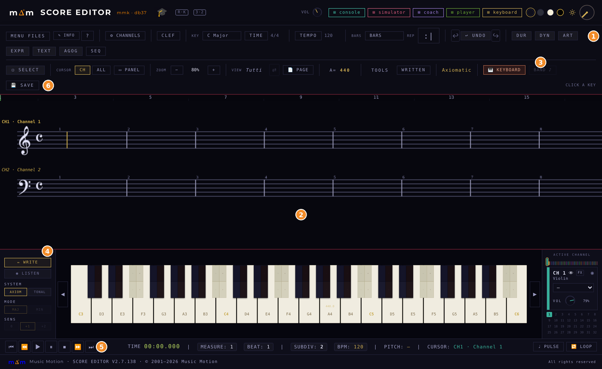
El teclado ④ ya está abierto y dice WRITE: eso quiere decir que lo que toques se escribe. Si no lo ves, haz clic en 🎹 KEYBOARD ③.The keyboard ④ is already open and says WRITE: that means what you play gets written. If you do not see it, click 🎹 KEYBOARD ③.
2 · Escribe cuatro notas2 · Write four notes
- Haz clic al principio del primer compás del pentagrama de arriba. Ahí queda el cursor, la rayita vertical de color: ahí va a caer la nota.Click at the start of the first bar of the top staff. The cursor, the small coloured vertical line, goes there: that is where the note will land.
- La figura ya es la negra. Para otra, usa el numpad: 4 = corchea, 5 = negra, 6 = blanca.The note value is already the quarter note. For another one, use the numpad: 4 = eighth, 5 = quarter, 6 = half.
- En el teclado de abajo, haz clic en C4, D4, E4 y F4, una después de otra. Cada tecla suena y escribe su nota. También puedes escribirlas sin el mouse, con las letras A, S, D y F de la computadora: mira Escribir con las teclas de la computadora.On the keyboard below, click C4, D4, E4 and F4, one after the other. Each key sounds and writes its note. You can also write them without the mouse, with the letters A, S, D and F of the computer: see Writing with the computer keys.
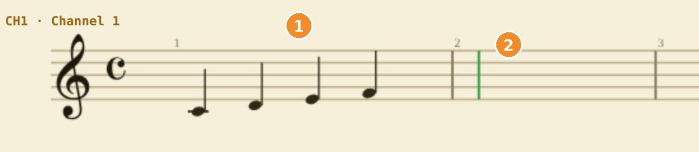
Cómo sabes que salió bien: ves las cuatro notas en el compás 1, y el cursor ② avanzó solo al compás 2. ¿Te equivocaste de tecla? Ctrl+Z borra la última (Undo).How you know it worked: you see the four notes in bar 1, and the cursor ② moved by itself to bar 2. Pressed the wrong key? Ctrl+Z removes the last one (Undo).
3 · Escúchalas3 · Listen to them
- En el transporte ⑤, haz clic en ⏮: vuelve al principio.In the transport ⑤, click ⏮: it goes back to the start.
- Haz clic en ▶. ⏹ lo para.Click ▶. ⏹ stops it.
Cómo sabes que salió bien: oyes Do, Re, Mi, Fa y ves cómo la música avanza en la partitura. Si no se oye nada, abre el motor de sonido con ⊞ keyboard, arriba a la derecha, y prueba otra vez. Más sobre estos botones en el transporte.How you know it worked: you hear C, D, E, F and see the music move along the score. If you hear nothing, open the sound engine with ⊞ keyboard, at the top right, and try again. More about these buttons in the transport.
4 · Guárdala4 · Save it
- Haz clic en 💾 SAVE ⑥, o pulsa Ctrl+S.Click 💾 SAVE ⑥, or press Ctrl+S.
- La primera vez se abre la ventana de guardar de tu computadora: elige la carpeta, deja o cambia el nombre, y haz clic en Save. El archivo termina en .mmf.The first time, your computer’s save window opens: choose the folder, keep or change the name, and click Save. The file ends in .mmf.
- Las veces siguientes, SAVE guarda sobre el mismo archivo, sin preguntar.After that, SAVE saves over the same file, without asking.
Cómo sabes que salió bien: el botón dice ✓ SAVED un momento. Si en cambio aparece un aviso de que no se guardó, sigue lo que dice el aviso. Más en Guardar y en File.How you know it worked: the button says ✓ SAVED for a moment. If a notice says it was not saved instead, follow what the notice says. More in Saving and File.
¿Y ahora?What next?
Tres cosas que casi toda obra necesita al principio: la tonalidad, el compás y el tempo. Cada una está a un botón, en la barra de arriba ①.Three things almost every piece needs at the start: the key, the time signature and the tempo. Each one is one button away, in the top bar ①.
La mesa de mezcla. The mixing desk.
El equilibrio entre los instrumentos de la partitura. No suena por sí misma: refleja los canales del Score y actúa sobre el audio del Cosmic Keyboard, el único motor de sonido. The balance between the score's instruments. It makes no sound of its own: it mirrors the Score's channels and acts on the audio of the Cosmic Keyboard, the only sound engine.
Las tiras · un instrumento en cada unaThe strips · one instrument in each
Cada instrumento de la obra tiene su tira, de arriba abajo: quién es, dónde suena, cuánto suena.Each instrument in the piece has its strip, from top to bottom: who it is, where it sounds, how loud it sounds.

- CH ①: el número y el color del canal. Un clic lo elige, y aparece en la sección CHANNEL de la derecha.CH ①: the channel’s number and colour. One click chooses it, and it appears in the CHANNEL section on the right.
- El instrumento ②: el mismo que tiene el canal en el Score; si lo cambias aquí, cambia allá.The instrument ②: the same one the channel has in the Score; change it here and it changes there.
- PAN ③: dónde suena, más a la izquierda o más a la derecha (ver abajo).PAN ③: where it sounds, more to the left or more to the right (see below).
- El medidor ④: se mueve con lo que suena, en vivo.The meter ④: it moves with what is sounding, live.
- El fader ⑤: el volumen del canal. Abajo dice cuánto, en dB y en porcentaje.The fader ⑤: the channel’s volume. Below it shows how much, in dB and as a percentage.
- M ⑥ lo silencia (mute) y S lo deja sonar solo (solo).M ⑥ silences it (mute) and S lets it play alone (solo).
Arriba, IN USE muestra sólo los canales que usa la obra, o los 32, y NEUTRO deja todo en su punto de partida: los faders a 0 dB, sin M ni S, y el master al 40 %.At the top, IN USE shows only the channels the piece uses, or all 32, and NEUTRO puts everything back to its starting point: faders at 0 dB, no M or S, and the master at 40 %.
Cómo sabes que salió bien: con la obra sonando, al bajar el fader de un canal ese instrumento se oye más suave, y con S se oye sólo él.How you know it worked: with the piece playing, lowering a channel’s fader makes that instrument softer, and with S you hear only it.
PAN · dónde suena el instrumentoPAN · where the instrument sounds
La perilla PAN ③ pone al instrumento frente a los parlantes, como en una orquesta: los violines a la izquierda, los cellos a la derecha. C es el centro. La luz se pone roja hacia la izquierda y verde hacia la derecha, como las luces de un avión.The PAN knob ③ places the instrument in front of the speakers, as in an orchestra: violins on the left, cellos on the right. C is the centre. The light turns red towards the left and green towards the right, like an aeroplane’s lights.
Cómo sabes que salió bien: con auriculares, el instrumento se oye del lado hacia el que giraste la perilla.How you know it worked: with headphones, you hear the instrument on the side you turned the knob to.
CHANNEL · cómo toca el canal elegidoCHANNEL · how the chosen channel plays
La sección CHANNEL muestra el canal que elegiste con un clic en su CH ①, con su instrumento arriba. Sus tres perillas cambian cómo toca ese canal. El botón con luz de cada una la enciende o la apaga, y con doble clic la perilla vuelve a su punto normal.The CHANNEL section shows the channel you chose with a click on its CH ①, with its instrument at the top. Its three knobs change how that channel plays. The lit button under each one switches it on or off, and a double click brings the knob back to normal.
- AGÓG ⑦: la respiración automática del canal, el pequeño rubato de un músico: OFF, L1 o L2. Es la única que se guarda con la obra.AGÓG ⑦: the channel’s automatic breathing, a musician’s small rubato: OFF, L1 or L2. It is the only one saved with the piece.
- PRES ⑧: el toque del canal, de −2 a +2: un ataque más suave o más marcado.PRES ⑧: the channel’s touch, from −2 to +2: a softer or a firmer attack.
- ART ⑨: cuánto se marcan las articulaciones del canal; 100 es lo normal.ART ⑨: how much the channel’s articulations stand out; 100 is normal.
Cómo sabes que salió bien: al mover PRES con la obra sonando, las notas de ese canal entran más suaves o más marcadas.How you know it worked: when you move PRES with the piece playing, that channel’s notes come in softer or firmer.
MIC y MASTER · tu micrófono y el volumen de todoMIC and MASTER · your microphone and the volume of everything
A la derecha, dos columnas fijas: MIC, para tu micrófono, y MASTER, la salida de toda la suite.On the right, two fixed columns: MIC, for your microphone, and MASTER, the output of the whole suite.

- ON ① abre el micrófono; la primera vez el navegador te pide permiso. Low cut ② quita el retumbe de los graves (por debajo de 90 Hz), LOW y HIGH ③ suben o bajan graves y agudos, y REV y ECHO ④ le dan sala y eco.ON ① opens the microphone; the first time the browser asks for permission. Low cut ② removes the boom of the bass (below 90 Hz), LOW and HIGH ③ raise or lower bass and treble, and REV and ECHO ④ give it room and echo.
- 🎧 ⑥ te deja oírte mientras tocas, sólo con auriculares: con parlantes el micrófono se oye a sí mismo y silba. CAL ⑦ mide cuánto tarda tu sonido en volver, para que la grabación salga alineada. Cómo grabarte con el acompañamiento: MIC y ⏺ REC.🎧 ⑥ lets you hear yourself while you play, only with headphones: with speakers the microphone hears itself and whistles. CAL ⑦ measures how long your sound takes to come back, so the recording comes out aligned. How to record yourself with the accompaniment: MIC and ⏺ REC.
- L·R ⑧ es el balance de los parlantes, y REV · ECHO · TONE · WARM ⑨ son las mismas perillas del Keyboard: lo que mueves aquí se mueve allá.L·R ⑧ is the speaker balance, and REV · ECHO · TONE · WARM ⑨ are the same knobs as on the Keyboard: what you move here moves there.
- El fader dorado ⑩ es el volumen total de la suite; con él salen también las grabaciones de ⬤ wav. MUTE ⑪ lo silencia todo.The golden fader ⑩ is the suite’s total volume; the ⬤ wav recordings also come out at that level. MUTE ⑪ silences everything.
Cómo sabes que salió bien: al subir el fader dorado sube todo lo que suena, y el número de abajo cambia.How you know it worked: when you raise the golden fader everything that sounds gets louder, and the number below changes.
MIC: ① ON · ② pan y Low cut · ③ graves y agudos · ④ reverb y eco · ⑤ volumen · ⑥ auriculares · ⑦ CAL — MASTER: ⑧ L·R · ⑨ REV, ECHO, TONE, WARM · ⑩ volumen total · ⑪ MUTE.MIC: ① ON · ② pan and Low cut · ③ bass and treble · ④ reverb and echo · ⑤ volume · ⑥ headphones · ⑦ CAL — MASTER: ⑧ L·R · ⑨ REV, ECHO, TONE, WARM · ⑩ total volume · ⑪ MUTE.
El transporte · tocar y moverse desde la ConsoleThe transport · playing and moving from the Console
La barra de abajo maneja la obra del Score a distancia, sin ir a su ventana.The bottom bar controls the Score’s piece from a distance, without going to its window.

- ⏮ ⏪ ① van al primer compás o al anterior, y ⏩ ⏭ ④ al siguiente o al último. ▶ ⏸ ⏹ ② tocan, pausan y paran.⏮ ⏪ ① go to the first bar or the previous one, and ⏩ ⏭ ④ to the next or the last. ▶ ⏸ ⏹ ② play, pause and stop.
- ⏺ ③ cuenta 3 · 2 · 1 y te graba con el micrófono sobre el acompañamiento, en un WAV; ⏹ termina y guarda.⏺ ③ counts 3 · 2 · 1 and records you with the microphone over the accompaniment, into a WAV; ⏹ finishes and saves.
- GO ⑥: escribe un número de compás y pulsa Enter.GO ⑥: type a bar number and press Enter.
- LOOP ⑦: ◉ toma el compás donde está la obra, para A (donde empieza) y para B (donde termina); 🔁 prende o apaga el loop y ✕ lo borra. Es el mismo loop de la partitura.LOOP ⑦: ◉ takes the bar where the piece is, for A (where it starts) and for B (where it ends); 🔁 turns the loop on or off and ✕ clears it. It is the same loop as in the score.
- TIME ⑤ y MEASURE · BEAT · BPM ⑧ dicen dónde va la obra y a qué tempo.TIME ⑤ and MEASURE · BEAT · BPM ⑧ show where the piece is and at what tempo.
Cómo sabes que salió bien: al pulsar ▶ aquí, la obra empieza a sonar en el Score y TIME avanza.How you know it worked: when you press ▶ here, the piece starts playing in the Score and TIME moves on.
Luz, temas y navegaciónLight, themes & navigation
Sol/luna regula la luminosidad (doble clic = normal). Cuatro temas compartidos con toda la suite. Los botones ⊞ abren las otras apps, quedan encendidos mientras están abiertas y un clic las trae al frente.Sun/moon adjusts luminosity (double-click = normal). Four themes shared across the whole suite. The ⊞ buttons open the other apps, stay lit while they are open, and a click brings them to the front.
Tamaño de la pantallaScreen size
Todo cabe mejor con Chrome al 90% y el Score al 80% (el zoom del Score está en su barra). Para poner Chrome al 90%, haz clic dentro de la app y pulsa una vez Ctrl − (Ctrl 0 vuelve al 100%); funciona también en las ventanas que abre el Keyboard, aunque no muestren el menú. Chrome lo recuerda para todo el sitio: basta hacerlo una vez en tu computador y otra en musicmotionsuite.com. Ojo en la Console: Ctrl + rueda del ratón encima de una perilla mueve la perilla (el volumen), no el zoom; usa el teclado o pon el puntero fuera de las perillas.Everything fits best with Chrome at 90% and the Score at 80% (the Score's zoom is in its toolbar). To set Chrome to 90%, click inside the app and press Ctrl − once (Ctrl 0 goes back to 100%); it also works in the windows the Keyboard opens, even without a menu. Chrome remembers it for the whole site: do it once on your computer and once on musicmotionsuite.com. In the Console, Ctrl + mouse wheel over a knob turns the knob (the volume), not the zoom; use the keyboard or keep the pointer off the knobs.
El banco de pruebas de timbre y registro. Su guía paso a paso («¿cómo se usa?») está en su página. The timbre & register test bench. Its step-by-step guide ("how to use it") lives on its page.
El asesor. The advisor.
Te acompaña mientras escribes, solo si tú quieres. Habla en el momento justo, donde estás trabajando, y guarda la explicación larga para cuando la pidas. It joins you while you write — only if you want it to. It speaks at the right moment, right where you're working, and keeps the long explanation for when you ask.
Abrir el Coach · la oreja 🎓 y el botón ⊞ coachOpening the Coach · the 🎓 ear and the ⊞ coach button
El Coach tiene dos partes: el mensajito, que aparece donde estás trabajando, y la ventana Coach, donde se lee con calma. Las dos se manejan desde la barra de arriba de cada aplicación.The Coach has two parts: the little message, which appears where you are working, and the Coach window, where you read at your own pace. Both are handled from the top bar of each app.
Para abrirlo: pulsa ⊞ coach ② en la barra de arriba del Score, el Keyboard, la Console o el Player. La ventana Coach se abre aparte.To open it: press ⊞ coach ② in the top bar of the Score, the Keyboard, the Console or the Player. The Coach window opens separately.

- La oreja 🎓 ①: un clic la despierta o la duerme. Despierta, late suave en violeta: el Coach escucha y te avisa. Dormida, no dice nada. Lo que eliges en una aplicación vale para todas.The 🎓 ear ①: one click wakes it up or puts it to sleep. Awake, it pulses softly in violet: the Coach is listening and will tell you things. Asleep, it says nothing. What you choose in one app applies to all of them.
- ⊞ coach ②: abre la ventana Coach, con sus pestañas (ver La ventana Coach).⊞ coach ②: opens the Coach window, with its tabs (see The Coach window).
Cómo sabes que salió bien: la oreja late en violeta y se abre la ventana Coach con el saludo del Coach.How you know it worked: the ear pulses in violet and the Coach window opens with the Coach’s greeting.
Quién te acompaña y el idioma · clic derecho en 🎓Who keeps you company and the language · right-click on 🎓
Con clic derecho en la oreja 🎓 se abre un menú corto con dos cosas: quién te acompaña y en qué idioma habla toda la suite.A right-click on the 🎓 ear opens a short menu with two things: who keeps you company and which language the whole suite speaks.
Para abrirlo: haz clic derecho en 🎓 ①.To open it: right-click on 🎓 ①.

- ELEGIR COACH ②: el Suite Coach es paciente y te guía paso a paso aunque no sepas música. Salieri es el maestro exigente, para quien ya sabe (ver Estudio avanzado).CHOOSE COACH ②: the Suite Coach is patient and guides you step by step even if you know no music. Salieri is the demanding master, for those who already know (see Advanced study).
- IDIOMA ③: Español, English, Français, Nederlands o Deutsch. Vale para todas las aplicaciones, y los ? abren la guía en ese idioma.LANGUAGE ③: Español, English, Français, Nederlands or Deutsch. It applies to all the apps, and the ? marks open the guide in that language.
Cómo sabes que salió bien: la marca ✓ queda en lo que elegiste, y los textos de las aplicaciones cambian de idioma.How you know it worked: the ✓ mark stays on what you chose, and the texts of the apps change language.
Todo lo demás, en la página del CoachEverything else, on the Coach page
La ventana Coach y sus pestañas, lo que el Coach te avisa mientras escribes, el juego de composición del Nivel 1 y el estudio avanzado —contrapunto, armonía, orquestación y composición— están en la página del Coach, que crece con cada versión.The Coach window and its tabs, what the Coach tells you while you write, the Level 1 composition game and advanced study — counterpoint, harmony, orchestration and composition — are on the Coach page, which grows with every version.
El instrumento. The instrument.
El único motor de sonido de la suite: todo lo que suena, suena aquí. Treinta y cinco alturas por octava, afinación pitagórica pura, y una franja temperada en cada tecla para escuchar la diferencia. The suite's only sound engine: everything you hear, sounds here. Thirty-five pitches per octave, pure Pythagorean tuning, and a tempered strip on every key to hear the difference.
Cómo afina el Keyboard · SYSTEM, KEY, MODE y SENSHow the Keyboard tunes · SYSTEM, KEY, MODE and SENS
La primera línea de botones decide cómo suena cada tecla: con qué afinación, y en qué tonalidad.The first row of buttons decides how each key sounds: with which tuning, and in which key.

- SYSTEM ① elige entre tres maneras de tocar. 12 TET es el piano de siempre, temperado, y suena sobre las franjas cian de las teclas. Axiomatic es la afinación pitagórica pura: cada tecla por su nombre. Tonal toca por grados de una tonalidad: quien no sabe piano toca y compone correcto en cualquier tonalidad.SYSTEM ① chooses between three ways of playing. 12 TET is the usual tempered piano, and sounds on the cyan stripes of the keys. Axiomatic is pure Pythagorean tuning: each key by its name. Tonal plays by degrees of a key: someone who cannot play the piano plays and composes correctly in any key.
- KEY ② y ALTERATION ③ eligen la tónica: Sol y ♮ es Sol, Si y ♭ es Si♭. Sólo se encienden en Tonal.KEY ② and ALTERATION ③ choose the tonic: G and ♮ is G, B and ♭ is B♭. They only light up in Tonal.
- MODE ④: M es mayor y m menor.MODE ④: M is major and m minor.
- SENS ⑤ es cuánto sube la sensible, la nota que «tira» hacia la tónica: 0 nada, +1 lo normal (empieza ahí) y +2 un efecto más marcado, también sobre las notas cromáticas.SENS ⑤ is how much the leading note rises, the note that «pulls» towards the tonic: 0 not at all, +1 the normal amount (it starts there) and +2 a stronger effect, also on the chromatic notes.
- El rótulo ⑥ dice dónde estás: AXIOMATIC, o la tonalidad, como G♮ MAJOR.The label ⑥ tells you where you are: AXIOMATIC, or the key, such as G♮ MAJOR.
Las teclas de tu computador también tocan: qué tecla da qué nota en cada sistema está en los atajos del Keyboard.The keys of your computer play too: which key gives which note in each system is in the Keyboard shortcuts.
Cómo sabes que salió bien: el rótulo ⑥ muestra lo que elegiste, y en Tonal la fila de abajo del teclado del computador (Z X C V B N M) toca la escala de esa tonalidad.How you know it worked: the label ⑥ shows what you chose, and in Tonal the bottom row of the computer keyboard (Z X C V B N M) plays the scale of that key.
Acord Lab — oír acordes con el mouseAcord Lab — hearing chords with the mouse
Con el clic izquierdo tocas una nota. Un clic derecho sobre el teclado activa el Sostén: la nota que estás tocando se queda sonando con su luz encendida, y cada nota que toques después con el clic izquierdo se suma. Así oyes el acorde completo sin mantener varias teclas apretadas. Otro clic derecho apaga todo.With a left click you play a note. A right click on the keyboard turns on Hold: the note you are playing keeps sounding with its light on, and every note you play afterwards with the left click joins in. That way you hear the whole chord without holding several keys down. Another right click turns everything off.
Cómo sabes que salió bien: las teclas del acorde quedan encendidas y suenan juntas.How you know it worked: the keys of the chord stay lit and sound together.
La salida HiFi · el volumen y el color del sonidoThe HiFi output · the volume and the colour of the sound
En la segunda línea, seis perillas. Se giran arrastrando hacia arriba o hacia abajo, y con doble clic vuelven a su punto neutro. La luz de al lado se enciende cuando la perilla está en uso.On the second row, six knobs. You turn them by dragging up or down, and a double click brings them back to neutral. The light next to each one comes on when the knob is in use.
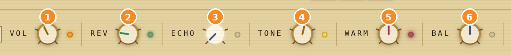
- VOL ①: el volumen de lo que tocas en el teclado. El Score tiene su propio volumen, y el total es el MASTER de la Console.VOL ①: the volume of what you play on the keyboard. The Score has its own volume, and the total is the Console’s MASTER.
- REV ②: la reverberación, como tocar en una sala grande.REV ②: the reverb, like playing in a large hall.
- ECHO ③: el eco, la nota que se repite cada vez más suave. Empieza apagado.ECHO ③: the echo, the note repeating more and more softly. It starts off.
- TONE ④: más oscuro o más brillante.TONE ④: darker or brighter.
- WARM ⑤: más cálido, con un poco de armónicos.WARM ⑤: warmer, with a few more harmonics.
- BAL ⑥: el balance, más a la izquierda o más a la derecha.BAL ⑥: the balance, more to the left or more to the right.
VOL es sólo del teclado; las otras cinco cambian todo lo que oyes, también el Score, y son las mismas de la Console: si mueves una aquí, se mueve allá.VOL is only for the keyboard; the other five change everything you hear, the Score included, and they are the same as in the Console: move one here and it moves there.
Cómo sabes que salió bien: al girar la perilla cambia el sonido y su luz se enciende; con doble clic vuelve a como estaba.How you know it worked: when you turn the knob the sound changes and its light comes on; a double click puts it back as it was.
Grabar y el cofre de grabacionesRecording and the recordings chest
El Keyboard graba lo que tocas y lo guarda para que lo oigas después. Guarda cada nota con su afinación exacta, sin MIDI ni cuantización: lo que vuelve a sonar es justo lo que tocaste.The Keyboard records what you play and keeps it so you can hear it later. It keeps every note with its exact tuning, with no MIDI and no quantization: what plays back is exactly what you played.
Para grabar: pulsa ⏺ ① en la barra Rec, toca, y pulsa ⏹ para terminar. ▶ ② toca la grabación y, pulsado otra vez, la pausa; ⏪ y ⏩ saltan diez segundos atrás o adelante, y el reloj marca el tiempo al milisegundo (00.00.000).To record: press ⏺ ① in the Rec bar, play, and press ⏹ to finish. ▶ ② plays the recording and, pressed again, pauses it; ⏪ and ⏩ jump ten seconds back or forward, and the clock shows the time down to the millisecond (00.00.000).
Para abrir el cofre: pulsa ☰ recs ③, al lado de ♩ pulse y ⊕ FX.To open the chest: press ☰ recs ③, next to ♩ pulse and ⊕ FX.
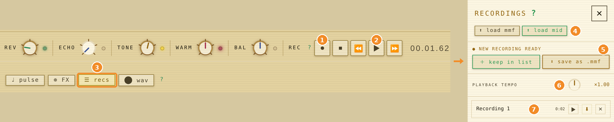
- load mmf y load mid ④ traen una grabación de tu computador. El MIDI entra como capa temperada, en cian.load mmf and load mid ④ bring in a recording from your computer. MIDI comes in as a tempered layer, in cyan.
- La toma nueva ⑤ aparece arriba, al alcance: keep in list la guarda en la lista y save as .mmf la baja como archivo.The new take ⑤ appears at the top, within reach: keep in list keeps it in the list and save as .mmf downloads it as a file.
- La lista ⑦: escribe sobre el nombre para cambiarlo; ▶ la toca, ⬇ la guarda como .mmf y ✕ la borra.The list ⑦: type over the name to change it; ▶ plays it, ⬇ saves it as .mmf and ✕ deletes it.
- Al pie del cofre están las demos de Bartók y de Bach, para probar.At the bottom of the chest are the Bartók and Bach demos, to try out.
PLAYBACK TEMPO ⑥ cambia la velocidad a la que suena una grabación, sin cambiar las notas: suenan igual de afinadas, solo más lento o más rápido. Arrastra la perilla hacia abajo para ir más lento, hasta ×0.50 (la mitad), o hacia arriba para ir más rápido, hasta ×2.00 (el doble). Con Shift la mueves fino, y con doble clic vuelve a ×1.00, la velocidad original.PLAYBACK TEMPO ⑥ changes the speed at which a recording plays, without changing the notes: they stay just as well tuned, only slower or faster. Drag the knob down to go slower, down to ×0.50 (half), or up to go faster, up to ×2.00 (double). With Shift it moves finely, and a double click brings it back to ×1.00, the original speed.

Sirve para dos cosas: grabar despacio un pasaje difícil y oírlo a tempo, o escuchar lento una obra para seguir cada nota. Vale para el ▶ de cualquier grabación del cofre, también los .mmf y .mid que cargues. Al darle ▶ el cofre se cierra; si quieres cambiar la velocidad mientras suena, ábrelo otra vez con ☰ recs, mueve la perilla y suéltala: la obra sigue desde donde iba, con la velocidad nueva.It is useful for two things: recording a hard passage slowly and hearing it at tempo, or listening to a piece slowly to follow every note. It works for the ▶ of any recording in the chest, including the .mmf and .mid files you load. When you press ▶ the chest closes; to change the speed while it plays, open it again with ☰ recs, move the knob and let go: the piece carries on from where it was, at the new speed.
Si saltas a otra danza, el teclado entra afinado en la tonalidad de ese tramo. Y puedes grabar con el Score sonando: la toma sale limpia, solo con lo que tocaste tú. Para guardar el sonido como archivo de audio, usa ⬤ wav.If you jump into another dance, the keyboard enters tuned to that section’s key. And you can record while the Score plays: the take comes out clean, with only what you played. To save the sound as an audio file, use ⬤ wav.
Cómo sabes que salió bien: después de ⏹ aparece «NEW RECORDING READY», y con ▶ oyes lo que tocaste. Con la perilla en ×0.50 suena a la mitad de velocidad, con la misma afinación.How you know it worked: after ⏹ «NEW RECORDING READY» appears, and with ▶ you hear what you played. With the knob at ×0.50 it plays at half speed, with the same tuning.
♩ Pulse — el metrónomo del Keyboard♩ Pulse — the Keyboard’s metronome
El Keyboard tiene su propio metrónomo, más completo que el del Score: aquí eliges tú el tempo, y puedes oír un click además de ver la luz.The Keyboard has its own metronome, more complete than the Score’s: here you choose the tempo yourself, and you can hear a click as well as see the light.
Para abrirlo: pulsa ♩ pulse ① en la barra del Keyboard.To open it: press ♩ pulse ① in the Keyboard bar.

- La luz ② late con el pulso, y ▶ start ③ la enciende y la apaga.The light ② beats with the pulse, and ▶ start ③ turns it on and off.
- tap ④: pulsa este botón varias veces, al ritmo que tienes en la cabeza, y el metrónomo toma ese tempo. Los toques tienen que ir seguidos: si pasan más de 2 segundos, empieza a contar de nuevo.tap ④: press this button several times, at the speed you have in your head, and the metronome takes that tempo. The taps have to come one after another: if more than 2 seconds pass, it starts counting again.
- BPM ⑤: la perilla y el número; BPM son los pulsos por minuto.BPM ⑤: the knob and the number; BPM means beats per minute.
- El menú ⑥: los tempos clásicos, de Largo · 50 a Presto · 184. La perilla, el menú y tap van juntos: si cambias uno, los otros se mueven.The menu ⑥: the classic tempos, from Largo · 50 to Presto · 184. The knob, the menu and tap go together: if you change one, the others move.
- click ⑦ enciende el sonido; empieza apagado, solo con la luz. La perilla de al lado es su volumen, y tone ⑧ el tono del click, más grave o más agudo.click ⑦ turns the sound on; it starts off, with the light only. The knob next to it is its volume, and tone ⑧ the pitch of the click, lower or higher.
Con el ⊗ fijado, el metrónomo sigue sonando aunque hagas otra cosa; sin fijar, al cerrarlo se detiene, así nada queda sonando por olvido. Y late con la obra: cuando suena un .mmf del cofre o el Score —también dentro de un loop A–B—, la luz sigue el compás y el número muestra el tempo de ese tramo. La obra manda: cuando entra su pulso, el metrónomo libre se detiene solo.With the ⊗ pinned, the metronome keeps going even if you do something else; unpinned, closing it stops it, so nothing is left sounding by mistake. And it beats with the piece: when an .mmf from the chest or the Score is playing —also inside an A–B loop—, the light follows the bar and the number shows the tempo of that passage. The piece is in charge: when its pulse comes in, the free metronome stops by itself.
Cómo sabes que salió bien: la luz late al tempo que elegiste, y con click encendido lo oyes. El PULSE del Score es otro: solo luz, con el tempo de la partitura (ver Pulse del Score).How you know it worked: the light beats at the tempo you chose, and with click on you hear it. The Score’s PULSE is a different one: light only, with the tempo of the score (see the Score’s Pulse).
La nota y el horizonte · qué está sonandoThe note and the horizon · what is sounding
Debajo del instrumento, el Keyboard te dice qué nota acabas de tocar.Below the instrument, the Keyboard tells you which note you have just played.

- La nota ①: su nombre y su octava, como F♯ 3.The note ①: its name and its octave, such as F♯ 3.
- La frecuencia ②: cuántas vibraciones por segundo (Hz) tiene, exacta, y en qué sistema estás.The frequency ②: how many vibrations per second (Hz) it has, exactly, and which system you are in.
- El horizonte ③, como el de un avión: con la línea en el centro, la nota está en su lugar pitagórico; sube cuando la nota tira hacia arriba (la sensible) y baja cuando tira hacia abajo.The horizon ③, like an aeroplane’s: with the line in the middle, the note is in its Pythagorean place; it rises when the note pulls upwards (the leading note) and falls when it pulls downwards.
El horizonte solo marca en Tonal, donde las notas tienen un papel dentro de la tonalidad. En Axiomatic la línea queda siempre en el centro. El teclado del Score tiene el mismo horizonte, a la derecha de las teclas, y sigue la misma regla.The horizon only marks in Tonal, where the notes have a role inside the key. In Axiomatic the line always stays in the centre. The Score’s keyboard has the same horizon, to the right of the keys, and it follows the same rule.
Cómo sabes que salió bien: al tocar la sensible en Tonal —Fa♯ en Sol mayor— la línea del horizonte sube.How you know it worked: when you play the leading note in Tonal —F♯ in G major— the horizon line rises.
Instrument — cómo suenan las teclas del KeyboardInstrument — how the Keyboard keys sound
El Keyboard es el que hace sonar toda la suite: también el Score suena a través de él. Instrument elige cómo suenan las teclas cuando tú las tocas, con el mouse o con el teclado del computador: piano, violín, flauta…The Keyboard is what makes the whole suite sound: the Score sounds through it too. Instrument chooses how the keys sound when you play them, with the mouse or the computer keyboard: piano, violin, flute…
Para abrirlo: pulsa el campo Instrument ①, en la segunda línea de la barra. Se abre la lista de todos los instrumentos.To open it: press the Instrument field ①, on the second line of the bar. The list of all the instruments opens.

- filter ②: escribe unas letras («vio», «flu») y quedan solo los instrumentos que las tienen en el nombre.filter ②: type a few letters («vio», «flu») and only the instruments with them in their name remain.
- Las familias ③: cada columna agrupa los instrumentos parecidos: maderas, metales, percusión, cuerdas, voces…The families ③: each column groups similar instruments: woodwinds, brass, percussion, strings, voices…
- Haz clic en uno ④ y queda elegido: la lista se cierra y el campo muestra su nombre. El que está sonando se ve marcado con una raya a la izquierda.Click one ④ and it is chosen: the list closes and the field shows its name. The one that is sounding is marked with a line on its left.
Lo que escoges aquí no cambia la partitura. Cuando el Score suena, cada nota llega al Keyboard con el instrumento de su canal, y ese es el que se oye (ver El instrumento de un canal). Por ejemplo: pones Violin aquí y le das ▶ a una obra para piano. Oyes el piano, y si tocas encima con las teclas, eso suena a violín. Tu elección también se le avisa al Register, que carga el mismo instrumento.What you choose here does not change the score. When the Score plays, each note reaches the Keyboard with the instrument of its channel, and that is the one you hear (see The instrument of a channel). For example: you set Violin here and press ▶ on a piano piece. You hear the piano, and if you play along on the keys, that sounds like a violin. Your choice is also passed to the Register, which loads the same instrument.
Cómo sabes que salió bien: el campo muestra el nombre que elegiste, y al tocar una tecla oyes ese instrumento.How you know it worked: the field shows the name you chose, and when you play a key you hear that instrument.
A= · el diapasón de toda la suiteA= · the reference pitch of the whole suite
El diapasón es la nota La con la que se afina todo. Hoy casi siempre es 440 Hz, pero en otras épocas y orquestas fue más grave o más agudo.The reference pitch is the A everything is tuned to. Today it is almost always 440 Hz, but in other times and orchestras it was lower or higher.
Para abrirlo: pulsa A= 440 ①, arriba a la derecha. Se abre Tuning Reference.To open it: press A= 440 ①, at the top right. Tuning Reference opens.

- Los seis diapasones ②, a un clic: 415 barroco, 430 clásico, 432 natural, 440 moderno, 442 brillante y 466 renacentista.The six reference pitches ②, one click away: 415 baroque, 430 classical, 432 natural, 440 modern, 442 bright and 466 renaissance.
- fine ③: para un valor exacto, de 380 a 480 Hz, en medios hercios.fine ③: for an exact value, from 380 to 480 Hz, in half hertz.
Al cambiar el La no se transpone la música: toda la obra suena un poco más grave o más aguda, y los intervalos siguen siendo los mismos. Es el mismo A= del Score: puedes poner una obra a sonar en el Score y buscar aquí, mientras escuchas, el diapasón de tu instrumento o de tu orquesta. Si después guardas desde el Score, el .mmf lo recuerda. El Pythagorean Tuner tiene su propio control (Reference pitch A4): si afinas tu instrumento a 442 con él, pon también 442 aquí. Más en las preguntas frecuentes.Changing the A does not transpose the music: the whole piece sounds a little lower or higher, and the intervals stay the same. It is the same A= as the Score: you can set a piece playing in the Score and look here, while you listen, for the reference pitch of your instrument or your orchestra. If you then save from the Score, the .mmf remembers it. The Pythagorean Tuner has its own control (Reference pitch A4): if you tune your instrument to 442 with it, set 442 here too. More in the FAQ.
Cómo sabes que salió bien: el botón muestra el La nuevo (por ejemplo A= 415), y la nota que toques después ya suena con él.How you know it worked: the button shows the new A (for example A= 415), and the next note you play already sounds with it.
Octavas y pánicoOctaves and panic
- OCTAVE SHIFT, al pie de la pantalla (◀ ▶, o las flechas ← → del teclado del computador), corre las teclas una octava hacia el grave o hacia el agudo, sin mover la mano.OCTAVE SHIFT, at the bottom of the screen (◀ ▶, or the ← → arrows on the computer keyboard), moves the keys one octave lower or higher, without moving your hand.
- Escape (la tecla Esc) corta todo el sonido de golpe. Sirve si una nota se queda sonando. Funciona también desde el Score, con la obra parada.Escape (the Esc key) cuts all the sound at once. Use it if a note is left sounding. It also works from the Score, with the piece stopped.
- En Tonal, ↑ y ↓ afinan más arriba o más abajo la nota que estás sosteniendo, en vivo.In Tonal, ↑ and ↓ tune the note you are holding higher or lower, live.
- Las teclas del computador cuentan por su lugar, no por su letra: con un teclado AZERTY o QWERTZ suena la tecla que está en el mismo sitio que en el QWERTY.The computer keys count by their place, not by their letter: on an AZERTY or QWERTZ keyboard, the key in the same spot as on QWERTY is the one that sounds.
Cómo sabes que salió bien: al pulsar ▶ el número de OCTAVE SHIFT cambia y la misma tecla suena una octava más aguda.How you know it worked: when you press ▶ the OCTAVE SHIFT number changes and the same key sounds an octave higher.
La tonalidad del Keyboard sigue a la piezaThe Keyboard’s key follows the piece
Cuando suena una obra desde el Score o desde el cofre, el Keyboard cambia solo de tonalidad para acompañarla, y el rótulo de arriba dice en cuál está. Si la obra tiene varias piezas en tonalidades distintas, cambia al pasar de una a otra.When a piece plays from the Score or from the chest, the Keyboard changes key by itself to go along with it, and the label at the top says which key it is in. If the piece has several parts in different keys, it changes as it moves from one to the next.
Un detalle: la partitura sólo dice la armadura, y una misma armadura sirve a dos tonalidades (Si♭ mayor y sol menor tienen los mismos bemoles). Si la obra no dice cuál es, el Keyboard toma la mayor. Las obras de la suite que traen su ficha con la tonalidad de cada pieza dicen la tonalidad exacta, como «fa menor».A detail: the score only gives the key signature, and the same signature serves two keys (B♭ major and G minor have the same flats). If the piece does not say which one it is, the Keyboard takes the major one. The suite’s pieces that come with their card giving the key of each part show the exact key, such as «F minor».
Cómo sabes que salió bien: con la obra sonando, el rótulo de la tonalidad cambia cuando cambia la pieza.How you know it worked: with the piece playing, the key label changes when the part changes.
⬤ wav — guardar como audio lo que estás oyendo⬤ wav — saving what you hear as audio
⬤ wav guarda en un archivo de audio (.wav) todo lo que suena en la suite: lo que tocas en el Keyboard, una grabación del cofre o una obra del Score. El archivo se abre en cualquier computador o teléfono, y sirve para enviarlo o para guardar el recuerdo de una clase.⬤ wav saves everything the suite is playing into an audio file (.wav): what you play on the Keyboard, a recording from the chest or a piece from the Score. The file opens on any computer or phone, and you can send it or keep it as a souvenir of a lesson.
Para grabar: toca primero una nota, porque el audio tiene que estar andando (si no, el Keyboard te lo pide). El botón está al lado de ♩ pulse, ⊕ FX y ☰ recs.To record: play a note first, because the audio has to be running (if it is not, the Keyboard will ask you to). The button is next to ♩ pulse, ⊕ FX and ☰ recs.

- Pulsa ⬤ wav ①. Desde ese momento graba todo lo que suena.Press ⬤ wav ①. From that moment it records everything that sounds.
- Toca, o pon a sonar una grabación o la obra. El botón ② se pone rojo y cuenta los segundos.Play, or start a recording or the piece. The button ② turns red and counts the seconds.
- Pulsa otra vez el botón para terminar. El archivo se descarga solo en la carpeta de descargas de tu navegador (Downloads), con un nombre como mm-capture-153012.wav: la hora en que terminaste.Press the button again to finish. The file downloads by itself into your browser’s download folder (Downloads), with a name like mm-capture-153012.wav: the time you finished.
Graba lo que oyes, tal como lo oyes. Si mueves algo en la Console mientras graba —el MASTER, los faders, el pan, la reverb—, eso queda en el archivo; si el MASTER está al 20 %, el archivo sale al 20 %. Antes de grabar, deja el volumen como quieres que se oiga.It records what you hear, just as you hear it. If you move something in the Console while it records —the MASTER, the faders, the pan, the reverb—, that ends up in the file; if the MASTER is at 20 %, the file comes out at 20 %. Before recording, set the volume the way you want it to sound.
Desde el Score se hace lo mismo con File → SAVE AS WAV: toca la obra, o el tramo marcado con SELECT, y te baja el archivo con el nombre de la obra.From the Score you do the same with File → SAVE AS WAV: it plays the piece, or the stretch marked with SELECT, and downloads the file named after the piece.
Para los curiosos: no es una mezcla calculada después, sino lo que sale hacia los parlantes en ese momento, en estéreo y a 24 bits. Por eso también guarda un clic o un roce, si los hubo.For the curious: it is not a mix worked out afterwards, but what goes out to the speakers at that moment, in stereo and at 24 bits. That is why it also keeps a click or a scrape, if there was one.
Cómo sabes que salió bien: mientras graba, el botón está rojo y los segundos avanzan; al terminar aparece el archivo .wav en Downloads, y al abrirlo oyes lo que sonó.How you know it worked: while it records, the button is red and the seconds go up; when you finish the .wav file appears in Downloads, and when you open it you hear what was playing.
⊕ FX · reverb, eco, porta y rotary para lo que tocas⊕ FX · reverb, echo, porta and rotary for what you play
Para abrirlo: pulsa ⊕ FX ①, al lado de ♩ pulse. Arriba dice el instrumento del canal en el que estás tocando: los efectos son de ese canal.To open it: press ⊕ FX ①, next to ♩ pulse. At the top it shows the instrument of the channel you are playing on: the effects belong to that channel.

- Reverb ②: la resonancia de una sala grande.Reverb ②: the resonance of a large hall.
- Echo wet ③: cuánto eco se oye; Echo fb ④: cuántas veces se repite; Echo time ⑤: cuánto tarda cada repetición, en milisegundos.Echo wet ③: how much echo you hear; Echo fb ④: how many times it repeats; Echo time ⑤: how long each repeat takes, in milliseconds.
- Porta ⑥: la nota se desliza hasta la siguiente, como un violín o una voz.Porta ⑥: the note slides to the next one, like a violin or a voice.
- Rotary ⑦: el altavoz giratorio del órgano de jazz. En 0 está apagado; al girarlo va de lento a rápido. Doble clic: Off.Rotary ⑦: the rotating speaker of the jazz organ. At 0 it is off; turning it goes from slow to fast. Double click: Off.
Estos efectos cambian sólo lo que tocas en vivo. Para que la partitura suene con reverb o eco, se escriben en el Score, en su propio Sound FX (ver Sound FX). Y no se confunden con REV y ECHO de la barra, que son para todo lo que suena. El popup se queda abierto (⊗) hasta que lo cierras, y se arrastra por su encabezado.These effects change only what you play live. For the score to sound with reverb or echo, you write them in the Score, in its own Sound FX (see Sound FX). And they are not the same as REV and ECHO on the bar, which are for everything that sounds. The popup stays open (⊗) until you close it, and you drag it by its header.
Cómo sabes que salió bien: al tocar con Reverb o Echo wet subidos oyes la sala o el eco; la partitura, al sonar, no cambia.How you know it worked: when you play with Reverb or Echo wet turned up you hear the hall or the echo; the score, when it plays, does not change.
La partitura. The score.
Escribes música por canales con el mini-keyboard en modo TODAL: tocas por grados de la tonalidad. No suena por sí mismo — el Keyboard genera el sonido. You write music by channels with the mini-keyboard in TODAL mode: you play by scale degrees. It makes no sound of its own — the Keyboard generates it.
Ver la curva antes de oírla · Peak/Valley · Mirror · la respiraciónSee the curve before you hear it · Peak/Valley · Mirror · the breath
Tanto el editor de la ligadura como el del signo de nota muestran ahora un dibujo en vivo de la curva del gesto, entre dos líneas: Peak (lo más lleno) arriba y Valley (lo más tenue) abajo. El degradé va de teal (lleno) a oro (tenue), como en el pentagrama. Si la ligadura todavía no tiene Peak/Valley propios, la curva sale punteada con la etiqueta «auto»: te muestra la profundidad que el programa elige solo. La forma es una curva suave (un messa es una joroba redondeada, no un triángulo). Peak y Valley son relativos al matiz, no valores fijos: un > desde mf y un > desde ff no valen lo mismo — el matiz manda y el gesto nunca se va a un absoluto. La respiración: el tamaño del swell se mide por los segundos reales de la frase y por cuánto aire trae el matiz, así una ligadura corta y rápida no «bombea» y un mf en una frase larga queda pleno. El Mirror del editor de ligadura ahora también invierte la forma (florece ↔ decae, messa ↔ inverso), además del lado del arco y la altura.Both the slur editor and the note-sign editor now show a live drawing of the gesture's curve, between two lines: Peak (the fullest) on top and Valley (the faintest) at the bottom. The gradient runs from teal (full) to gold (faint), as on the staff. If the slur has no Peak/Valley of its own yet, the curve is drawn dashed with an “auto” label: it shows you the depth the program chooses by itself. The shape is a smooth curve (a messa is a rounded hump, not a triangle). Peak and Valley are relative to the dynamic, not fixed levels: a > from mf and a > from ff are not the same — the dynamic governs and the gesture never jumps to an absolute. The breath: the size of the swell is measured by the phrase's real seconds and by how much air the dynamic carries, so a short, fast slur does not “pump” and an mf over a long phrase stays full. The slur editor's Mirror now also flips the shape (bloom ↔ decay, messa ↔ inverse), on top of the bow side and the height.
Qué es el gesto del ligado. La misma idea que el gesto de la nota, pero sobre toda la frase: la curva va de la primera nota del arco a la última, y cada nota toma el nivel que le toca en su lugar. Las formas son las mismas; sost deja la frase pareja. nun y unu no son curvas: marcan el ataque de cada par de notas y dejan el nivel plano. Si además quieres que una nota del arco haga algo propio, ponle su gesto de nota: los dos se suman.What the slur’s gesture is. The same idea as the note’s gesture, but over the whole phrase: the curve runs from the first note of the arc to the last, and each note takes the level that falls on its place. The shapes are the same; sost keeps the phrase even. nun and unu are not curves: they mark the attack of each pair of notes and keep the level flat. If you also want one note of the arc to do something of its own, give it its note gesture: the two add up.
Escríbela en tu idioma · el ? de la palabra y el vínculoWrite it in your own language · the word’s ? and the link
La tinta es tuya: el campo de texto del popup EXPR no filtra nada y acepta la palabra en el idioma que escribas, que es la regla del papel. Lo que suena es otra cosa — el motor la resuelve a un término canónico, y por eso doux, zart y sanft ya sonaban como dolce sin que la partitura cambiara una letra.
Ahora eso se puede hacer con cualquier palabra, y se ve antes de insertarla. Al lado de la línea azul del preview hay un ?: te dice qué hace esa palabra — el lema al que se resuelve, el grupo (sonido · tempo · dinámica · instrumento), el eje si lo tiene, y el Estado. Sin insertar, mirar y borrar.
Y si el Estado dice todavía no suena, debajo aparece una fila: se comporta como — eliges el término al que se parece y desde ese momento tu palabra suena como él, con la tinta intacta. No eliges la familia: sale del término que elegiste. Mit Schwung atada a dolce queda «Lema dolce (mit schwung) · Grupo sonido · Eje IN».
El vínculo vive en tres capas, y la de más cerca manda. La obra: viaja dentro del .mmf, así que el archivo suena igual en la máquina de otro. Tu diccionario: la casilla «y en mis otras obras» lo guarda en esta computadora y vale para todo lo que abras; destildarla lo baja de ahí y lo deja sólo en la obra. Y el léxico de la suite, que es el piso y no se toca desde la app.The ink is yours: the text field in the EXPR popup filters nothing and takes the word in whatever language you write it, which is the rule of paper. What sounds is another matter — the engine resolves it to a canonical term, which is why doux, zart and sanft already sounded like dolce without the score changing a letter.
Now you can do that with any word, and you see it before inserting. Beside the blue preview line there is a ?: it tells you what that word does — the lemma it resolves to, the group (sound · tempo · dynamics · instrument), the axis if it has one, and the State. No more insert, look and delete.
And if the State says silent, a row appears below: behaves like — pick the term it resembles and from then on your word sounds like it, with the ink untouched. You do not pick the family: it comes from the term you chose. Mit Schwung linked to dolce reads «Lemma dolce (mit schwung) · Group sound · Axis IN».
The link lives in three layers, and the nearest one wins. The piece: it travels inside the .mmf, so the file sounds the same on someone else’s machine. Your dictionary: the «and in my other pieces» checkbox saves it on this computer and applies to everything you open; unticking it takes it out of there and leaves it in the piece alone. And the suite’s lexicon, which is the floor and is not written from the app.
La agógica de frase (ASYM AGOG): el solista juega, la reja no se muevePhrase agogics (ASYM AGOG): the soloist plays, the grid stays put
La agógica que ya conocías inclina una nota. Ésta le da forma al tiempo de un tramo entero: en modo SELECT cierras una selección sobre un canal, botón derecho y ⌘ ASYM AGOG. Adentro de la región los ataques de ese canal se adelantan y se atrasan mientras el acompañamiento sigue en su reja — el tempo no se toca, y el canal que no tiene región no se mueve un microsegundo. Es el rubato de siempre: el arpa va inexorable y el bajo juega con la frase. Eliges una de cuatro fases, que son la forma de la curva —Inhale toma aire al entrar y vuelve · Move empuja en el cuerpo y paga al final · Arrive roba del medio y ensancha la llegada · Exhale afloja después del pico—, más Flat, que no es una curva sino la reja: la línea queda en cero y suena sólo lo que muevas a mano, que es como se escribe un vals. π⁻¹ invierte. Con cualquiera de las cuatro primeras la frase entra y sale en la reja: empieza y termina en cero.
El EJE de la región dice qué gradúa esa curva, y son tres cosas distintas de una misma nota: Tempo cuándo entra, Pres con qué entra —la presencia del ataque— y ART cuánto dura y con cuánto peso. Cada eje guarda su curva sobre el mismo tramo, y el color de la banda dice cuál miras: lima, teal, lavanda.
En el dibujo del popup cada punto es una nota: arrástralo y retocas ésa sola, con la fase intacta. Las flechitas caminan de nota en nota y los +/− afinan; en el eje ART los puntos huecos son las notas sin articulación escrita, donde no hay nada que escalar. Los chips de canal dicen a quiénes alcanza —una frase que hacen los dos violines es una región que alcanza a los dos—, y con un nombre la región pasa a ser un patrón: lo llevas a otro tramo con Take · de M a M, y escondes o borras de una vez todas las que lo llevan.The agogics you already knew leans one note. This one shapes the time of a whole span: in SELECT mode you close a selection over a channel, right-click and pick ⌘ ASYM AGOG. Inside the region the onsets of that channel run ahead and hold back while the accompaniment stays on its grid — the tempo is never touched, and a channel with no region does not move by a microsecond. It is rubato in the old sense: the harp goes on inexorably and the bass plays with the phrase. You pick one of four phases, which are the shape of the curve —Inhale takes air on the way in and returns · Move pushes through the body and repays at the end · Arrive steals from the middle and broadens the goal · Exhale relaxes after the peak— plus Flat, which is not a curve but the grid itself: the line sits at zero and only what you move by hand is heard, which is how a waltz is written. π⁻¹ mirrors it. With any of the first four the phrase leaves and rejoins the grid: it starts and ends at zero.
The region's AXIS says what that curve grades, and they are three different things about one note: Tempo when it comes in, Pres what it comes in with —the presence of the attack— and ART how long it lasts and with how much weight. Each axis keeps its own curve over the same span, and the band colour says which one you are looking at: lime, teal, lavender.
In the popup's drawing every dot is a note: drag one and you tweak that note alone, with the phase left intact. The arrows walk from note to note and the +/− fine-tune; on the ART axis the hollow dots are notes with no written articulation, where there is nothing to scale. The channel chips say who it reaches —a phrase both violins play is one region reaching both— and once it has a name the region becomes a pattern: you take it to another span with Take · from M to M, and hide or delete every region carrying that name at once.
INT es cuánto, en fracción de pulso y no de la nota — así una blanca y una corchea del mismo pasaje se corren de forma comparable, que es como se siente. Subtle apenas se insinúa; Expressive es el punto medio; Extreme se oye como licencia. La región sólo desplaza: la grilla no se mueve, el tramo dura exactamente lo escrito y la frase reengancha sola, así que se puede usar con la orquesta tocando. Donde ya pusiste una marca de agógica por nota, manda ésa; y dentro de la región la agógica automática se calla, porque ahí declaraste tú. El botón ? del popup abre la explicación completa en el idioma que tengas puesto. Y desde hoy la región viaja en el .mmf: antes vivía sólo en la pestaña y se perdía al recargar.INT is how much, as a fraction of a beat and not of the note — so a half and an eighth in the same passage displace comparably, which is how it feels. Subtle barely hints; Expressive is the middle ground; Extreme reads as a liberty. The region only displaces: the grid stays put, the span lasts exactly what is written and the phrase rejoins on its own, so it works with the orchestra playing. Where you already placed a per-note agogic mark, that one wins; and inside the region auto-agogics stays quiet, because there you declared it yourself. The popup's ? button opens the whole explanation in whichever language you have set. And from today the region travels inside the .mmf: before, it lived only in the tab and was lost on reload.
Los cambios de cada versión —lo nuevo y lo corregido— están aparte, en la página Novedades.The changes of each version — what is new and what was fixed — are kept apart, on the What’s new page.
El recorrido completo de funciones está en su página. The full feature tour lives on its page.
Lo que rodea a la partitura. What surrounds the score.
Arriba, lo que vale para toda la suite: el tema, la luz de la pantalla, el volumen maestro y cómo se leen los transpositores. Abajo, el transporte y los cuatro números que se pueden cambiar. Y en medio, la partitura, con sus gestos de mouse y de teclado — los que no se adivinan y hacen toda la diferencia.Above, what applies to the whole suite: the theme, the light of the screen, the master volume and how transposing instruments are read. Below, the transport and the four numbers that can be changed. And in between, the score, with its mouse and keyboard gestures — the ones nobody guesses and that make all the difference.
En la barra de arribaOn the top bar
Los cuatro temas · y son de toda la suiteThe four themes · and they belong to the whole suite
Los cuatro círculos de la barra son Dark, Gray, Clear y High Contrast. La elección no es del Score: se guarda en un solo lugar y la toman todas las apps, así que el Keyboard, la Console y el Player aparecen con el tema que elegiste acá. Clear es el tema para trabajar con luz de día o para mostrar la pantalla a alguien; High Contrast está para leer sin esfuerzo.The four circles on the bar are Dark, Gray, Clear and High Contrast. The choice does not belong to the Score: it is stored in one place and every app takes it, so the Keyboard, the Console and the Player come up in the theme you picked here. Clear is the theme for daylight or for showing your screen to someone; High Contrast is there for effortless reading.
La perilla de luminosidad · la pantalla de esta salaThe luminosity knob · the screen in this room
No cambia el tema: ajusta la pantalla sobre el tema que ya tienes. Se arrastra ↕, la rueda la mueve paso a paso y el doble clic la devuelve a cero. En los temas oscuros aclara —el icono se pone sol— y en el tema claro oscurece —se pone medialuna—, porque el problema es el opuesto en cada caso. Viaja contigo: la mueves en el Score y el Keyboard queda igual, al instante.It does not change the theme: it adjusts the screen over the theme you already have. It drags ↕, the wheel moves it in steps, and a double click returns it to zero. In the dark themes it brightens —the icon turns into a sun— and in the light theme it darkens —a crescent moon—, because the problem is the opposite in each case. It travels with you: move it in the Score and the Keyboard matches at once.
El Vol de la barra es el volumen de lo que el Score mandaThe Vol on the bar is the volume of what the Score sends
No es el volumen de un canal, y tampoco el maestro: es el volumen de lo que el Score manda tocar. Se arrastra ↕ o se mueve con la rueda, y arranca en 40 %. Conviene saber por qué: el Score no tiene sonido — manda el valor y el Cosmic Keyboard, que es el motor, lo aplica a las notas que vienen del Score. Hay tres perillas de volumen en la suite y cada una manda sobre lo suyo: ésta sobre el Score, el VOL del Keyboard sobre lo que tocas tú en el teclado, y el MASTER de la Console sobre el total (que es lo que graba el SAVE AS WAV). Así, con el Score en play, puedes bajar el Score y ensayar encima con el teclado pleno, o al revés. El volumen de un canal está en la ficha del canal activo y en la Console.It is not the volume of one channel, nor the master: it is the volume of what the Score sends to be played. It drags ↕ or moves with the wheel, and starts at 40 %. It is worth knowing why: the Score has no sound — it sends the value and the Cosmic Keyboard, which is the engine, applies it to the notes that come from the Score. There are three volume knobs in the suite and each rules its own: this one the Score, the Keyboard VOL what you play on the keys, and the Console MASTER the whole (which is what SAVE AS WAV records). So, with the Score playing, you can turn the Score down and rehearse over it with the keyboard full, or the other way round. The volume of one channel is on the active-channel card and in the Console.
WRITTEN · CONCERT · leer la parte, o leer la obraWRITTEN · CONCERT · reading the part, or reading the piece
Es el interruptor de los instrumentos transpositores, y sólo cambia lo que se dibuja: ni una nota se mueve, ni el sonido cambia. En WRITTEN —como abre el Score— cada canal transpositor se ve en su altura escrita, y su armadura se corre por el mismo intervalo: el corno en Fa muestra sus sostenidos, como en el atril del cornista. Un clic y pasa a CONCERT, el botón se llena de vino: todo se dibuja en sonido real, que es como hay que mirarlo para revisar una armonía. El intervalo lo pone el instrumento del canal —piccolo una octava, clarinete un tono, corno una quinta, contrabajo y guitarra una octava, glockenspiel dos— así que en violines, violas y cellos no se mueve nada, y un canal sin instrumento tampoco se mueve.This is the switch for transposing instruments, and it only changes what is drawn: not one note moves, and the sound does not change. In WRITTEN —how the Score opens— each transposing channel is seen at its written pitch, and its key signature shifts by the same interval: the horn in F shows its sharps, as on the horn player's stand. One click and it becomes CONCERT, the button filling wine red: everything is drawn at real sound, which is how you have to look at it to check a harmony. The interval comes from the channel's instrument —piccolo an octave, clarinet a tone, horn a fifth, double bass and guitar an octave, glockenspiel two— so nothing moves in violins, violas and cellos, and a channel with no instrument does not move either.
La hoja — trabajar en ella, o sacarla en papel.The sheet — working on it, or getting it onto paper.
📄 PAGE / ▦ SCROLL · la tira o la hoja📄 PAGE / ▦ SCROLL · the strip or the sheet
El Score te muestra la música de dos maneras. En SCROLL es una tira larga que corre hacia la derecha: es la más cómoda para escribir. En PAGE la ves en hojas, como saldrá impresa, y ahí decides cómo se reparte en las páginas.The Score shows you the music in two ways. In SCROLL it is a long strip running to the right: the easiest one to write in. In PAGE you see it on sheets, as it will be printed, and that is where you decide how it is spread over the pages.
Para abrirlo: pulsa 📄 PAGE ①. El mismo botón pasa a decir ▦ SCROLL: púlsalo para volver a la tira. La tira no cambia: te espera igual.To open it: press 📄 PAGE ①. The same button then reads ▦ SCROLL: press it to go back to the strip. The strip does not change: it waits for you as it was.

- La vista ②: Full page (la hoja entera), Fit width (al ancho de la pantalla) o Side by side (dos hojas, como un libro abierto).The view ②: Full page (the whole sheet), Fit width (to the width of the screen) or Side by side (two sheets, like an open book).
- Bars/sys ③: cuántos compases entran en cada línea (en música, un sistema). Auto los acomoda según el ancho; o eliges de 1 a 9.Bars/sys ③: how many bars fit on each line (in music, a system). Auto fits them to the width; or you choose from 1 to 9.
- Staff ④: el tamaño del pentagrama, en milímetros de papel, de 3 a 9. Para una parte que se toca en el atril, 7 mm; para una partitura de muchos instrumentos, 4 o 5.Staff ④: the size of the staff, in millimetres of paper, from 3 to 9. For a part played from the music stand, 7 mm; for a score with many instruments, 4 or 5.
- Gap ⑤: el aire entre una línea y la siguiente.Gap ⑤: the space between one line and the next.
- Pages ⑥: en cuántas hojas quieres la obra. El Score la acomoda solo; si no cabe, te dice cuál es el mínimo posible.Pages ⑥: how many sheets you want the piece on. The Score arranges it by itself; if it does not fit, it tells you the smallest number possible.
Sobre la hoja se sigue trabajando: un clic pone el cursor o selecciona una nota, se arrastran notas y marcas, se selecciona por área, y el clic derecho abre los mismos menús que en la tira. Al tocar ▶, las notas que suenan se encienden sobre la hoja. El zoom es Ctrl + rueda. Para escribir mucho, la tira es más cómoda.You keep working on the sheet: a click places the cursor or selects a note, notes and marks can be dragged, you can select an area, and the right click opens the same menus as on the strip. When you press ▶, the notes that are sounding light up on the sheet. Zoom is Ctrl + wheel. For a lot of writing, the strip is more comfortable.
Estos ajustes se guardan con la obra y son los mismos de la hoja de impresión (PRINT / PDF): lo que acomodas aquí sale así en el papel. Si una línea queda con un compás de más o de menos, el clic derecho sobre esa línea te deja moverla o pasarle un compás (ver ⠿ Sistema).These settings are saved with the piece and are the same as on the print sheet (PRINT / PDF): what you arrange here comes out like that on paper. If a line ends up with one bar too many or too few, a right click on that line lets you move it or pass a bar along (see ⠿ System).
Cómo sabes que salió bien: ves la obra en hojas blancas, como un libro, y al cambiar ③ o ⑥ la hoja se rearma en el momento.How you know it worked: you see the piece on white sheets, like a book, and when you change ③ or ⑥ the sheet rearranges itself straight away.
🖨 PRINT / PDF · imprimir la partitura o guardarla en PDF🖨 PRINT / PDF · printing the score or saving it as a PDF
Para abrirlo: pulsa MENU FILES ① y después 🖨 PRINT / PDF ②. Se abre la hoja de impresión: las páginas tal como saldrán, con su barra de ajustes arriba.To open it: press MENU FILES ① and then 🖨 PRINT / PDF ②. The print sheet opens: the pages just as they will come out, with their settings bar at the top.


- Show ③: Full score, la partitura completa, o Selected CH, sólo los canales elegidos (la parte de un instrumento; ver abajo).Show ③: Full score, the whole score, or Selected CH, only the chosen channels (one instrument’s part; see below).
- Paper ④: A4, Letter o A3.Paper ④: A4, Letter or A3.
- Bars/system, Staff mm, Sys gap y Pages ⑤: los mismos ajustes de PAGE, y van juntos: lo que cambias aquí cambia allá.Bars/system, Staff mm, Sys gap and Pages ⑤: the same settings as in PAGE, and they go together: what you change here changes there.
- Print / PDF ⑥ abre la ventana de imprimir de tu navegador. Elige tu impresora, o en Destination elige Save as PDF para guardar un archivo PDF.Print / PDF ⑥ opens your browser’s print window. Choose your printer, or under Destination choose Save as PDF to save a PDF file.
- Close ⑦ vuelve a la partitura.Close ⑦ goes back to the score.
- PAGE HEADER · print only ⑧: el título, el subtítulo, el compositor, el nombre de la parte y el ©, cada uno con su tamaño. Sólo cambian el papel: si dejas un campo vacío, se usa el de Score Info. En la página 1 puedes agarrar la cabecera con el mouse y correrla.PAGE HEADER · print only ⑧: the title, subtitle, composer, part name and ©, each with its size. They only change the paper: if you leave a field empty, the one from Score Info is used. On page 1 you can grab the header with the mouse and move it.
Lo que ves en la hoja de impresión es lo que sale: sin la selección cian, sin los botones y sin las notas ocultas. Debajo de la barra, Footer y Page # ponen o quitan el pie y el número de página.What you see on the print sheet is what comes out: without the cyan selection, without the buttons and without hidden notes. Below the bar, Footer and Page # add or remove the footer and the page number.
Si la obra la abriste desde una clase, en modo demo, es más corto: el botón 🖨 PRINT de arriba, junto al título, arma la hoja y abre directamente la ventana de imprimir.If you opened the piece from a lesson, in demo mode, it is shorter: the 🖨 PRINT button at the top, next to the title, lays out the sheet and opens the print window straight away.
Cómo sabes que salió bien: se abre la ventana de imprimir del navegador mostrando tus hojas; con Save as PDF el archivo queda en Downloads.How you know it worked: your browser’s print window opens showing your sheets; with Save as PDF the file ends up in Downloads.
Y la parte de un instrumento sale del PanelAnd an instrument's part comes out of the Panel
El 🖨 PRINT VIEW del Panel abre esa misma hoja de impresión, pero con Mostrar ya puesto en «canales elegidos»: los que tengas en los chips. Es el camino corto para las partes — eliges el instrumento en el Panel, aprietas PRINT VIEW e imprimes. Desde MENU FILES puedes hacer lo mismo cambiando Mostrar a mano.The Panel's 🖨 PRINT VIEW opens that same print sheet, but with Show already set to “selected channels”: the ones on your chips. It is the short road to parts — pick the instrument in the Panel, press PRINT VIEW and print. From MENU FILES you can do the same by changing Show by hand.
La barra de abajo — el transporte y los números de la obra.The bottom bar — the transport and the piece's numbers.
La barra de abajo · lo que te dice y lo que puedes cambiarThe bottom bar · what it tells you and what you can change
Abajo de todo está la barra del transporte. Te dice dónde estás en la obra, mientras escribes y mientras suena.At the very bottom is the transport bar. It tells you where you are in the piece, while you write and while it plays.

Una regla fácil para leerla: lo que tiene recuadro se cambia con un clic; lo que no tiene recuadro solo te informa.An easy rule for reading it: what has a box around it changes with a click; what has no box only tells you something.
- TIME ①: cuánto tiempo pasó desde el comienzo, en minutos, segundos y milésimas.TIME ①: how much time has gone by since the start, in minutes, seconds and thousandths.
- MEASURE · BEAT · SUBDIV · BPM ②: el compás, el tiempo dentro del compás, el tamaño del paso del cursor y la velocidad. Tienen recuadro: se cambian. Cómo, en los cuatro chips.MEASURE · BEAT · SUBDIV · BPM ②: the bar, the beat inside the bar, the size of the cursor step and the speed. They have a box: you can change them. How, in the four chips.
- PITCH ③: la altura de la última tecla que tocaste.PITCH ③: the pitch of the last key you played.
- CURSOR ④: en qué instrumento está el cursor.CURSOR ④: which instrument the cursor is on.
Cómo sabes que salió bien: pulsa ▶ y mira TIME: los números corren. Mientras la obra suena aparece al lado TOTAL, lo que dura la obra entera.How you know it worked: press ▶ and watch TIME: the numbers run. While the piece plays, TOTAL appears next to it: how long the whole piece lasts.
Los cuatro chips · MEASURE, BEAT, SUBDIV, BPMThe four chips · MEASURE, BEAT, SUBDIV, BPM
MEASURE y BEAT son para ir: un clic los convierte en una casillita, escribes el número y Enter te lleva el cursor ahí (Esc cancela). Con la numeración por movimiento, MEASURE dice además en qué movimiento estás y qué compás es allá adentro. SUBDIV tiene su propia entrada, acá abajo: es el paso del cursor. BPM no es el tempo de la obra: es el que rige en el compás donde estás, así que cambia solo al pasar por un cambio de tempo; un clic y lo escribes, entre 20 y 320.MEASURE and BEAT are for going: a click turns them into a little box, you type the number and Enter takes the cursor there (Esc cancels). With per-movement numbering, MEASURE also says which movement you are in and which bar that is inside it. SUBDIV has its own entry, just below: it is the cursor step. BPM is not the piece's tempo: it is the one ruling in the bar you are in, so it changes by itself as you pass a tempo change; one click and you type it, between 20 and 320.
SUBDIV · de 1 a 8, y es el paso con el que camina el cursorSUBDIV · from 1 to 8, and it is the step the cursor walks with
Es el número más útil de la barra y el que menos se entiende. SUBDIV divide el tiempo en 1 a 8 partes —1 la negra, 2 la corchea, 3 el tresillo de corchea, 4 la semicorchea, y así hasta la fusa— y de ahí sale todo lo que se mueve por pasos: las flechas ← → corren el cursor exactamente un paso de ésos, lo que arrastras se acomoda a esa reja al soltar, la selección que mueves se pega a ella, y la luz del PULSE late con ella y te nombra la figura. Si quieres escribir a contratiempo, SUBDIV 2 pone el cursor en el medio del tiempo con una flecha; para un tresillo, 3. Se pone en 3 lo que en 2 no existe: la reja binaria y la ternaria no son la misma, y el chip es el que elige en cuál estás. Al abrir una obra, el Score la deduce de la música —la división más fina que explica lo escrito, nunca menos de 2 para que siempre puedas entrar a contratiempo— y avisa si alguna nota quedó fuera de esa reja, sin tocar nada. Al cambiar la cifra de compás se reacomoda sola. Y no tiene nada que ver con la subdivisión de la agógica, que es otra cosa y vive en su popup.It is the most useful number on the bar and the least understood. SUBDIV divides the beat into 1 to 8 parts —1 the quarter, 2 the eighth, 3 the eighth-note triplet, 4 the sixteenth, and so on to the 32nd— and out of it comes everything that moves in steps: the ← → arrows move the cursor exactly one of those steps, what you drag settles onto that grid when you let go, the selection you move snaps to it, and the PULSE light beats with it and names the value for you. If you want to write off the beat, SUBDIV 2 puts the cursor in the middle of the beat with one arrow; for a triplet, 3. You set 3 for what does not exist in 2: the binary and the ternary grids are not the same, and the chip is what picks which one you are in. On opening a piece the Score deduces it from the music —the finest division that explains what is written, never less than 2 so you can always come in off the beat— and tells you if some note fell outside that grid, without touching anything. Changing the time signature resettles it. And it has nothing to do with the agogics subdivision, which is another thing and lives in its own popup.
Los tres que sólo informan · TIME, PITCH, CURSORThe three that only inform · TIME, PITCH, CURSOR
TIME es dónde está la aguja, en minutos y milésimas; al tocar aparece al lado TOTAL, lo que dura la obra desplegada — con sus repeticiones, no la cuenta del papel. PITCH es la altura pitagórica de la última tecla que tocaste, con su desvío: es la ventanita por donde se ve la afinación real. CURSOR dice dónde estás escribiendo: canal, instrumento y abreviatura, o la orquesta entera si el cursor está en ALL.TIME is where the needle is, in minutes and thousandths; on playback TOTAL appears beside it, the duration of the unfolded piece — with its repeats, not the paper count. PITCH is the Pythagorean pitch of the last key you played, with its deviation: the little window through which the real tuning shows. CURSOR says where you are writing: channel, instrument and abbreviation, or the whole orchestra if the cursor is on ALL.
Los botones para escuchar · tocar, parar y moverseThe listening buttons · play, stop and move around
A la izquierda de la barra de abajo están los botones para escuchar la obra, como en cualquier reproductor de música.On the left of the bottom bar are the buttons for listening to the piece, like on any music player.
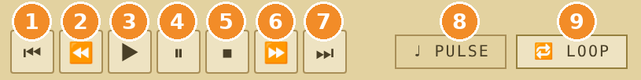
- ⏮ vuelve al comienzo de la obra. Si marcaste un tramo de trabajo, al comienzo del tramo.⏮ goes back to the start of the piece. If you marked a work range, to the start of the range.
- ⏪ retrocede un compás.⏪ goes back one bar.
- ▶ toca la obra desde donde estás. Atajo: la barra espaciadora.▶ plays the piece from where you are. Shortcut: the space bar.
- ⏸ hace una pausa. Otro clic sigue desde el mismo punto.⏸ pauses. Another click goes on from the same point.
- ⏹ para.⏹ stops.
- ⏩ avanza un compás.⏩ goes forward one bar.
- ⏭ va al final de la obra.⏭ goes to the end of the piece.
- ♩ PULSE enciende el metrónomo. No elige el tempo: lo lee de la partitura.♩ PULSE turns on the metronome. It does not choose the tempo: it reads it from the score.
- 🔁 LOOP repite un pasaje una y otra vez. Cómo se marca el pasaje, en el loop.🔁 LOOP repeats a passage again and again. How you mark the passage, in the loop.
Ojo: el sonido lo hace el Keyboard. Si no está abierto, ▶ mueve la aguja pero no se oye nada.Watch out: the sound is made by the Keyboard. If it is not open, ▶ moves the playhead but you hear nothing.
Cómo sabes que salió bien: al pulsar ▶ oyes la música, una línea recorre la partitura y TIME corre en la barra de abajo.How you know it worked: when you press ▶ you hear the music, a line runs across the score and TIME runs in the bottom bar.
La tira del navegador — buscar un pasaje, y encerrarse en él.The navigator strip — finding a passage, and shutting yourself into it.
La tira del navegador · mapa cuando ves todo, regla cuando estás adentroThe navigator strip · a map when you see it all, a ruler when you are inside
La tira de arriba del pentagrama cambia de naturaleza según el zoom: con la obra entera a la vista es un mapa —cada compás ocupa lo mismo— y cuando estás en un pasaje se vuelve una regla, donde cada marca cae exactamente sobre su barra. Un clic te lleva a ese compás, y si arrastras con el botón apretado la música se busca sola mientras te mueves. Al pasar el mouse dice qué compás es, y sobre una marca te dice cuál es.The strip above the staff changes its nature with the zoom: with the whole piece in view it is a map —every bar takes the same width— and when you are inside a passage it becomes a ruler, where each mark falls exactly over its barline. A click takes you to that bar, and dragging with the button held scrubs as you move. Hovering tells you which bar it is, and over a mark it tells you which mark.
A y B se marcan con clic derecho sobre la tiraA and B are marked with a right-click on the strip
Éste es el gesto que no se adivina: clic derecho sobre la tira, en el compás que quieres, y el menú que aparece ofrece ▼A Loop Start y ▼B Loop End con el número de ese compás. Puestas las dos, el loop se enciende solo. Cada triángulo se arrastra para afinar el tramo, y el clic derecho sobre el triángulo lo borra. El loop repite sin contar vueltas, y el salto de B a A es inmediato — los respiros de las barras de adentro del tramo sí se respetan. El motor solo te envuelve pero no te lleva: el que te lleva a A es «tocar el loop», en el clic derecho del botón LOOP.This is the gesture nobody guesses: right-click on the strip, on the bar you want, and the menu offers ▼A Loop Start and ▼B Loop End with that bar's number. With both set, the loop switches itself on. Each triangle drags to fine-tune the span, and a right-click on a triangle deletes it. The loop repeats without counting rounds, and the jump from B to A is immediate — the breaths on barlines inside the span are respected. The engine wraps you but does not carry you: what takes you to A is “play the loop”, in the LOOP button's right-click.
Y se le pueden poner rótulos a la tiraAnd the strip can be given labels
En el mismo menú de la tira está Mark section: le pones un rótulo a ese compás —A, B, Coda, lo que uses— y queda escrito en la tira, para volver ahí de un vistazo. Son rótulos de trabajo, no las letras de ensayo que se imprimen: esas se generan desde el popup TEXT.In the same strip menu there is Mark section: you give that bar a label —A, B, Coda, whatever you use— and it stays written on the strip, so you can come back at a glance. These are working labels, not the rehearsal marks that get printed: those are generated from the TEXT popup.
El loop no es el tramo de trabajoThe loop is not the work range
Se confunden y son opuestos. El loop es del sonido: repite un tramo al tocar. El tramo de trabajo —clic derecho en el chip MEASURE— es de la navegación, y sirve para una cosa muy concreta: cuando estás corrigiendo los compases 40 a 60, el ⏮ te lleva al 40 y no al 1, el ⏭ al 60 y no al final, y ⏪ ⏩ se quedan adentro. Los dos botones de los extremos se ponen en teal para recordarte que hay un tramo puesto. En el panelito escribes From y To —queda fijado hasta que lo cierres, y se arrastra— y ✕ Clear range devuelve la obra entera. No esconde nada, no borra nada y no toca la reproducción: ▶ sigue tocando la obra completa. Para trabajar un pasaje, lo natural es poner los dos: el tramo para moverte y el loop para oírlo.They get confused and they are opposites. The loop belongs to sound: it repeats a span on playback. The work range —right-click on the MEASURE chip— belongs to navigation, and it is for one very concrete thing: when you are fixing bars 40 to 60, ⏮ takes you to 40 and not to 1, ⏭ to 60 and not to the end, and ⏪ ⏩ stay inside. Both end buttons turn teal to remind you a range is set. In the little panel you type From and To —it stays pinned until you close it, and it drags— and ✕ Clear range gives the whole piece back. It hides nothing, deletes nothing and does not touch playback: ▶ still plays the whole piece. To work on a passage, the natural thing is to set both: the range to move, the loop to hear it.
Los canales — ver, oír, y quién manda cada cosa.The channels — seeing, hearing, and who owns what.
Ver y no ver un canal · la casilla y el ojoSeeing a channel or not · the box and the eye
En la lista de canales (botón ⚙ CHANNELS) cada fila tiene dos controles para la vista. Hacen cosas distintas.In the channel list (button ⚙ CHANNELS) each row has two controls for what you see. They do different things.

- La casilla ①: apagada, el pentagrama desaparece de la pantalla y los demás se juntan. El canal sigue existiendo, así que sigue sonando.The box ①: switched off, the staff disappears from the screen and the others move together. The channel still exists, so it still sounds.
- El ojo 👁 ②: deja el pentagrama muy claro, casi transparente. Sirve para tenerlo a la vista como referencia mientras escribes en otro.The eye 👁 ②: makes the staff very faint, almost transparent. It is useful to keep it in view as a reference while you write on another one.
- FX ④ abre los efectos de sonido del canal: reverb, eco y otros. Se explican en Sound FX. Si el canal ya tiene efectos, FX se ve en verde.FX ④ opens the sound effects of the channel: reverb, echo and more. They are explained in Sound FX. If the channel already has effects, FX shows in green.
Para silenciar un canal está ③: lo explica Oír y no oír.To mute a channel there is ③: it is explained in Hearing a channel or not.
Cómo sabes que salió bien: con la casilla apagada ya no ves ese pentagrama; con el ojo lo ves pálido. Un clic más y vuelve como estaba.How you know it worked: with the box off you no longer see that staff; with the eye you see it pale. One more click and it comes back as it was.
Ojo: con la casilla apagada, el ojo y el silencio de esa fila no hacen nada. Primero vuelve a encender la casilla.Watch out: with the box off, the eye and the mute of that row do nothing. Switch the box back on first.
Oír y no oír un canal · silenciar no escondeHearing a channel or not · muting does not hide
Silenciar (en inglés mute) calla un canal pero lo deja a la vista. Sirve, por ejemplo, para escuchar el piano sin la mano izquierda.Muting silences a channel but leaves it in view. It is useful, for example, to hear the piano without the left hand.
Para silenciar un canal, usa cualquiera de estos tres:To mute a channel, use any of these three:
- el botón ◉ de su fila en la lista ⚙ CHANNELS (el ③ de la imagen de arriba);the ◉ button in its row of the ⚙ CHANNELS list (③ in the picture above);
- el ◉ de la ficha del canal activo, abajo a la derecha;the ◉ in the card of the active channel, bottom right;
- clic derecho sobre el nombre del canal, a la izquierda del pentagrama, y Mute (ver la imagen del solo).right-click on the name of the channel, to the left of the staff, and Mute (see the picture of solo).
Ver y oír son dos cosas separadas: esconder un pentagrama no lo calla, y callarlo no lo esconde.Seeing and hearing are two separate things: hiding a staff does not silence it, and silencing it does not hide it.
Cómo sabes que salió bien: el nombre del canal se pone gris, y al tocar la obra ese pentagrama no suena. El mismo botón lo vuelve a encender.How you know it worked: the name of the channel turns grey, and when you play the piece that staff does not sound. The same button turns it back on.
El silencio se guarda con la obra: al abrir el archivo otra vez, los canales que dejaste callados siguen callados.Muting is saved with the piece: when you open the file again, the channels you left silent are still silent.
Escuchar un canal solo · SoloHearing one channel alone · Solo
Solo hace lo contrario de silenciar: calla todos los demás canales y deja sonar solo ese. Sirve para escuchar una voz sin el resto.Solo does the opposite of muting: it silences all the other channels and lets only that one play. It is useful to hear one voice without the rest.
Para usarlo:To use it:
- Haz clic derecho sobre el nombre del canal, a la izquierda del pentagrama (por ejemplo «CH1 · R.H.»). Se abre su menú.Right-click on the name of the channel, to the left of the staff (for example «CH1 · R.H.»). Its menu opens.
- Elige Solo ②.Choose Solo ②.
- Para volver a oír todo, abre el mismo menú y apaga Solo.To hear everything again, open the same menu and switch Solo off.
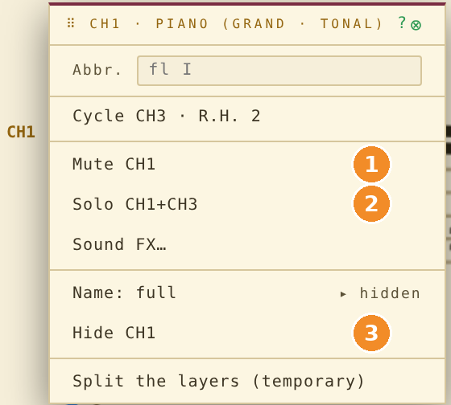
Si el pentagrama lleva dos canales a la vez (por ejemplo dos voces), Solo deja sonar los dos: por eso el menú puede decir «Solo CH1+CH3».If the staff carries two channels at once (for example two voices), Solo lets both play: that is why the menu can say «Solo CH1+CH3».
Cómo sabes que salió bien: al tocar la obra solo oyes ese pentagrama. Al apagar Solo, cada canal vuelve exactamente como estaba, también los que ya tenías callados.How you know it worked: when you play the piece you hear only that staff. When you switch Solo off, every channel goes back exactly as it was, also the ones you had already silenced.
Solo no se guarda con la obra: es una ayuda mientras trabajas.Solo is not saved with the piece: it is a help while you work.
El instrumento de un canal · elegir quién tocaThe instrument of a channel · choosing who plays
Cada pentagrama de la partitura es un canal, y cada canal tiene su instrumento: piano, violín, flauta… El instrumento decide cómo suena ese pentagrama.Each staff in the score is a channel, and each channel has its instrument: piano, violin, flute… The instrument decides how that staff sounds.
Para elegirlo:To choose it:
- Pulsa el botón ⚙ CHANNELS, arriba. Se abre la lista de canales.Press the ⚙ CHANNELS button, at the top. The list of channels opens.
- En la fila del canal, haz clic en el desplegable del instrumento ①. Se abre la paleta con todos los instrumentos, por familias.In the row of the channel, click the instrument drop-down ①. The palette opens with all the instruments, by family.
- Haz clic en el instrumento que quieres ②. Si sabes el nombre, escríbelo en filter y la paleta muestra solo los que coinciden.Click the instrument you want ②. If you know the name, type it in filter and the palette shows only the ones that match.

También puedes elegirlo sin abrir CHANNELS: en la ficha del canal activo, abajo a la derecha, hay el mismo desplegable y abre la misma paleta.You can also choose it without opening CHANNELS: in the card of the active channel, bottom right, there is the same drop-down and it opens the same palette.
Elegir un instrumento hace tres cosas: le pone el nombre al canal, le da su lugar en la orquesta (de qué lado suena y con qué volumen) y puede cambiar la clave. Un contrabajo, por ejemplo, se escribe en clave de fa.Choosing an instrument does three things: it names the channel, gives it its place in the orchestra (which side it sounds from and how loud) and it can change the clef. A double bass, for example, is written in bass clef.
Cómo sabes que salió bien: el nombre del instrumento aparece en la fila del canal y en la ficha de abajo, y al tocar la obra ese pentagrama suena con el instrumento nuevo.How you know it worked: the name of the instrument appears in the row of the channel and in the card at the bottom, and when you play the piece that staff sounds with the new instrument.
Ojo: el desplegable puede decir «Instrument (cosmetic)» al pasar el mouse. Es un aviso viejo: el instrumento sí cambia el sonido. Con List, abajo de la lista, cargas un banco de instrumentos armado en el Register en lugar del de fábrica.Watch out: the drop-down may say «Instrument (cosmetic)» when you hover over it. That is an old notice: the instrument does change the sound. With List, at the bottom of the list, you load a bank of instruments made in the Register instead of the factory one.
La lista de instrumentos habla tu idiomaThe instrument list speaks your language
La lista salía mezclada: unos nombres en inglés y otros en castellano, con los títulos de familia siempre en inglés. Ahora la lista entera —y los once títulos de familia: Maderas, Metales, Percusión, Arpa y teclados, Cuerdas, Voz, Sintetizadores, Otros, Popular · Latino— habla el idioma que elegiste. Vale en los cuatro sitios donde aparece: el campo Instrument de la tarjeta de canal y la ventanita de cada fila del popup CHANNELS en el Score, el selector del Cosmic Keyboard, el del Register Simulator y el de la Console, y también en la paleta en columnas.The list used to come out mixed: some names in English, others in Spanish, with the family titles always in English. Now the whole list —and the eleven family titles: Woodwinds, Brass, Percussion, Harp & Keyboards, Strings, Voice, Synths, Other, Popular · Latino— speaks the language you chose. It applies in the four places it appears: the Instrument field of the channel card and the small selector on each row of the CHANNELS popup in the Score, the Cosmic Keyboard's selector, the Register Simulator's and the Console's, and in the column palette too.
El idioma es el mismo de toda la suite: se elige una sola vez, en la barra de idiomas del Coach (segunda línea, junto a la pestaña COACH), en Preferences → Idioma del Score o con el botón derecho sobre COACH en cualquier app; por defecto, inglés. Hay cinco: ES · EN · FR · NL · DE. Con francés, neerlandés o alemán, los ? abren esta guía en ese idioma; las seis apps (Score, Keyboard, Coach, Console, Player y Register) hablan ese idioma: los tooltips, los mensajes y las ayudas; los nombres de los botones quedan en inglés, como en toda la suite. Si cambias de idioma con las apps abiertas, todas cambian en el acto, sin recargar. Lo que ves cambia; lo que el archivo guarda, no: cada instrumento tiene un nombre interno que no se traduce, así que un .mmf abierto en la computadora de al lado, con el otro idioma elegido, suena exactamente igual. Un detalle: si cambias de idioma con la sesión abierta, la paleta en columnas se ve en el idioma nuevo enseguida y el desplegable pequeño de cada fila se pone al día en el próximo dibujo de esa lista.The language is the one used across the whole suite: you choose it once, in the Coach's language bar (second line, next to the COACH tab), in the Score's Preferences → Language or by right-clicking COACH in any app; English by default. There are five: ES · EN · FR · NL · DE. With French, Dutch or German, the ? buttons open this guide in that language; all six apps (Score, Keyboard, Coach, Console, Player and Register) speak it: tooltips, messages and help; button names stay in English, as across the whole suite. If you switch language with the apps open, they all change at once, without reloading. What you see changes; what the file stores does not: every instrument has an internal name that is never translated, so a .mmf opened on someone else's computer, with the other language chosen, sounds exactly the same. One detail: if you switch language mid-session, the column palette shows the new language at once and the small per-row dropdown catches up the next time that list is drawn.
En la misma pasada se pusieron al día textos y globitos que seguían en castellano con el inglés elegido: «La cuenta del juego», el botón Unfold ⇥, los globitos de los cuadros de compás final y de tamaño en px, el de los chips Ex. y el del alfiler del popup BARLINES; en el Cosmic Keyboard, los dos globitos de las perillas del Pulse; en el Register Simulator, la etiqueta «término» del Lexicon y el globito del 🎓. Lo que sigue en castellano, dicho sin vueltas: el Coach y el Player están escritos enteros en castellano, y eso no es una pasada de traducción sino redactar la versión en inglés. Los rótulos que dicen las dos cosas en una línea («Guardar como… · Save as…», «Todos los atajos · All shortcuts →», «Pulse · metrónomo») quedan como están a propósito.In the same pass, texts and tooltips still in Spanish with English chosen were brought up to date: «The game count», the Unfold ⇥ button, the tooltips on the last-bar and px-size boxes, the one on the Ex. chips and the one on the BARLINES popup pin; in the Cosmic Keyboard, the two Pulse knob tooltips; in the Register Simulator, the Lexicon's «term» label and the 🎓 tooltip. What is still in Spanish, plainly: the Coach and the Player are written entirely in Spanish, and that means writing the English version, not an attribute pass. Labels that say both things on one line («Guardar como… · Save as…», «Todos los atajos · All shortcuts →», «Pulse · metrónomo») are left as they are on purpose.
La percusión es un estado del canal, no sólo el CH10Percussion is a channel state, not only CH10
CH10 nace en percusión por convención, pero cualquier canal se puede declarar percusión desde el popup del grupo. Mientras lo sea: lleva el sello PERC, su clave pasa a la neutra y no se le puede cambiar, su lista de instrumentos se limita a la percusión, y no puede compartir pentagrama con otro canal. Y si no le eliges un parche, el timbre sale por línea: cada línea del pentagrama es un instrumento.CH10 is born percussive by convention, but any channel can be declared percussion from the group popup. While it is: it carries the PERC badge, its clef becomes the neutral one and cannot be changed, its instrument list is limited to percussion, and it cannot share a staff with another channel. And if you choose no patch, the timbre comes out by line: each line of the staff is an instrument.
Lo mismo se mueve en la Console · quién manda quéThe same things move in the Console · who owns what
El mute, el volumen, el panorama y el instrumento son un solo estado compartido: lo cambias en el Score y la Console lo muestra, lo mueve la Console y el Score lo toma. El dueño es la obra —esos cuatro viajan en el archivo— y la mesa es el otro lugar para tocarlos. Dos cosas que no son de la mezcla y conviene no buscar en la Console: la visibilidad (es de la hoja, no del sonido) y el solo, que no se guarda. El reverb, el tono y el balance maestros son del Keyboard y son de la sesión: tampoco quedan en la obra.Mute, volume, panorama and instrument are one shared state: change it in the Score and the Console shows it, move it on the Console and the Score takes it. The owner is the piece —those four travel in the file— and the desk is the other place to touch them. Two things that are not mix and are worth not looking for on the Console: visibility (it belongs to the sheet, not to sound) and solo, which is not saved. Master reverb, tone and balance belong to the Keyboard and to the session: they do not stay in the piece either.
🎤 MIC y ⏺ REC · grabarte encima del acompañamiento🎤 MIC and ⏺ REC · recording yourself over the accompaniment
La Console tiene un canal más, 🎤 MIC, entre los canales y el MASTER. El micrófono vive en el Keyboard: la primera vez que lo enciendes con ON, es la ventana del Keyboard la que pide el permiso, y hay que permitir. El micrófono entra en crudo —sin cancelación de eco ni control automático de volumen—, así que el fader y su medidor mandan: tu nota más fuerte cerca del rojo, sin llegar. 🎧 te deja escucharte mientras tocas; úsalo siempre con auriculares, o el micrófono se oye a sí mismo. Tu sonido llega al micrófono unas milésimas tarde: CAL lo mide una vez —el Keyboard toca un clic por los parlantes y el micrófono lo oye— y ese retraso se corrige solo al guardar.The Console has one more channel, 🎤 MIC, between the channels and the MASTER. The microphone lives in the Keyboard: the first time you switch it on with ON, it is the Keyboard window that asks for permission, and you have to allow it. The microphone comes in raw —no echo cancellation, no automatic gain—, so the fader and its meter are in charge: your loudest note close to red, without reaching it. 🎧 lets you hear yourself while you play; always use it with headphones, or the microphone hears itself. Your sound reaches the microphone a few milliseconds late: CAL measures it once —the Keyboard plays a click through the speakers and the microphone hears it— and that delay is corrected by itself when saving.
La tira del micrófono es un canal de mezcla, útil para un cantante o un instrumentista. Low cut quita lo que está por debajo de 90 Hz: el retumbe de un micrófono cerca del instrumento. Low y High suben o bajan graves y agudos hasta 12 dB (doble clic = plano). Rev y Echo ponen tu sonido en la misma sala que el acompañamiento: la reverb y el eco son los del master. Todo eso va a la grabación y a lo que oyes con 🎧, nunca al master, y la Console lo recuerda para la próxima vez. 🎧 pregunta primero si tienes los auriculares puestos y lo comprueba con un «tic» suave: si el micrófono lo oye, el sonido sale por los parlantes y el 🎧 no se enciende («No headphones detected»). Si igual aparece la realimentación —un zumbido que crece solo—, el Keyboard apaga el 🎧 y la Console lo avisa. El idioma se elige en el Coach o con el botón derecho sobre el 🎓.The microphone strip is a mixing channel, useful for a singer or an instrumentalist. Low cut removes everything below 90 Hz: the boom of a microphone close to the instrument. Low and High raise or lower lows and highs by up to 12 dB (double-click = flat). Rev and Echo put your sound in the same room as the accompaniment: the reverb and the echo are the master's. All of it goes into the recording and into what you hear with 🎧, never into the master, and the Console remembers it for next time. 🎧 first asks whether your headphones are on and checks it with a soft «tick»: if the microphone hears it, the sound is coming out of the speakers and 🎧 stays off («No headphones detected»). If feedback appears anyway —a hum that keeps growing—, the Keyboard switches 🎧 off and the Console tells you. The language is chosen in the Coach or by right-clicking the 🎓.
⏺ REC, junto a ⏹ en el transporte, arranca con una cuenta 3 · 2 · 1 —el logo gira— y después pone en marcha a la vez la obra y la grabación. ⏹ (o REC otra vez) termina, y el Keyboard descarga un solo WAV con el acompañamiento y tu micrófono ya alineados. El orden que funciona: M en el canal de la melodía, el sonido del piano arreglado en el Keyboard (VOL, REV), el MIC ajustado y calibrado, y recién entonces REC. Si puedes, micrófono cerca del instrumento y lejos de los parlantes; mejor todavía, auriculares.⏺ REC, next to ⏹ in the transport, starts with a 3 · 2 · 1 countdown —the logo spins— and then sets the piece and the recording going together. ⏹ (or REC again) ends it, and the Keyboard downloads a single WAV with the accompaniment and your microphone already aligned. The order that works: M on the melody channel, the piano sound set in the Keyboard (VOL, REV), the MIC set and calibrated, and only then REC. If you can, microphone close to the instrument and away from the speakers; better still, headphones.
SELECT — marcar un tramo, o un puñado de notas.SELECT — marking a span, or a handful of notes.
Seleccionar · entrar y salir del modo SELECTSelecting · going into and out of SELECT mode
Para trabajar con varias notas a la vez (moverlas, copiarlas, cambiarles algo) primero hay que seleccionarlas. Eso se hace en el modo SELECT.To work with several notes at once (move them, copy them, change something in them) you first have to select them. That is done in SELECT mode.
Para entrar: pulsa ◻ SELECT ①, en la segunda fila de botones. El botón se pone oscuro (◼) mientras el modo está encendido. Atajo: la tecla `, la que está debajo de Esc.To go in: press ◻ SELECT ①, in the second row of buttons. The button turns dark (◼) while the mode is on. Shortcut: the ` key, the one under Esc.

Para salir: pulsa Esc (sale y borra la selección), pulsa otra vez SELECT, o haz clic fuera de los pentagramas.To go out: press Esc (it goes out and clears the selection), press SELECT again, or click outside the staves.
Cómo se marca el tramo, en Seleccionar un tramo.How you mark the span, in Selecting a span.
Cómo sabes que salió bien: el botón dice ◼ SELECT con el fondo oscuro.How you know it worked: the button says ◼ SELECT with a dark background.
El clic derecho sobre el botón SELECT abre un panelito de acciones, pero solo cuando el modo está apagado.Right-clicking the SELECT button opens a small panel of actions, but only when the mode is off.
Seleccionar un tramo · y moverloSelecting a span · and moving it
Una selección es un tramo de la partitura marcado con un recuadro. Todo lo que hagas después (mover, copiar, cambiar la dinámica…) le pasa a lo que está adentro.A selection is a span of the score marked with a box. Everything you do next (move, copy, change the dynamics…) happens to what is inside it.
Para seleccionar:To select:
- Entra en el modo SELECT ①.Go into SELECT mode ①.
- Elige CH o ALL ②: con CH seleccionas en un solo pentagrama; con ALL, en todos a la vez.Choose CH or ALL ②: with CH you select on one staff only; with ALL, on all of them at once.
- Aprieta el botón del mouse sobre el pentagrama, donde empieza el tramo, y arrastra hasta donde termina. Mientras arrastras, el recuadro es dorado y punteado.Press the mouse button on the staff, where the span begins, and drag to where it ends. While you drag, the box is golden and dotted.
- Suelta el botón. El recuadro se cierra y se pone verde ③.Let go of the button. The box closes and turns green ③.
La imagen está en el modo SELECT, justo arriba.The picture is in SELECT mode, just above.
- Para agrandarla o achicarla: Shift + clic corre el borde, sin empezar de nuevo.To make it bigger or smaller: Shift + click moves the edge, without starting again.
- Para moverla: pon el mouse sobre el recuadro cerrado (el cursor se vuelve una mano) y arrástralo. La música se mueve con él, paso a paso según SUBDIV.To move it: put the mouse over the closed box (the pointer turns into a hand) and drag it. The music moves with it, step by step according to SUBDIV.
Cómo sabes que salió bien: ves el recuadro verde alrededor de las notas que querías.How you know it worked: you see the green box around the notes you wanted.
Ojo: si haces clic sobre el número de un compás en lugar del pentagrama, se abre la información de ese compás. Empieza el arrastre dentro de las líneas.Watch out: if you click on the number of a bar instead of the staff, the information about that bar opens. Start the drag inside the lines.
El compás de un doble clic, y cómo se extiendeA bar in one double-click, and how to extend it
Doble clic sobre el pentagrama, donde no hay una cabeza, y queda seleccionado ese compás entero, en ese canal. No hace falta encender nada antes: el doble clic entra al modo SELECT solo y deja la selección cerrada, lista para el popup de acciones o para el Note spacing. Como no hay arrastre, no hay manera de empujar una nota sin querer — que es lo que pasaba cuando había que arrastrar por encima de las cabezas para marcar un compás.
Desde ahí, Shift + clic en otro compás del mismo canal estira la selección hasta ahí. Puedes encadenarlos: doble clic en el 3, Shift + clic en el 6, y tienes del 3 al 6 sin haber arrastrado una sola vez.
Tres cosas que conviene tener claras, porque son gestos distintos sobre el mismo pentagrama. El doble clic sobre una cabeza no selecciona el compás: ése es el gesto del acorde, y agarra las notas de ese ataque. Un clic dentro de una selección ya cerrada tampoco extiende ni recorta: la agarra para moverla, y el cursor se vuelve una mano — así que para estirarla, el Shift + clic va afuera del tramo que ya tienes. Y el arrastre sólo selecciona con el modo SELECT encendido; sin él, arrastrar sobre el pentagrama es editar, que es exactamente por qué se movían notas al intentar seleccionar.Double-click on the staff, where there is no notehead, and that whole bar is selected, in that channel. Nothing needs switching on first: the double-click enters SELECT mode by itself and leaves the selection closed, ready for the actions popup or for Note spacing. Since there is no dragging, there is no way to nudge a note by accident — which is what happened when you had to drag across the noteheads to mark a bar.
From there, Shift + click on another bar of the same channel stretches the selection up to it. You can chain them: double-click on 3, Shift + click on 6, and you have 3 to 6 without a single drag.
Three things worth keeping straight, because they are different gestures on the same staff. A double-click on a notehead does not select the bar: that is the chord gesture, and it grabs the notes of that onset. A click inside an already closed selection does not extend or trim it either: it grabs it to move it, and the cursor becomes a hand — so to stretch it, the Shift + click goes outside the span you already have. And dragging only selects with SELECT mode on; without it, dragging over the staff is editing, which is exactly why notes moved when you were trying to select.
Todo el canal, o toda la obra, sin arrastrarA whole channel, or the whole piece, without dragging
Para un canal entero o la obra entera no hace falta arrastrar de punta a punta: el panelito del clic derecho tiene Select all in channel y Select all channels, que arman la selección completa de una. De ahí salen copiar, transponer, guardar el tramo como archivo o borrarlo.For a whole channel or the whole piece there is no need to drag end to end: the right-click panel has Select all in channel and Select all channels, which build the complete selection at once. Copying, transposing, saving the span as a file or deleting it all start there.
Alt · la otra selección, la de notas sueltasAlt · the other selection, the one of loose notes
Hay una segunda selección, que no es un tramo sino un puñado de notas, y vive en la tecla Alt. Alt + clic sobre una cabeza la agrega o la saca. Alt + arrastre en un hueco dibuja un rectángulo y se lleva todo lo que queda adentro, cruzando canales y con los silencios incluidos. Y el doble clic sobre una nota toma el acorde entero. Esc los suelta. (Alt con el botón derecho no hace nada: el gesto es con el izquierdo.)There is a second selection, not a span but a handful of notes, and it lives on the Alt key. Alt + click on a notehead adds or removes it. Alt + drag in an empty spot draws a rectangle and takes everything inside it, across channels and with rests included. And a double click on a note takes the whole chord. Esc lets them go. (Alt with the right button does nothing: the gesture is with the left.)
La partitura — la rueda, la mano, el numpad y los arrastres.The score — the wheel, the hand, the numpad and the drags.
El cursor · dónde va a caer lo que escribasThe cursor · where what you write will land
El cursor es la rayita vertical de color sobre el pentagrama ①: verde en el tema claro, amarilla en el oscuro. Marca dónde va a caer la próxima nota que escribas, y dónde ponen los popups lo que insertas: un tempo, una clave, un texto.The cursor is the small coloured vertical line on the staff ①: green in the light theme, yellow in the dark one. It marks where the next note you write will land, and where the popups put what you insert: a tempo, a clef, a text.

Para moverlo:To move it:
- Haz clic en el pentagrama, donde quieras. Si haces clic sobre una nota, la nota queda seleccionada y el cursor se pone en ella.Click on the staff, wherever you want. If you click on a note, the note is selected and the cursor goes to it.
- Las flechas ← y → lo corren un paso. El tamaño del paso lo decide SUBDIV: en 4/4 con SUBDIV 2, cada paso es una corchea.The ← and → arrows move it one step. SUBDIV decides how big the step is: in 4/4 with SUBDIV 2, each step is an eighth note.
- Las flechas ↑ y ↓ lo pasan al instrumento de arriba o de abajo, cuando no hay una nota seleccionada.The ↑ and ↓ arrows move it to the instrument above or below, when no note is selected.
- Cuando escribes una nota, el cursor avanza solo lo que dura esa nota.When you write a note, the cursor moves forward by itself as long as that note lasts.
CH o ALL ②: con CH la rayita está en un solo instrumento; con ALL cruza todos los pentagramas.CH or ALL ②: with CH the line is on one instrument only; with ALL it runs across all the staves.
Cómo sabes dónde está: además de verlo, abajo en la barra del transporte CURSOR ③ dice en qué instrumento estás.How you know where it is: besides seeing it, CURSOR ③ in the transport bar at the bottom says which instrument you are on.
No es lo mismo que la selección: el cursor es un punto. La selección es un tramo marcado con un recuadro, para mover, copiar o cambiar varias notas a la vez.It is not the same as the selection: the cursor is a point. The selection is a span marked with a box, to move, copy or change several notes at once.
La rueda · tres ejes en la misma ruedaThe wheel · three axes on one wheel
Sobre la partitura, la rueda sola desplaza en horizontal — no es un error: en una partitura el eje principal es el tiempo, y va para el costado. Shift + rueda es el vertical, para recorrer la orquesta, y Ctrl + rueda es el zoom, anclado donde tienes el puntero. En el Panel la rueda scrollea como en cualquier página y sólo Ctrl hace zoom —el suyo, que es independiente—; y en la hoja la rueda sola baja, Shift va al costado y Ctrl acerca la hoja.Over the score, the plain wheel scrolls horizontally — not a mistake: in a score the main axis is time, and it runs sideways. Shift + wheel is the vertical one, for travelling down the orchestra, and Ctrl + wheel is the zoom, anchored where the pointer is. In the Panel the wheel scrolls as on any page and only Ctrl zooms —its own, independent zoom—; and on the sheet the plain wheel goes down, Shift goes sideways and Ctrl brings the sheet closer.
La mano · y el arrastre que separa los pentagramasThe hand · and the drag that spaces the staves
En un hueco del canvas, arrastra con el botón izquierdo: después de unos pocos píxeles aparece la mano y la partitura corre con ella. Es horizontal; el vertical del canvas es Shift + rueda. En el Panel, en cambio, la mano panea en los dos ejes. Y hay un arrastre que sorprende: sobre un pentagrama, el arrastre vertical no panea — cambia la distancia entre pentagramas de ese canal, y los de abajo lo siguen sin pisarse. Es el aire de la página, y se afina así, a ojo.In an empty spot of the canvas, drag with the left button: after a few pixels the hand appears and the score runs with it. It is horizontal; the canvas's vertical is Shift + wheel. In the Panel, by contrast, the hand pans on both axes. And there is one drag that surprises: on a staff, dragging vertically does not pan — it changes that channel's distance to the next staff, and the ones below follow without colliding. That is the air of the page, and this is how it is tuned, by eye.
El numpad · la figura en una tecla, y la regla del silencioThe numpad · the note value on one key, and the rest rule
El numpad es el bloque de teclas con números que está a la derecha del teclado del computador. (Algunos portátiles pequeños no lo tienen.) En el Score cada una de esas teclas es una figura: eliges la duración sin soltar el teclado.The numpad is the block of number keys on the right of the computer keyboard. (Some small laptops do not have one.) In the Score each of those keys is a note value: you pick the duration without leaving the keyboard.
Para escribir con el numpad:To write with the numpad:
- Pulsa la tecla de la figura, por ejemplo 5 para la negra.Press the key of the note value, for example 5 for the quarter note.
- Escribe las notas: todas salen con esa figura.Write the notes: they all come out with that value.
- Para cambiar de figura, pulsa otra tecla.To change the value, press another key.
Para escribir silencios: pulsa otra vez la misma tecla. Desde ahí, cada nota que escribas sale como silencio de esa figura. Pulsa otra figura y vuelves a las notas.To write rests: press the same key again. From then on, each note you write comes out as a rest of that value. Press another value and you are back to notes.
Para un solo silencio hay un camino más corto: pulsa 9. Pone de una vez, donde está el cursor, un silencio de la figura que tienes puesta, y sigues escribiendo notas.For a single rest there is a shorter way: press 9. It puts, at once and where the cursor is, a rest of the value you have set, and you go on writing notes.
Cómo sabes que salió bien: cada vez que pulsas una tecla aparece abajo un cartelito con la figura, por ejemplo «♩ negra» o «silencio de negra». Si tienes dudas, pulsa 0: el cartelito te dice qué tienes puesto, sin cambiar nada.How you know it worked: every time you press a key, a small card shows the value at the bottom, for example “♩ quarter” or “rest quarter”. If you are not sure, press 0: the card tells you what you have set, without changing anything.
- Funciona con el NumLock encendido o apagado.It works with NumLock on or off.
- Mientras escribes en una casilla de texto, el numpad escribe números, como siempre.While you type in a text box, the numpad types numbers, as usual.
La banda · arrastrar una figura a la hojaThe band · dragging a value onto the sheet
Con el teclado chico cerrado, BAND ♪ abre la tira de lo que más se usa. Su gesto propio es el arrastre: agarras una figura y la sueltas en el pentagrama. El fantasma que te sigue no se pega a una reja ciega, se pega a los lugares musicales del compás: el comienzo, los ataques que ya hay y el final de cada nota, que es donde empieza un hueco. Y al soltar hace lo razonable: si cae sobre una nota y la figura es más corta, esa nota toma la figura nueva sin cambiar de altura y lo que queda se rellena con silencios; si cae después del final del contenido, el hueco se completa con silencios para que el compás sume; y si no entra, no inserta nada y te lo dice. La nota recién puesta queda seleccionada, para seguir corrigiéndola con la misma banda.With the little keyboard closed, BAND ♪ opens the strip of what you use most. Its own gesture is the drag: grab a value and drop it on the staff. The ghost that follows you does not stick to a blind grid, it sticks to the musical places of the bar: the beginning, the attacks already there and the end of each note, which is where a gap starts. And on release it does the reasonable thing: if it lands on a note and the value is shorter, that note takes the new value without changing pitch and what is left is filled with rests; if it lands past the end of the content, the gap is completed with rests so the bar adds up; and if it does not fit, nothing is inserted and it tells you. The note just placed stays selected, so you can go on fixing it with the same band.
Mover una nota · tres arrastres distintosMoving a note · three different drags
Arrastre solo: es rítmico y horizontal — la nota cambia de lugar en el tiempo y al soltar se acomoda a la subdivisión más cercana (y a la ternaria si es de tresillo), para que no se abra una columna torcida en la hoja. Shift + arrastre es el fino: corre la nota en píxeles, sólo tinta, sin tocar el tiempo — es el que usas cuando el dibujo choca y la música está bien. Ctrl + arrastre es la mudanza de canal: la nota se suelta en otro pentagrama y conserva intacto su lugar —compás, tiempo y posición— así que cae en el mismo instante, en otra voz; el fantasma te dice a qué canal va. Dos cortesías: el grupo barrado no se rompe al mover una nota adentro, y las articulaciones y la agógica de esa nota se van con ella. Y las notitas se arrastran finas sin apretar nada, porque en una grilla proporcional no habría cómo afinarlas.Plain drag: rhythmic and horizontal — the note changes place in time and on release settles on the nearest subdivision (the ternary one if it is a tuplet note), so no crooked column opens on the sheet. Shift + drag is the fine one: it nudges the note in pixels, ink only, without touching time — the one you use when the drawing collides and the music is right. Ctrl + drag is the channel move: the note is dropped on another staff and keeps its place intact —bar, beat and position— so it lands on the same instant, in another voice; the ghost tells you which channel it is going to. Two courtesies: the beamed group is not broken by moving a note inside it, and that note's articulations and agogics travel with it. And grace notes drag fine without holding anything, because on a proportional grid there would be no way to place them.
Las dos tiras de abajo. The two strips at the bottom.
Debajo de la partitura hay dos tiras, y nunca las dos a la vez: el teclado, para tocar y escribir, y el Panel, para mirar un segundo grupo de canales mientras trabajas. Cada una se abre con su botón —🎹 KEYBOARD y ▭ PANEL— y abrir una esconde la otra.Under the score there are two strips, and never both at once: the keyboard, for playing and writing, and the Panel, for watching a second set of channels while you work. Each opens with its own button —🎹 KEYBOARD and ▭ PANEL— and opening one hides the other.
Las tres zonas del tecladoThe keyboard’s three zones
El teclado del Score es una tira de teclas de piano en la parte de abajo de la pantalla. Con él escribes las notas en la partitura, o las pruebas antes de escribirlas.The Score’s keyboard is a strip of piano keys at the bottom of the screen. With it you write the notes into the score, or try them out before writing them.
Para abrirlo: pulsa 🎹 KEYBOARD ① en la barra del Score. El mismo botón lo cierra.To open it: press 🎹 KEYBOARD ① on the Score bar. The same button closes it.

- A la izquierda ② ③: cómo tocas. WRITE escribe y LISTEN solo suena; debajo está la afinación (SYSTEM, MODE y SENS).On the left ② ③: how you play. WRITE writes and LISTEN only sounds; below is the tuning (SYSTEM, MODE and SENS).
- En el centro ⑤: las teclas, cada una con el nombre de su nota. Las flechas ④ de los costados mueven el teclado una octava.In the centre ⑤: the keys, each with the name of its note. The arrows ④ at the sides move the keyboard by an octave.
- A la derecha ⑥: la ficha del canal —el instrumento— en el que estás escribiendo.On the right ⑥: the card of the channel —the instrument— you are writing in.
Dos cosas que conviene saber. Con el teclado abierto, la banda flotante no está disponible, porque hace el mismo trabajo. Y con el teclado cerrado, las letras de la computadora no escriben: el Score pasa solo a LISTEN y las letras vuelven a ser atajos.Two things worth knowing. With the keyboard open, the floating band is not available, because it does the same job. And with the keyboard closed, the computer letters do not write: the Score switches to LISTEN by itself and the letters go back to being shortcuts.
Si una nota se queda sonando, pulsa la tecla Esc: corta todo el sonido. (Con la obra sonando, usa ■ stop.)If a note is left sounding, press the Esc key: it cuts all the sound. (With the piece playing, use ■ stop.)
Cómo sabes que salió bien: la tira de teclas aparece debajo de la partitura y el botón KEYBOARD queda encendido.How you know it worked: the strip of keys appears below the score and the KEYBOARD button stays lit.
WRITE y LISTEN · escribir, o solo probarWRITE and LISTEN · writing, or just trying
Los dos botones de la izquierda deciden qué pasa cuando tocas una tecla. En WRITE la nota se escribe en la partitura, donde está el cursor. En LISTEN la nota solo suena: no se escribe nada.The two buttons on the left decide what happens when you play a key. In WRITE the note is written into the score, where the cursor is. In LISTEN the note only sounds: nothing is written.
Para usarlo: pulsa ◉ LISTEN ①. Para volver a escribir, pulsa WRITE.To use it: press ◉ LISTEN ①. To go back to writing, press WRITE.

- WRITE es el modo de trabajo: escriben las teclas de la pantalla, con el mouse, y también las letras de la computadora.WRITE is the working mode: the on-screen keys write, with the mouse, and so do the computer letters.
- LISTEN sirve para probar un acorde o buscar una nota sin tocar la partitura. Suenan el mouse y las letras, y nada se escribe.LISTEN is for trying a chord or looking for a note without touching the score. The mouse and the letters sound, and nothing is written.
- En LISTEN el teclado muestra las octavas que la obra usa. El botón 8VA ② elige cuántas se ven: Auto, 4, 5, 6, 7 o 9.In LISTEN the keyboard shows the octaves the piece uses. The 8VA button ② chooses how many you see: Auto, 4, 5, 6, 7 or 9.
- La barra OCTAVE SHIFT ③, debajo de las teclas, mueve el teclado hacia los graves o hacia los agudos.The OCTAVE SHIFT bar ③, below the keys, moves the keyboard towards the low or the high notes.
Al volver a WRITE, el teclado empieza otra vez de C3 a C6.When you go back to WRITE, the keyboard starts again from C3 to C6.
Cómo sabes que salió bien: en LISTEN tocas una tecla, suena, y en la partitura no aparece ninguna nota.How you know it worked: in LISTEN you play a key, it sounds, and no note appears in the score.
Escribir con las teclas de la computadoraWriting with the computer keys
Para escribir no hace falta el mouse. Con el teclado del Score abierto, tres filas de letras de la computadora son notas: cada letra suena y, en WRITE, escribe su nota donde está el cursor.You do not need the mouse to write. With the Score’s keyboard open, three rows of computer letters are notes: each letter sounds and, in WRITE, writes its note where the cursor is.
Para usarlo: abre el teclado con 🎹 KEYBOARD, deja el botón en ✏ WRITE (así abre el Score) y pulsa una letra.To use it: open the keyboard with 🎹 KEYBOARD, leave the button on ✏ WRITE (that is how the Score opens) and press a letter.
- La fila de abajo, Z X C V B N M, es la escala. La Z es siempre la tónica, el primer grado.The bottom row, Z X C V B N M, is the scale. Z is always the tonic, the first degree.
- La fila del medio (A S D F…) suena una octava más arriba, y la de arriba (Q W E R…), otra más.The middle row (A S D F…) sounds an octave higher, and the top row (Q W E R…), one more.
- Las letras siguen la armadura de la obra. En Do mayor, Z X C dan Do, Re, Mi. En Sol mayor dan Sol, La, Si, y la M da el Fa sostenido sin que hagas nada.The letters follow the key signature of the piece. In C major, Z X C give C, D, E. In G major they give G, A, B, and M gives the F sharp without you doing anything.
- Si pulsas dos o tres letras al mismo tiempo, se escriben como acorde.If you press two or three letters at the same time, they are written as a chord.
- La figura se elige en el numpad: 5 es la negra. El 9 pone un silencio.You choose the note value on the numpad: 5 is the quarter note. 9 puts a rest.
- Ctrl+Z borra la última nota, como siempre.Ctrl+Z removes the last note, as always.
La regla es una sola. Con el teclado abierto, las letras son notas. Con el teclado cerrado, las letras son los atajos del Score (por ejemplo, la Z abre el Panel). Y si estás escribiendo en una casilla —el título, la letra de una canción—, las letras van a la casilla y no a la partitura.There is a single rule. With the keyboard open, the letters are notes. With the keyboard closed, the letters are the Score’s shortcuts (for example, Z opens the Panel). And if you are typing in a box —the title, the words of a song—, the letters go into the box and not into the score.
Cómo sabes que salió bien: pulsas la Z, suena la tónica, la nota aparece en la partitura y el cursor avanza solo.How you know it worked: you press Z, the tonic sounds, the note appears in the score and the cursor moves on by itself.
TODAL · tocar por gradosTODAL · playing by degrees
TODAL es una manera de tocar por grados: en lugar de buscar cada nota, tocas el primer grado, el segundo, el tercero… de la tonalidad de la obra. La misma tecla da siempre la nota correcta de esa tonalidad, así que puedes escribir bien en cualquier tonalidad sin saber tocar piano.TODAL is a way of playing by degrees: instead of looking for each note, you play the first degree, the second, the third… of the key of the piece. The same key always gives the right note of that key, so you can write correctly in any key without knowing how to play the piano.
Para abrirlo: pulsa el botón WRITE ① varias veces. Cada clic cambia de modo: ✏ WRITE → TODAL PLAY → TODAL WRITE → ✏ WRITE. El botón dice siempre en cuál estás.To open it: press the WRITE button ① several times. Each click changes mode: ✏ WRITE → TODAL PLAY → TODAL WRITE → ✏ WRITE. The button always says which one you are in.

- Las teclas ② llevan el grado en números romanos, de I a VII, y el número de la octava: I 3, II 3, III 3…The keys ② carry the degree in Roman numerals, from I to VII, and the octave number: I 3, II 3, III 3…
- TODAL PLAY solo suena. TODAL WRITE escribe. En los dos tocas con el mouse o con las letras de la computadora.TODAL PLAY only sounds. TODAL WRITE writes. In both you play with the mouse or with the computer letters.
- La tecla CapsLock de la computadora enciende y apaga TODAL; entra en TODAL PLAY.The CapsLock key of the computer turns TODAL on and off; it comes in as TODAL PLAY.
- Si el Cosmic Keyboard cambia de tónica, el Score entra solo en TODAL PLAY y espera: no escribe hasta que pases a WRITE.If the Cosmic Keyboard changes tonic, the Score goes into TODAL PLAY by itself and waits: it does not write until you switch to WRITE.
Cómo sabes que salió bien: el botón dice TODAL WRITE y cada tecla blanca muestra un número romano. Si cambias de tonalidad, los grados siguen en el mismo lugar.How you know it worked: the button says TODAL WRITE and each white key shows a Roman numeral. If you change key, the degrees stay in the same place.
Los cuatro modos, de un vistazoThe four modes, at a glance
Los botones WRITE y LISTEN dan cuatro modos. En los cuatro tocas con el mouse o con las letras de la computadora. Solo cambian dos cosas: si la nota se escribe, y qué se lee sobre las teclas.The WRITE and LISTEN buttons give four modes. In all four you play with the mouse or with the computer letters. Only two things change: whether the note is written, and what you read on the keys.
| El botón diceThe button says | El mouse y las letrasThe mouse and the letters | Sobre las teclas se leeOn the keys you read |
|---|---|---|
| ✏ WRITE | suenan y escribensound and write | el nombre de la nota: C3, D3…the name of the note: C3, D3… |
| ◉ LISTEN | solo suenanonly sound | el nombre de la notathe name of the note |
| TODAL PLAY | solo suenanonly sound | el grado: I 3, II 3…the degree: I 3, II 3… |
| TODAL WRITE | suenan y escribensound and write | el gradothe degree |
El Cosmic Keyboard se toca igual: las mismas tres filas de letras y el mismo horizonte. La única diferencia es dónde eliges la tonalidad. En el Cosmic Keyboard, con sus botones KEY y ALTERATION. En el Score no hay esos botones: la tonalidad es la armadura de la obra.The Cosmic Keyboard is played the same way: the same three rows of letters and the same horizon. The only difference is where you choose the key. In the Cosmic Keyboard, with its KEY and ALTERATION buttons. The Score has no such buttons: the key is the key signature of the piece.
Cómo sabes en cuál estás: mira el botón. Dice ✏ WRITE, TODAL PLAY o TODAL WRITE; si el que está encendido es ◉ LISTEN, estás en LISTEN.How you know which one you are in: look at the button. It says ✏ WRITE, TODAL PLAY or TODAL WRITE; if the one that is lit is ◉ LISTEN, you are in LISTEN.
SYSTEM · Axiom o TonalSYSTEM · Axiom or Tonal
SYSTEM elige cómo se afinan las notas. Son los dos botones marcados con ③ en la imagen de TODAL.SYSTEM chooses how the notes are tuned. They are the two buttons marked ③ in the TODAL picture.
- Axiom: la afinación pitagórica pura. Cada nota tiene su lugar fijo, sin importar la tonalidad.Axiom: pure Pythagorean tuning. Each note has its fixed place, whatever the key.
- Tonal: cada nota se afina según el papel que cumple en la tonalidad. Es el sistema que hace hablar a la armonía.Tonal: each note is tuned according to the role it plays in the key. It is the system that makes the harmony speak.
Con Axiom, MODE y SENS quedan apagados, porque solo tienen sentido cuando hay una tonalidad. Al pasar a Tonal se encienden, y SENS empieza en +1.With Axiom, MODE and SENS stay off, because they only make sense when there is a key. When you switch to Tonal they come on, and SENS starts at +1.
Cómo sabes que salió bien: al pulsar Tonal, los botones MAJ, MIN y los tres de SENS dejan de verse grises.How you know it worked: when you press Tonal, the MAJ and MIN buttons and the three SENS buttons are no longer greyed out.
MODE y SENS · mayor o menor, y cuánto sube la sensibleMODE and SENS · major or minor, and how far the leading note rises
Estos botones solo funcionan con SYSTEM en Tonal. MODE (el ④ de la imagen de TODAL) elige si la tonalidad es mayor o menor. SENS ⑤ elige cuánto se sube la sensible: el séptimo grado, la nota que pide llegar a la tónica.These buttons only work with SYSTEM on Tonal. MODE (④ in the TODAL picture) chooses whether the key is major or minor. SENS ⑤ chooses how far the leading note is raised: the seventh degree, the note that asks to reach the tonic.
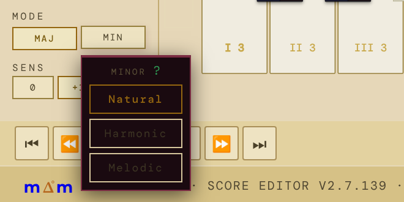
- MAJ: modo mayor. MIN: modo menor; al pulsarlo se abre una ventanita para elegir la escala menor: Natural, Harmonic (armónica) o Melodic (melódica).MAJ: major mode. MIN: minor mode; pressing it opens a little window to choose the minor scale: Natural, Harmonic or Melodic.
- SENS 0: la sensible no se sube.SENS 0: the leading note is not raised.
- SENS +1: la sensible sube un poco. Es lo normal, y así empieza.SENS +1: the leading note rises a little. This is the usual setting, and the one it starts with.
- SENS +2: sube todavía más, también en las notas cromáticas. El efecto es más marcado.SENS +2: it rises even more, on the chromatic notes too. The effect is more marked.
El sonido lo produce el Cosmic Keyboard: el Score le envía estos ajustes y él los toca.The sound is produced by the Cosmic Keyboard: the Score sends it these settings and it plays them.
Cómo sabes que salió bien: el botón que elegiste queda encendido.How you know it worked: the button you chose stays lit.
La ventana de octavas · llegar a notas más graves o más agudasThe octave window · reaching lower or higher notes
El teclado muestra solo una parte de todas las notas: al empezar, de C3 a C6. Para llegar a notas más graves o más agudas se mueve esa «ventana».The keyboard shows only part of all the notes: at the start, from C3 to C6. To reach lower or higher notes you move that “window”.
- Las flechas ◀ ▶ de los costados (el ④ de la primera imagen) mueven la ventana una octava hacia los graves o hacia los agudos.The ◀ ▶ arrows at the sides (④ in the first picture) move the window one octave towards the low or the high notes.
- Los nombres de la primera y de la última tecla dicen dónde quedó: por ejemplo, C3 y C6.The names of the first and the last key tell you where it ended up: for example, C3 and C6.
- En LISTEN, el botón 8VA fija 4, 5, 6, 7 o 9 octavas, o vuelve a Auto: las octavas que la obra usa de verdad.In LISTEN, the 8VA button sets 4, 5, 6, 7 or 9 octaves, or goes back to Auto: the octaves the piece really uses.
Cómo sabes que salió bien: pulsas ▶ y la primera tecla pasa de C3 a C4.How you know it worked: you press ▶ and the first key changes from C3 to C4.
La ficha del canal activo · en qué instrumento escribesThe active-channel card · which instrument you are writing for
Cada instrumento de la obra tiene su canal. La zona derecha del teclado muestra el canal en el que estás escribiendo, y deja pasar a otro con un clic.Each instrument of the piece has its channel. The right-hand zone of the keyboard shows the channel you are writing in, and lets you move to another with one click.

- La fila de colores ①: todos los canales, cada uno con su color. Un clic cambia de canal.The row of colours ①: all the channels, each in its colour. One click changes channel.
- CH ② es el número del canal, y debajo está su nombre ⑥.CH ② is the channel number, and below it is its name ⑥.
- El ojo 👁 ③ muestra u oculta el pentagrama de ese canal.The eye 👁 ③ shows or hides the staff of that channel.
- FX ④ abre el Sound FX del canal: reverb, eco y otros efectos.FX ④ opens the channel’s Sound FX: reverb, echo and other effects.
- ◉ ⑤ silencia el canal, o le devuelve el sonido.◉ ⑤ mutes the channel, or gives it its sound back.
- El menú ⑦ muestra el instrumento. Cómo elegir quién toca en cada canal está en El instrumento de un canal.The menu ⑦ shows the instrument. How to choose who plays in each channel is in The instrument of a channel.
- VOL ⑧: arrastra la perilla hacia arriba o hacia abajo; el número dice el porcentaje.VOL ⑧: drag the knob up or down; the number shows the percentage.
- Los números del 1 al 32 ⑨: un clic y pasas a escribir en ese canal, sin abrir CHANNELS.The numbers 1 to 32 ⑨: one click and you are writing in that channel, without opening CHANNELS.
Cómo sabes que salió bien: el número de CH cambia y la franja de color de la ficha toma el color del canal nuevo.How you know it worked: the CH number changes and the colour stripe of the card takes the colour of the new channel.
El Panel · una segunda vista de la partituraThe Panel · a second view of the score
El Panel es una segunda vista de la partitura, debajo de la primera. Sirve para mirar dos cosas a la vez: por ejemplo, el solista arriba y el bajo abajo, o la voz que copias y la voz que escribes.The Panel is a second view of the score, below the first. It is for looking at two things at once: for example, the soloist above and the bass below, or the voice you are copying and the voice you are writing.
Para abrirlo: pulsa ▭ PANEL ① en la barra del Score.To open it: press ▭ PANEL ① on the Score bar.

- El Panel y el teclado no se ven a la vez: al abrir uno se esconde el otro. Con el Panel abierto el Score pasa a LISTEN, para que las teclas de la computadora no escriban sin que lo veas.The Panel and the keyboard are never shown together: opening one hides the other. With the Panel open the Score switches to LISTEN, so that the computer keys do not write without your seeing it.
- Al abrirse muestra el canal donde está el cursor.When it opens it shows the channel where the cursor is.
- La línea ⑦ que lo separa de la partitura se arrastra para hacerlo más alto o más bajo.The line ⑦ that separates it from the score can be dragged to make it taller or shorter.
- La ✕ ⑥ lo esconde.The ✕ ⑥ hides it.
Cómo sabes que salió bien: debajo de la partitura aparece la fila «PANEL VIEW · CHANNELS» y, más abajo, la misma música otra vez.How you know it worked: below the score the “PANEL VIEW · CHANNELS” row appears and, further down, the same music again.
Los botones CH · qué instrumentos se ven en el PanelThe CH buttons · which instruments show in the Panel
En la cabecera del Panel hay un botoncito por cada canal (el ② de la imagen del Panel), con el color de ese canal. Con ellos eliges qué instrumentos se ven en el Panel.In the Panel’s header there is a small button for each channel (② in the Panel picture), in that channel’s colour. With them you choose which instruments show in the Panel.
- Un clic pone el canal en el Panel; otro clic lo quita. Puedes tener varios a la vez.One click puts the channel in the Panel; another click takes it out. You can have several at once.
- Si escribes en un canal que no estaba, el Panel lo agrega solo, para que veas la nota que acabas de poner.If you write in a channel that was not there, the Panel adds it by itself, so that you see the note you have just placed.
Cómo sabes que salió bien: el botoncito queda resaltado y el pentagrama de ese canal aparece en el Panel.How you know it worked: the small button is highlighted and that channel’s staff appears in the Panel.
El zoom y el desplazamiento del PanelThe Panel’s zoom and scrolling
El Panel tiene su propio tamaño, distinto del de la partitura de arriba: puedes tener el Panel grande y la hoja pequeña.The Panel has its own size, separate from that of the score above: you can have the Panel large and the sheet small.
- Ctrl + rueda del ratón, con el puntero sobre el Panel, cambia solo el zoom del Panel. El porcentaje se ve en la cabecera (el ⑤ de la imagen del Panel).Ctrl + wheel, with the pointer over the Panel, changes only the Panel’s zoom. The percentage shows in the header (⑤ in the Panel picture).
- La rueda sola desplaza el Panel.The wheel alone scrolls the Panel.
- La primera vez que se abre toma el zoom de la partitura; después recuerda el suyo.The first time it opens it takes the score’s zoom; after that it remembers its own.
Cómo sabes que salió bien: el porcentaje de la cabecera cambia y la partitura de arriba no se mueve.How you know it worked: the percentage in the header changes and the score above does not move.
🎧 SOLO · oír solo lo que estás mirando🎧 SOLO · hearing only what you are looking at
🎧 SOLO (el ③ de la imagen del Panel) hace que suenen solo los canales que están en el Panel. Los demás se callan mientras está encendido.🎧 SOLO (③ in the Panel picture) makes only the channels in the Panel sound. The others are silent while it is on.
- Lo hace a través de la Console, la mesa de mezcla: pone S (solo) en los canales del Panel y M (mute) en el resto.It does this through the Console, the mixing desk: it puts S (solo) on the Panel’s channels and M (mute) on the rest.
- Al apagarlo, o al cerrar el Panel, todo vuelve a como estaba. Nada de esto se guarda en la obra.When you turn it off, or close the Panel, everything goes back to how it was. None of this is saved in the piece.
- Si cambias los canales del Panel con SOLO encendido, se ajusta solo.If you change the Panel’s channels with SOLO on, it adjusts by itself.
Cómo sabes que salió bien: pulsas play y solo oyes los instrumentos del Panel.How you know it worked: you press play and you hear only the instruments in the Panel.
🖨 PRINT VIEW · la parte de un instrumento🖨 PRINT VIEW · one instrument’s part
🖨 PRINT VIEW (el ④ de la imagen del Panel) muestra los canales del Panel como una hoja lista para imprimir. Es el camino corto para sacar la parte de un instrumento, o de un grupo.🖨 PRINT VIEW (④ in the Panel picture) shows the Panel’s channels as a sheet ready to print. It is the short way to get one instrument’s part, or a group’s.
- Elige con los botones CH los canales que quieres y pulsa PRINT VIEW.Choose the channels you want with the CH buttons and press PRINT VIEW.
- La vista es solo de lectura: ahí no se edita.The view is read-only: you cannot edit there.
- Desde ahí la imprimes en papel o la guardas en PDF.From there you print it on paper or save it as a PDF.
Cómo sabes que salió bien: se abre la hoja con solo los instrumentos que elegiste.How you know it worked: the sheet opens with only the instruments you chose.
También se corrige dentro del PanelYou can also make corrections inside the Panel
En el Panel también se puede corregir, no solo mirar.In the Panel you can make corrections too, not only look.
- Haz clic derecho sobre una nota o un signo dentro del Panel: se abren los mismos editores que en la partitura —nota, ligadura, dinámica, tresillo, tempo—, junto al puntero.Right-click a note or a sign inside the Panel: the same editors as in the score open —note, slur, dynamic, tuplet, tempo—, next to the pointer.
- El cambio se hace en el canal de verdad: lo ves también en la partitura de arriba.The change is made in the real channel: you see it in the score above as well.
- Si seleccionas varias notas, sus recuadros también se ven en el Panel.If you select several notes, their boxes show in the Panel too.
Cómo sabes que salió bien: el cambio que hiciste en el Panel aparece al mismo tiempo en la partitura de arriba.How you know it worked: the change you made in the Panel appears at the same time in the score above.
Qué quieres hacer, y qué panel lo hace. What you want to do, and which panel does it.
Dos reglas y ya sabes abrir cualquier cosa. Lo que está en la barra de arriba se abre con un clic en su botón y se cierra con otro. Lo que está en la partitura se abre con clic derecho sobre la cosa misma —una nota, un ligado, una barra, el nombre de un canal—, así que no hay que buscar el menú: el menú es el de lo que tocaste. Todos los paneles se arrastran por su encabezado, todos tienen el pin ⊗ para que un clic afuera no los cierre, y la tecla X los esconde a todos y los vuelve a traer.Two rules and you can open anything. What sits on the top bar opens with a click on its button and closes with another. What sits on the score opens with a right-click on the thing itself —a note, a slur, a barline, a channel name—, so there is no menu to hunt for: the menu is the menu of what you touched. Every panel drags by its header, every one has the ⊗ pin so a click outside will not close it, and the X key hides them all and brings them back.
En la barra de arriba — lo que vale para la obra entera: cómo se guarda, en qué tempo va, en qué tonalidad, qué instrumentos tiene.On the top bar — what applies to the whole piece: how it is saved, what tempo it runs at, what key it is in, which instruments it has.
File · abrir, guardar y llevarte la obraFile · open, save and take the piece with you
MENU FILES es donde se guarda y se abre tu trabajo. Una obra de Music Motion se guarda en un archivo .mmf: en él van las notas y también cómo se tocan (matices, tempos, sonido de cada instrumento).MENU FILES is where your work is saved and opened. A Music Motion piece is saved in a .mmf file: it holds the notes and also how they are played (dynamics, tempos, the sound of each instrument).

- 🆕 NEW: una partitura nueva, en blanco.🆕 NEW: a new, blank score.
- 💾 SAVE AS…: guarda con un nombre y en una carpeta que eliges. Después, el botón SAVE de la barra (o Ctrl+S) guarda siempre en ese mismo archivo.💾 SAVE AS…: saves with a name and in a folder you choose. Afterwards, the SAVE button on the bar (or Ctrl+S) always saves to that same file.
- 💾 EXPORT MMF: baja una copia del .mmf a la carpeta de descargas.💾 EXPORT MMF: downloads a copy of the .mmf to your downloads folder.
- 📂 IMPORT MMF: abre un .mmf.📂 IMPORT MMF: opens a .mmf.
- 📄 EXPORT XML y 📥 IMPORT XML: guardan y abren MusicXML, el formato que entienden Finale, Dorico, Sibelius y MuseScore.📄 EXPORT XML and 📥 IMPORT XML: save and open MusicXML, the format that Finale, Dorico, Sibelius and MuseScore understand.
- 🖨 PRINT / PDF: manda la hoja a la impresora o la guarda como PDF.🖨 PRINT / PDF: sends the sheet to the printer or saves it as a PDF.
- 🔊 SAVE AS WAV: graba cómo suena la obra en un archivo de audio. Tarda lo que dura la música, porque la graba mientras suena; CANCEL la detiene.🔊 SAVE AS WAV: records how the piece sounds into an audio file. It takes as long as the music, because it records while it plays; CANCEL stops it.
Cómo sabes que se guardó: el botón SAVE dice «✓ SAVED» en verde unos segundos. Si el navegador no deja guardar, el Score te lo dice: no se queda callado.How you know it was saved: the SAVE button says “✓ SAVED” in green for a few seconds. If the browser does not allow saving, the Score tells you: it does not stay silent.
Score Info · el título y quién la escribióScore Info · the title and who wrote it
Score Info es la portada de tu obra: el título y quién la escribió. Es lo que sale arriba en la primera hoja impresa.Score Info is the cover of your piece: the title and who wrote it. It is what appears at the top of the first printed page.
- Pulsa ✎ INFO, en la barra de arriba, al lado de MENU FILES.Press ✎ INFO, on the top bar, next to MENU FILES.
- Escribe Title, Subtitle, Composer (quién la compuso), Author (quién la arregló o copió) y Copyright.Type the Title, Subtitle, Composer (who composed it), Author (who arranged or copied it) and Copyright.
- Pulsa Apply.Press Apply.

Cómo sabes que salió bien: en la vista PAGE ves el título grande arriba y el compositor a la derecha.How you know it worked: in the PAGE view you see the big title at the top and the composer on the right.
Orchestra dice para qué tamaño de orquesta es la obra, de la de cámara a la gran orquesta romántica. Con eso la suite sabe cuántos músicos tiene cada sección de cuerda.Orchestra says what size of orchestra the piece is for, from chamber to grand romantic orchestra. With that the suite knows how many players each string section has.
Tempo · poner un Adagio, o cambiar de tempo a mitad de obraTempo · setting an Adagio, or changing tempo mid-piece
Tempo es la velocidad de la música. Se mide en BPM: pulsos por minuto. 60 BPM es un pulso por segundo, como un reloj; 120 BPM es el doble de rápido.Tempo is the speed of the music. It is measured in BPM: beats per minute. 60 BPM is one beat per second, like a clock; 120 BPM is twice as fast.
Para poner el tempo:To set the tempo:
- Pon el cursor en el compás donde empieza ese tempo.Put the cursor on the bar where that tempo starts.
- Pulsa el botón TEMPO.Press the TEMPO button.
- En Term elige una palabra (Adagio = lento, Allegro = rápido) o escribe la tuya.In Term pick a word (Adagio = slow, Allegro = fast) or type your own.
- En BPM pon el número, con − y +.In BPM set the number, with − and +.
- Pulsa Insert Marking.Press Insert Marking.
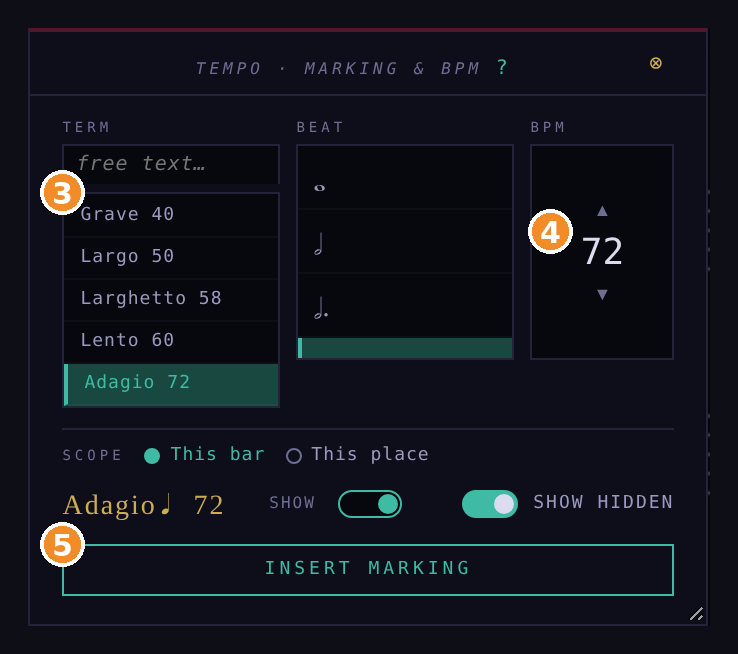
Cómo sabes que salió bien: encima del pentagrama aparece, por ejemplo, «Allegro ♩ = 120», y al tocar la música va a esa velocidad.How you know it worked: above the staff you see, for example, “Allegro ♩ = 120”, and the music plays at that speed.
Para que la música se acelere o se frene a mitad de la obra: pon el cursor en el compás donde cambia y repite los pasos.To make the music speed up or slow down halfway through the piece: put the cursor on the bar where it changes and repeat the steps.
- This bar pone el tempo al principio del compás. This place lo pone en el tiempo exacto donde está el cursor.This bar puts the tempo at the start of the bar. This place puts it on the exact beat where the cursor is.
- Show apagado esconde el «♩ = 120» de la partitura, pero la música sigue a esa velocidad.Show switched off hides the “♩ = 120” from the score, but the music keeps that speed.
Clave · cambiar de clave en medio del pentagramaClef · changing clef mid-staff
La clave es el signo del principio del pentagrama. Dice qué nota es cada línea. La de Sol (Treble) es para sonidos agudos: violín, flauta, la mano derecha del piano. La de Fa (Bass) es para los graves: violonchelo, contrabajo, la mano izquierda. La de Do (C Clef) es para la viola.The clef is the sign at the start of the staff. It says which note each line is. The Treble clef is for high sounds: violin, flute, the piano’s right hand. The Bass clef is for low sounds: cello, double bass, the left hand. The C Clef is for the viola.
Para cambiar la clave:To change the clef:
- Pon el cursor en el instrumento (y en el compás, si la clave cambia a mitad de camino).Put the cursor on the instrument (and on the bar, if the clef changes along the way).
- Pulsa el botón CLEF.Press the CLEF button.
- En Scope elige hasta dónde vale (ver abajo).In Scope choose how far it reaches (see below).
- Haz clic en la clave que quieres. La clave de Do se arrastra arriba o abajo para ponerla en otra línea.Click the clef you want. The C clef can be dragged up or down to put it on another line.

- All channels: todos los instrumentos, toda la obra. This channel: el instrumento activo, toda la obra.All channels: every instrument, the whole piece. This channel: the active instrument, the whole piece.
- This bar: desde el compás del cursor. Sirve para el violonchelo que sube a la clave de Do. This place: desde el tiempo exacto del cursor.This bar: from the cursor’s bar. Useful for the cello that goes up to the C clef. This place: from the cursor’s exact beat.
- Selection: solo los compases seleccionados; después vuelve sola la clave de antes.Selection: only the selected bars; afterwards the previous clef comes back by itself.
La clave no cambia el sonido: cambia cómo se escriben las notas, para que no se llenen de líneas adicionales. Si la clave nueva queda pegada a una nota, ↔ Nudge la corre un poco a la izquierda o a la derecha.The clef does not change the sound: it changes how the notes are written, so they do not fill up with ledger lines. If the new clef sits too close to a note, ↔ Nudge moves it a little to the left or right.
Octave (8va, 15ma, 8vb, 15mb) pone la línea de octava sobre unos compases: las notas se escriben una o dos octavas más cerca del pentagrama, pero suenan donde siempre.Octave (8va, 15ma, 8vb, 15mb) puts an octave line over some bars: the notes are written one or two octaves closer to the staff, but they sound where they always did.
Cifra de compás · y qué pasa con lo ya escritoTime signature · and what happens to what is written
La cifra de compás son los dos números del principio, por ejemplo 3/4. El de arriba dice cuántos tiempos tiene cada compás; el de abajo, qué figura vale un tiempo (4 = negra, 8 = corchea). Un vals está en 3/4: tres negras por compás.The time signature is the two numbers at the start, for example 3/4. The top one says how many beats each bar has; the bottom one, which note is one beat (4 = quarter note, 8 = eighth note). A waltz is in 3/4: three quarter notes per bar.
Para cambiarla:To change it:
- Pulsa el botón TIME.Press the TIME button.
- Escribe Numerator (arriba) y Denominator (abajo), o elige una de Quick Select: 3/4, 2/4, 6/8…Type the Numerator (top) and Denominator (bottom), or pick one from Quick Select: 3/4, 2/4, 6/8…
- Elige uno de los dos botones (ver abajo).Choose one of the two buttons (see below).

- Apply to All Channels cambia solo los números. Las notas se quedan donde están. Úsalo cuando todavía no escribiste nada, o cuando la cifra estaba mal escrita pero las notas están bien.Apply to All Channels changes only the numbers. The notes stay where they are. Use it when you have not written anything yet, or when the signature was wrong but the notes are right.
- Re-bar the music cambia los números y vuelve a repartir las notas en los compases nuevos. Una nota que queda partida por una barra nueva se divide en dos y se liga.Re-bar the music changes the numbers and spreads the notes again into the new bars. A note cut by a new barline is split in two and tied.
Cómo sabes que salió bien: al principio del pentagrama ves la cifra nueva, y con Re-bar cada compás tiene justo los tiempos que dice la cifra.How you know it worked: at the start of the staff you see the new signature, and with Re-bar every bar has exactly the beats the signature says.
Ojo: TIME cambia la cifra de toda la obra, desde el principio. Si la obra ya trae cambios de cifra en el medio (por ejemplo, porque la importaste de Finale), Re-bar no funciona.Careful: TIME changes the signature of the whole piece, from the start. If the piece already has signature changes in the middle (for example, because you imported it from Finale), Re-bar does not work.
Armadura · y transportar la música con ellaKey signature · and transposing the music with it
La armadura son los sostenidos (♯) o bemoles (♭) del principio de cada pentagrama. Dicen en qué tonalidad está la música: Sol mayor lleva un ♯, Fa mayor lleva un ♭.The key signature is the sharps (♯) or flats (♭) at the start of every staff. They say which key the music is in: G major has one ♯, F major has one ♭.
Para poner la armadura:To set the key signature:
- Pulsa el botón que muestra la tonalidad (por ejemplo, C Major).Press the button that shows the key (for example, C Major).
- Elige hasta dónde vale (ver abajo).Choose how far it reaches (see below).
- Elige Major o Minor.Choose Major or Minor.
- Con ▶ y ◀ recorre las tonalidades: cada clic en ▶ suma un ♯ (o quita un ♭), cada clic en ◀ suma un ♭ (o quita un ♯). La armadura cambia enseguida.Walk through the keys with ▶ and ◀: each click on ▶ adds a ♯ (or removes a ♭), each click on ◀ adds a ♭ (or removes a ♯). The key signature changes at once.
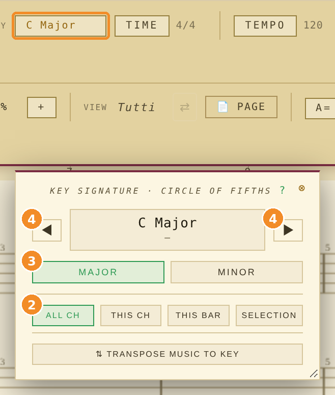
- All CH: todos los instrumentos, toda la obra. This CH: solo el instrumento activo.All CH: every instrument, the whole piece. This CH: only the active instrument.
- This Bar: desde el compás del cursor hacia adelante. Así se cambia de tonalidad a mitad de la obra.This Bar: from the cursor’s bar onwards. That is how you change key halfway through the piece.
- Selection: solo los compases seleccionados; después vuelve la armadura de antes.Selection: only the selected bars; afterwards the previous key comes back.
Dos cosas distintas: cambiar la armadura deja las notas donde están. ⇅ Transpose music to key además mueve la música a la tonalidad nueva: todo suena más agudo o más grave, como cuando un cantante pide la canción «un tono más abajo».Two different things: changing the key signature leaves the notes where they are. ⇅ Transpose music to key also moves the music to the new key: everything sounds higher or lower, like when a singer asks for the song “one tone lower”.
Cómo sabes que salió bien: los ♯ o ♭ aparecen al principio de cada pentagrama, o en el compás donde cambia la tonalidad.How you know it worked: the ♯ or ♭ appear at the start of each staff, or on the bar where the key changes.
Compases · anacrusa, barras y el respiro entre movimientosBars · upbeat, barlines and the breath between movements
BARS sirve para todo lo que tiene que ver con los compases: la anacrusa, agregar o borrar compases y el tipo de barra. Trabaja sobre el compás donde está el cursor.BARS is for everything to do with bars: the pickup, adding or deleting bars, and the type of barline. It works on the bar where the cursor is.
Agregar o borrar compases:Adding or deleting bars:
- Pon el cursor en un compás y pulsa BARS.Put the cursor on a bar and press BARS.
- El interruptor dice Add (agregar) o Delete (borrar). Al lado, cuántos compases.The switch says Add or Delete. Next to it, how many bars.
- Elige Before (antes) o After (después) del compás del cursor. En el medio ves su número (M1 es el compás 1).Choose Before or After the cursor’s bar. In the middle you see its number (M1 is bar 1).
- Pulsa Apply.Press Apply.

Todo lo que viene después se corre con la música: notas, matices, tempos, repeticiones y cambios de cifra o de armadura.Everything that comes after moves along with the music: notes, dynamics, tempos, repeats and changes of time or key signature.
- Upbeat: la anacrusa, las notas que van antes del primer compás completo (el «y» antes del «uno»). Enciéndelo y elige cuánto dura.Upbeat: the pickup, the notes before the first full bar (the “and” before the “one”). Switch it on and choose how long it lasts.
- Barline: el tipo de barra después (o antes) del compás: simple, doble, final, de puntos… La doble separa secciones; la final cierra la obra.Barline: the type of barline after (or before) the bar: simple, double, final, dashed… The double one separates sections; the final one ends the piece.
- Respiro: segundos de silencio en esa barra antes de seguir, útil entre movimientos. 0 = attacca, seguir sin parar.Respiro: seconds of silence at that barline before going on, useful between movements. 0 = attacca, go straight on.
- Beat: pone la barra a mitad de compás, antes de ese tiempo. Pasa cuando una sección termina a mitad de compás y lo que sigue es la anacrusa de la sección siguiente.Beat: puts the barline halfway through the bar, before that beat. It happens when a section ends halfway through a bar and what follows is the pickup of the next section.
- BAR NUM muestra u oculta los números de compás. GROUP hace que las barras crucen entre los pentagramas de cada llave o corchete.BAR NUM shows or hides the bar numbers. GROUP makes the barlines run across the staves of each brace or bracket.
- REP abre Repeats, para las repeticiones.REP opens Repeats, for repeats.
Cómo sabes que salió bien: los números de compás se corren y la barra nueva se ve en su lugar.How you know it worked: the bar numbers shift and the new barline shows in its place.
Repeticiones · repetir, D.C., Coda y ver la obra desplegadaRepeats · repeats, D.C., Coda and seeing the piece unfolded
Una repetición hace que un tramo de música suene dos veces (o más) sin escribirlo de nuevo. Se marca con las barras ‖: y :‖. Con D.C. (da capo, «desde el principio») o D.S. (dal segno, «desde el signo») la música salta hacia atrás.A repeat makes a span of music sound twice (or more) without writing it again. It is marked with the ‖: and :‖ barlines. With D.C. (da capo, “from the beginning”) or D.S. (dal segno, “from the sign”) the music jumps back.
Para repetir un tramo:To repeat a span:
- Pulsa el botón :|.Press the :| button.
- En I WANT TO ① elige Repeat.In I WANT TO ① choose Repeat.
- En From bar y To bar ② escribe el primer y el último compás. En Times, cuántas veces suena.In From bar and To bar ② type the first and the last bar. In Times, how many times it sounds.
- Mira la línea Plays ⑤: dice en qué orden se van a tocar los compases.Look at the Plays line ⑤: it says in which order the bars will be played.
- Pulsa Create ⑥.Press Create ⑥.

Para saltar hacia atrás con D.C. o D.S.: en I WANT TO elige Jump back.To jump back with D.C. or D.S.: in I WANT TO choose Jump back.
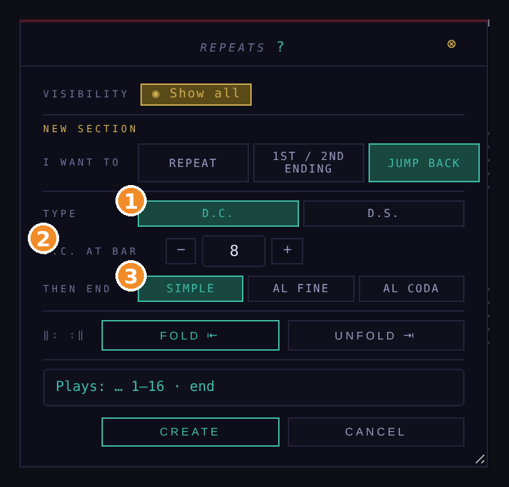
- D.C. vuelve al principio; D.S. vuelve al signo 𝄋, que pones en Segno at ①.D.C. goes back to the beginning; D.S. goes back to the 𝄋 sign, which you set in Segno at ①.
- Cómo termina ③: simple sigue hasta el final; al Fine termina donde dice Fine; al Coda salta a la Coda.How it ends ③: simple goes on to the end; al Fine ends where it says Fine; al Coda jumps to the Coda.
- Unfold ④ muestra la obra estirada, como suena, con las repeticiones escritas. Fold la vuelve a plegar.Unfold ④ shows the piece stretched out, as it sounds, with the repeats written out. Fold folds it back.
Cómo sabes que salió bien: en la partitura aparecen las barras de repetición (o el D.C. o D.S.), y la línea Plays dice el orden que vas a oír.How you know it worked: the repeat barlines (or the D.C. or D.S.) appear in the score, and the Plays line says the order you will hear.
Para los que necesitan más detalle:For those who need more detail:
Una sección puede empezar con su propia anacrusa: From y To llevan cada uno su Beat. From 24 · Beat 2 hace que la sección entre a mitad del compás 24; To 64 · Beat 1 pone el :‖ a mitad del 64, y la repetición vuelve a la anacrusa de la sección. From 0 empieza en la anacrusa de la obra, así que la primera repetición vuelve a ella. Con Beat vacío, la sección toma compases enteros. Una obra puede tener varias secciones seguidas, y todas se repiten.A section can start with its own pickup: From and To each take a Beat. From 24 · Beat 2 makes the section begin halfway through bar 24; To 64 · Beat 1 puts the :‖ halfway through bar 64, and the repeat goes back to the section’s pickup. From 0 starts at the pickup of the piece, so the first repeat returns to it. With Beat left empty, the section takes whole bars. A piece can have several sections in a row, and every one of them repeats.
Las casillas de 1ª y 2ª vez se agregan con + Add ending, una por vuelta, y cada una tiene su Beat al inicio y al final: así se escribe una 1ª casilla que termina con la anacrusa que vuelve al comienzo, o una 2ª casilla que deja lugar a la anacrusa de la sección siguiente. Cada casilla suena solo en su vuelta, y su rótulo es el número de esa vuelta: «1.», «2.» y, en una repetición de tres veces, «3.».First and second endings are added with + Add ending, one per pass, and each has its own Beat at the start and at the end: that is how you write a first ending that closes with the pickup going back to the start, or a second ending that leaves room for the pickup of the next section. Each ending sounds only on its pass, and its label is the number of that pass: “1.”, “2.” and, in a three-time repeat, “3.”.
En los compases de 6/8, 3/8 o 9/8, el Beat cuenta corcheas: en 6/8 va de 1 a 6. To 8 · Beat 5 pone el :‖ después de la quinta corchea del compás 8. Vale igual para las casillas y para el Beat de BARS.In 6/8, 3/8 or 9/8 bars, Beat counts eighth notes: in 6/8 it goes from 1 to 6. To 8 · Beat 5 puts the :‖ after the fifth eighth of bar 8. The same goes for the endings and for the Beat in BARS.
Repetición con 1ª y 2ª casilla. Escribe la música de las dos casillas una detrás de la otra: la 1ª en el último compás de la repetición, la 2ª en el compás siguiente. En Repeats: From bar = el primer compás, To bar = el compás de la 1ª casilla, y el botón 1st / 2nd ending. Las dos casillas se crean solas. Antes de Create, la línea Así suena dice en qué orden se van a tocar los compases: la escribe el mismo motor que toca.Repeat with 1st and 2nd endings. Write the music of both endings one after the other: the 1st in the last bar of the repeat, the 2nd in the next bar. In Repeats: From bar = the first bar, To bar = the bar of the 1st ending, and the 1st / 2nd ending button. Both endings are created for you. Before Create, the Plays line tells you in which order the bars will be played: the same engine that plays writes it.
Para corregirla, clic derecho sobre su sombreado (arriba o abajo del pentagrama), sobre la barra ‖: o :‖, o sobre el corchete de una casilla: se abre el mismo Repeats con todo cargado. Apply la corrige y Delete la borra. Si ya hay una repetición en esos compases, el Score no hace otra encima: avisa.To correct it, right-click its shade (above or below the staff), the ‖: or :‖ barline, or the bracket of an ending: the same Repeats opens with everything loaded. Apply corrects it and Delete deletes it. If there is already a repeat on those bars, the Score does not make another one on top: it warns you.
Texto · poner las letras de ensayoText · placing rehearsal marks
TEXT pone textos sobre la partitura: las letras de ensayo (A, B, C…, para decir «empezamos en la B»), y palabras como Coda, Fine, Solo o Tutti.TEXT puts texts on the score: rehearsal marks (A, B, C…, to say “we start at B”), and words like Coda, Fine, Solo or Tutti.
Para poner un texto:To place a text:
- Pon el cursor donde va.Put the cursor where it goes.
- Pulsa el botón TEXT.Press the TEXT button.
- Escribe el texto ① o haz clic en uno de los rápidos ②.Type the text ① or click one of the quick ones ②.
- Pulsa Insert Text ⑤.Press Insert Text ⑤.

Para poner letras de ensayo en toda la obra de una vez:To put rehearsal marks in the whole piece at once:
- En EVERY ③ escribe cada cuántos compases (por ejemplo, 10).In EVERY ③ type how many bars apart (for example, 10).
- Elige LETTERS (A, B, C…), NUMBERS (1, 2, 3…) o BAR NUM (el número del compás).Choose LETTERS (A, B, C…), NUMBERS (1, 2, 3…) or BAR NUM (the bar number).
- Elige el marco: box (cuadrado), circle o none (sin marco).Choose the frame: box, circle or none.
- Pulsa Generate ④. Clear marks las quita.Press Generate ④. Clear marks removes them.
- SCOPE: This channel, sobre este instrumento; All channels, sobre todos; Each group, una vez por cada grupo de pentagramas.SCOPE: This channel, on this instrument; All channels, on all of them; Each group, once for each group of staves.
- La letra de una canción, sílaba por sílaba bajo las notas, se escribe en la parte LYRICS: mira Letra.The words of a song, syllable by syllable under the notes, are written in the LYRICS part: see Lyrics.
Cómo sabes que salió bien: el texto aparece sobre el pentagrama, en el lugar del cursor.How you know it worked: the text appears above the staff, where the cursor was.
Letra · las sílabas atadas a las notasLyrics · syllables tied to the notes
Para una canción, un coro o un ejercicio con texto, la letra no se escribe como texto suelto sino nota por nota. Cada sílaba se guarda en su nota y se dibuja centrada debajo de ella: si cambias el zoom o el espaciado, la sílaba sigue a su nota, y en las repeticiones no se pierde. Está en el popup TEXT, en el bloque Lyrics.For a song, a choir or an exercise with words, lyrics are not written as loose text but note by note. Each syllable is stored in its note and drawn centred under it: if you change the zoom or the spacing, the syllable follows its note, and it is not lost in the repeats. It is in the TEXT popup, in the Lyrics block.

Escribir la letra. Pon el cursor en la nota donde empieza la letra —o selecciónala— y pulsa LYRICS. Aparece un campo sobre la nota: escribes la sílaba y Espacio (o Tab) pasa a la nota siguiente. Si la palabra sigue, en lugar del espacio escribes el guion -: la sílaba queda con su guion y pasas a la nota siguiente. Shift+Tab vuelve a la nota anterior, Enter termina y Esc sale sin guardar lo último que escribiste. Los silencios y las notas ligadas se saltan solos.Typing the lyrics. Put the cursor on the note where the lyrics begin —or select it— and press LYRICS. A field appears over the note: type the syllable and Space (or Tab) moves to the next note. If the word goes on, type the hyphen - instead of the space: the syllable keeps its hyphen and you move to the next note. Shift+Tab goes back to the previous note, Enter finishes and Esc leaves without saving what you last typed. Rests and tied notes are skipped by themselves.
Un ejemplo: para «Estrellita, dónde estás» escribes Es - tre - lli - ta Espacio dón - de Espacio es - tás. Cuando una sílaba dura varias notas (un melisma), pulsa Espacio sobre las notas que siguen sin escribir nada: quedan sin sílaba y la sílaba anterior se prolonga. Para corregir una sílaba, pon el cursor en su nota y pulsa LYRICS: el campo muestra lo que tiene; lo borras y escribes lo nuevo.An example: for “Twinkle, twinkle, little star” type Twin - kle Space twin - kle Space lit - tle Space star. When a syllable lasts several notes (a melisma), press Space on the following notes without typing anything: they stay without a syllable and the previous syllable is extended. To correct a syllable, put the cursor on its note and press LYRICS: the field shows what it has; delete it and type the new one.

Cómo se ve. Entre las sílabas de una misma palabra el Score dibuja el guion, centrado en el espacio que queda; cuando la última sílaba de una palabra dura varias notas, dibuja la línea de prolongación hasta la última nota del melisma. Size cambia el tamaño de la letra del canal y Y la baja o la sube respecto del pentagrama, por ejemplo si hay notas muy graves; con Line 2 o 3 elegida, Y mueve la traducción. Cada canal lleva su propia letra: un coro a cuatro voces tiene una letra en cada pentagrama.How it looks. Between the syllables of one word the Score draws the hyphen, centred in the space left; when the last syllable of a word lasts several notes, it draws the extender line up to the last note of the melisma. Size changes the size of the channel's lyrics and Y moves them down or up from the staff, for instance when there are very low notes; with Line 2 or 3 selected, Y moves the translation. Each channel has its own lyrics: a four-part choir has lyrics on each staff.

La traducción. Debajo de la letra caben dos líneas más para la traducción. Eliges Line 2 (o 3) y pulsas LYRICS sobre la primera nota de una frase: ahí escribes la frase entera, con sus espacios, y Tab pasa a la nota siguiente (Tab sobre las notas donde no empieza frase las deja vacías). Cada frase queda atada a su nota y se dibuja en cursiva, alineada desde esa nota y debajo del sistema, aunque la letra sea del pentagrama de arriba. Line 1 vuelve a la letra cantada. CLEAR y TEXTS → LYRICS trabajan sobre la línea elegida.The translation. Below the lyrics there is room for two more lines for the translation. Pick Line 2 (or 3) and press LYRICS on the first note of a phrase: type the whole phrase there, spaces included, and Tab moves to the next note (Tab on the notes where no phrase starts leaves them empty). Each phrase is tied to its note and drawn in italics, aligned from that note and below the system, even when the lyrics belong to the upper staff. Line 1 goes back to the sung lyrics. CLEAR and TEXTS → LYRICS work on the selected line.
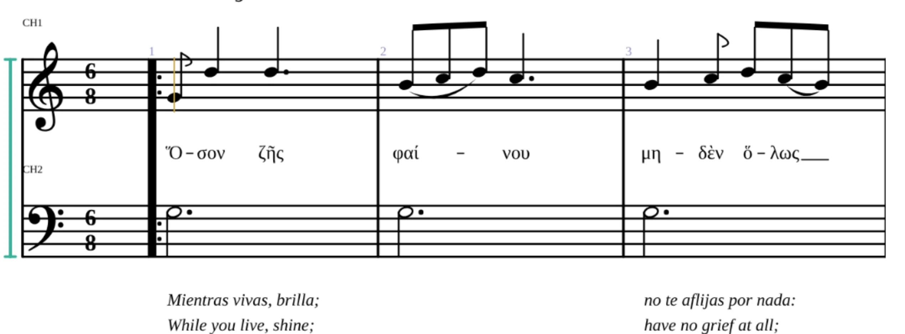
TEXTS → LYRICS sirve si la letra ya estaba escrita como textos sueltos del canal: la convierte en letra de verdad, y cada texto va a la nota más cercana de su tiempo. CLEAR borra la letra del canal activo. Todo se deshace con Undo y se guarda con la obra en el .mmf. La letra también viaja en MusicXML: sale al exportar (cada sílaba con su guion, la traducción como estrofas 2 y 3) y entra al importar el XML de Finale, MuseScore o Sibelius.TEXTS → LYRICS is for lyrics that were already written as loose texts of the channel: it turns them into real lyrics, and each text goes to the note nearest its beat. CLEAR deletes the active channel's lyrics. Everything can be undone with Undo and is saved with the piece in the .mmf. Lyrics also travel in MusicXML: they go out on export (each syllable with its hyphen, the translation as verses 2 and 3) and come in when importing XML from Finale, MuseScore or Sibelius.
Modo demo · mostrar una obra sin editarlaDemo mode · showing a piece without editing it
Para presentar una obra —en clase, en una pantalla o para grabar un video— el Score se abre en modo demo agregando ?demo a la dirección: mm-score-page.html?demo. Se esconden las barras de edición, el teclado y los botones del encabezado; quedan la partitura y la barra de abajo, con Play, Pause, Stop y los saltos de compás. Espacio toca y detiene. Nada de lo que se haga sobre la partitura la cambia: el clic solo pone el cursor para tocar desde ahí.To present a piece —in class, on a screen or to record a video— the Score opens in demo mode by adding ?demo to the address: mm-score-page.html?demo. The editing bars, the keyboard and the header buttons are hidden; the score and the bottom bar remain, with Play, Pause, Stop and the bar jumps. Space plays and stops. Nothing done on the score changes it: a click only places the cursor to play from there.
Con &file= se abre directamente un archivo, y con &page se muestra como hoja: mm-score-page.html?demo&file=../Claude%20outputs/Claude-2026-seikilos.mmf&page. El sonido viaja con la página: la demo carga el Keyboard escondido, como motor, y la obra suena sin abrir nada más (si ya tienes un Keyboard abierto, usa ese).With &file= a file opens directly, and with &page it is shown as a sheet: mm-score-page.html?demo&file=../Claude%20outputs/Claude-2026-seikilos.mmf&page. The sound travels with the page: the demo loads the Keyboard hidden, as its engine, and the piece plays without opening anything else (if you already have a Keyboard open, it uses that one).
Arriba, centrados junto al título, la demo lleva tres botones: PAGE / SCROLL cambia entre la hoja y la tira, PRINT arma la hoja y abre la impresión con las páginas listas (el navegador siempre muestra su ventana de impresión antes de imprimir), y PULSE abre el metrónomo.At the top, centred next to the title, the demo has three buttons: PAGE / SCROLL switches between the sheet and the scroll, PRINT builds the sheet and opens printing with the pages ready (the browser always shows its print window before printing), and PULSE opens the metronome.
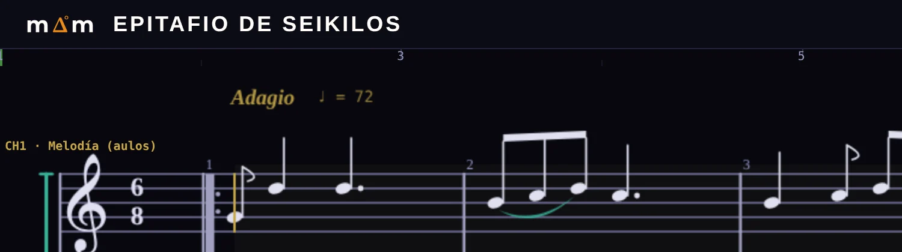
Dinámicas · un matiz, o un crescendo de dos compasesDynamics · a marking, or a two-bar crescendo
Las dinámicas dicen qué tan fuerte o suave se toca: pp muy suave, p suave, mf medio fuerte, f fuerte, ff muy fuerte. Los reguladores (crescendo y diminuendo) dicen que el sonido crece o se apaga poco a poco.Dynamics say how loud or soft to play: pp very soft, p soft, mf medium loud, f loud, ff very loud. Hairpins (crescendo and diminuendo) say the sound grows or fades little by little.
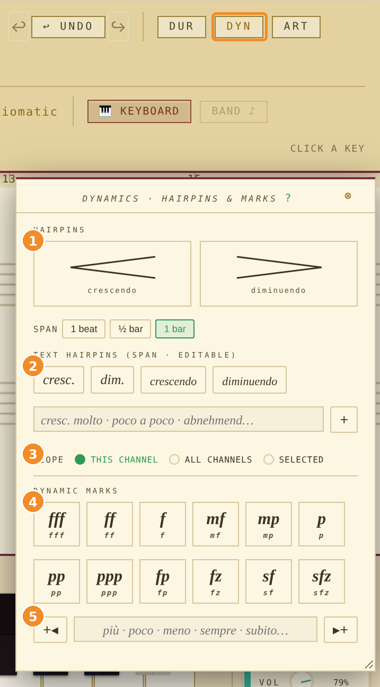
Para poner un matiz:To place a dynamic mark:
- Pon el cursor en la nota donde empieza.Put the cursor on the note where it starts.
- Pulsa el botón DYN.Press the DYN button.
- Haz clic en el matiz ④: p, f, mf…Click the mark ④: p, f, mf…
Para poner un regulador:To place a hairpin:
- Pon el cursor donde empieza, o selecciona el tramo que quieres.Put the cursor where it starts, or select the span you want.
- Haz clic en crescendo o diminuendo ①.Click crescendo or diminuendo ①.
Sin selección, el regulador mide un compás. Si lo quieres más largo o más corto, arrastra su punta.Without a selection, the hairpin is one bar long. If you want it longer or shorter, drag its tip.
- cresc. y dim. en palabras ② sirven cuando el regulador dibujado no cabe. SPAN dice cuánto duran: 1 beat (un tiempo), ½ bar o 1 bar.cresc. and dim. in words ② are for when the drawn hairpin does not fit. SPAN says how long they last: 1 beat, ½ bar or 1 bar.
- SCOPE ③: This channel, solo este instrumento; All channels, toda la orquesta; Selected, los instrumentos que marques.SCOPE ③: This channel, this instrument only; All channels, the whole orchestra; Selected, the instruments you tick.
- En la fila de abajo ⑤ puedes escribir una palabra delante o detrás del matiz, como «più f» o «p subito».In the bottom row ⑤ you can write a word before or after the mark, like “più f” or “p subito”.
Cómo sabes que salió bien: el matiz o el regulador aparece debajo del pentagrama, y al tocar se oye el cambio.How you know it worked: the mark or the hairpin appears under the staff, and you hear the change when it plays.
Articulaciones · el staccato, la arcada, el trinoArticulations · the staccato, the bowing, the trill
Las articulaciones son los signos pequeños sobre o debajo de la nota que dicen cómo se toca: el punto del staccato (corta), la rayita del tenuto (sostenida), el acento > (con fuerza).Articulations are the small signs above or below the note that say how to play it: the dot of the staccato (short), the little line of the tenuto (held), the accent > (with force).
Para poner una articulación:To place an articulation:
- Pon el cursor en la nota, o selecciona varias.Put the cursor on the note, or select several.
- Pulsa el botón ART.Press the ART button.
- Haz clic en el signo ③.Click the sign ③.

- La línea de arriba ① dice dónde va a caer: el canal, el cursor o la selección, y cuántas notas (por ejemplo, «1 note»).The top line ① says where it will land: the channel, the cursor or the selection, and how many notes (for example, “1 note”).
- SIDE ②: auto decide solo si el signo va arriba o abajo; beam lo pone del lado de la plica; head, del lado de la cabeza.SIDE ②: auto decides by itself whether the sign goes above or below; beam puts it on the stem side; head, on the note-head side.
- Los signos ③ van por grupos: TOUCH (staccato, tenuto…), EMPHASIS (acentos), TIME (fermata es el calderón, caesura, breath), PEDAL y, más abajo, los adornos (trill, turn, mordent, tremolo).The signs ③ come in groups: TOUCH (staccato, tenuto…), EMPHASIS (accents), TIME (fermata, caesura, breath), PEDAL and, further down, the ornaments (trill, turn, mordent, tremolo).
- Con una selección, ped pone el pedal donde empieza y lo levanta donde termina.With a selection, ped puts the pedal down where it starts and lifts it where it ends.
Cómo sabes que salió bien: el signo aparece en la nota, y al tocar se oye: el staccato suena corto, el acento más fuerte.How you know it worked: the sign appears on the note, and you hear it when it plays: the staccato sounds short, the accent louder.
Duración · elegir la figura antes de escribirDuration · picking the note value before writing
Antes de escribir una nota eliges cuánto dura: su figura (redonda, blanca, negra, corchea…). La figura queda puesta, y cada nota que escribas sale con ese valor hasta que elijas otra.Before writing a note you choose how long it lasts: its note value (whole, half, quarter, eighth…). The value stays set, and every note you write comes out with it until you choose another one.
Para elegir la figura:To choose the note value:
- Pulsa el botón DUR.Press the DUR button.
- Haz clic en la figura ②: 1/1 es la redonda, 1/2 la blanca, 1/4 la negra, 1/8 la corchea, y así hasta 1/64.Click the value ②: 1/1 is the whole note, 1/2 the half note, 1/4 the quarter note, 1/8 the eighth note, and so on down to 1/64.
- Escribe las notas.Write the notes.

Atajo: también puedes elegir la figura con el numpad, sin abrir el popup.Shortcut: you can also choose the value with the numpad, without opening the popup.
Para escribir silencios: haz clic otra vez en la figura que ya está encendida. Ahora cada nota sale como silencio. Otro clic, u otra figura, y vuelves a las notas.To write rests: click again on the value that is already lit. Now every note comes out as a rest. Another click, or another value, and you are back to notes.
Los cuatro botones de abajo ③:The four buttons at the bottom ③:
- DOT pone el puntillo: la nota dura una vez y media. Vale solo para la próxima nota.DOT adds the dot: the note lasts one and a half times as long. It is only for the next note.
- GRACE hace que las notas salgan como notitas de adorno. Cada clic cambia: ACCIACCATURA (tachada), APPOGGIATURA, apagado. Queda encendido hasta que lo apagas.GRACE makes the notes come out as grace notes. Each click changes it: ACCIACCATURA (slashed), APPOGGIATURA, off. It stays on until you switch it off.
- REST pone un silencio de la figura elegida donde está el cursor.REST puts a rest of the chosen value where the cursor is.
- TUPLET abre el tresillo: tres notas en el lugar de dos.TUPLET opens the tuplet: three notes in the place of two.
Cómo sabes que salió bien: la figura elegida queda encendida en verde, y la nota que escribes tiene esa forma.How you know it worked: the chosen value stays lit in green, and the note you write has that shape.
Expresión · dolce, espressivo, y hasta dónde valenExpression · dolce, espressivo, and how far they reach
Una expresión es una palabra que dice el carácter de la música: dolce (dulce), espressivo, agitato, cantabile. En Music Motion la palabra no es solo tinta: el instrumento la lee y cambia su manera de tocar.An expression is a word that says the character of the music: dolce (sweet), espressivo, agitato, cantabile. In Music Motion the word is not just ink: the instrument reads it and changes the way it plays.
Para poner una expresión:To place an expression:
- Pon el cursor donde empieza.Put the cursor where it starts.
- Pulsa el botón EXPR.Press the EXPR button.
- Escribe la palabra ① o haz clic en una de las rápidas ②.Type the word ① or click one of the quick ones ②.
- Pulsa Insert Expression ④.Press Insert Expression ④.
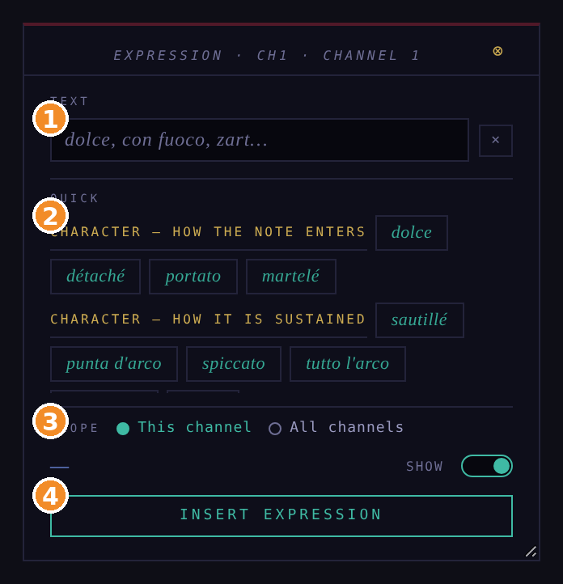
- La palabra vale desde ahí hasta la próxima expresión del mismo instrumento.The word holds from there until the next expression of the same instrument.
- SCOPE ③: This channel, solo este instrumento; All channels, todos.SCOPE ③: This channel, this instrument only; All channels, all of them.
- Show apagado esconde la palabra de la partitura, pero el instrumento la sigue tocando.Show switched off hides the word from the score, but the instrument keeps playing it.
- Puedes escribirla en tu idioma: mira cómo.You can write it in your own language: see how.
Cómo sabes que salió bien: la palabra aparece en cursiva sobre el pentagrama.How you know it worked: the word appears in italics above the staff.
AGOG · quién decide el rubatoAGOG · who decides the rubato
La agógica es la libertad del tiempo: estirar un poco una nota o una frase, como hace un músico cuando respira (el rubato). Este popup es el mapa de la agógica de tu obra: te dice dónde hay y te lleva ahí.Agogics is freedom of time: stretching a note or a phrase a little, the way a musician does when breathing (the rubato). This popup is the map of the agogics in your piece: it tells you where there is some and takes you there.

Para ver la agógica de tu obra:To see the agogics in your piece:
- Pulsa el botón AGOG.Press the AGOG button.
- En la lista ① ves cada frase (⌘) y cada nota estirada (◆), en orden de compases.In the list ① you see each phrase (⌘) and each stretched note (◆), in bar order.
- Haz clic en una: el cursor va ahí y se abre su editor, para corregirla.Click one: the cursor goes there and its editor opens, so you can fix it.
Para dar agógica a una frase:To give agogics to a phrase:
- Con SELECT, selecciona los compases de la frase.With SELECT, select the bars of the phrase.
- Pulsa AGOG y luego ⌘ Phrase from selection ②. Se abre la agógica de frase, donde eliges cómo respira.Press AGOG and then ⌘ Phrase from selection ②. Phrase agogics opens, where you choose how it breathes.
Es lo mismo que hacer clic derecho sobre la selección y elegir ⌘ ASYM AGOG. Si no hay nada seleccionado, el botón te lo dice.It is the same as right-clicking the selection and choosing ⌘ ASYM AGOG. If nothing is selected, the button tells you.
Para estirar una sola nota: haz clic derecho sobre la nota y pulsa ← AGOG. Mira AGOG de la nota.To stretch a single note: right-click the note and press ← AGOG. See AGOG of the note.
- Show all ③ muestra u oculta en la partitura todas las marcas de agógica. Ocultas, se siguen guardando en el archivo.Show all ③ shows or hides all the agogic marks in the score. Hidden, they are still saved in the file.
Cómo sabes que salió bien: la frase o la nota nueva aparece en la lista, en su compás.How you know it worked: the new phrase or note appears in the list, at its bar.
Tools · cuando la pantalla se llena de panelesTools · when the screen fills up with panels
Mientras trabajas abres muchos popups, y la pantalla se llena. TOOLS sirve para ordenarlos y para abrir los ajustes.While you work you open many popups, and the screen fills up. TOOLS is for tidying them up and for opening the settings.

- Open popups ①: Top los abre debajo de la barra de arriba; Bottom, encima del teclado.Open popups ①: Top opens them below the top bar; Bottom, above the keyboard.
- View popups ②: Free, cada uno donde lo dejaste; Cascade, escalonados; Grouped, lado a lado; Stack, uno encima de otro, como un mazo de cartas. Más detalles.View popups ②: Free, each where you left it; Cascade, staggered; Grouped, side by side; Stack, one on top of another, like a deck of cards. More details.
- La lista ③ muestra los popups abiertos: cada uno con una flecha para traerlo al frente y una cruz para cerrarlo.The list ③ shows the open popups: each with an arrow to bring it to the front and a cross to close it.
- Hide all ④ esconde todos los popups de una vez; la tecla X hace lo mismo y los vuelve a mostrar. Reset positions los devuelve a su lugar de siempre.Hide all ④ hides all the popups at once; the X key does the same and shows them again. Reset positions puts them back in their usual place.
- Score Options y Preferences ⑤ abren los ajustes: cómo se ve la partitura y cómo se comporta el Score.Score Options and Preferences ⑤ open the settings: how the score looks and how the Score behaves.
Score Options · que la hoja respireScore Options · letting the sheet breathe
Score Options ajusta cómo se ve la partitura: si las notas quedan muy apretadas o muy sueltas. Se abre desde TOOLS.Score Options adjusts how the score looks: whether the notes are too tight or too loose. It opens from TOOLS.

- Note spacing ①: el espacio entre las notas. Vale para toda la obra; con una selección activa, solo para ese tramo.Note spacing ①: the space between the notes. It applies to the whole piece; with an active selection, only to that span.
- Note size ②: el tamaño de las notas, por ejemplo más pequeñas para una parte que solo sirve de guía (cue). Necesita una selección.Note size ②: the size of the notes, for example smaller for a part that is only a guide (cue). It needs a selection.
- Staff spacing ③: el espacio entre pentagramas, para toda la obra.Staff spacing ③: the space between staves, for the whole piece.
- Bar numbers ④: Continuous numera los compases de corrido; Per movement vuelve a empezar en cada movimiento. Solo cambia lo que se ve: para ir a un compás, el número sigue siendo el de corrido.Bar numbers ④: Continuous numbers the bars straight through; Per movement starts again in each movement. It only changes what you see: to go to a bar, the number is still the continuous one.
Cómo sabes que salió bien: la partitura cambia en cuanto eliges el valor.How you know it worked: the score changes as soon as you choose the value.
Preferencias · cómo quieres que se comporte el ScorePreferences · how you want the Score to behave
Preferences guarda cómo te gusta trabajar. Se pone una vez y queda guardado para la próxima vez. Se abre desde TOOLS.Preferences keeps how you like to work. You set it once and it stays saved for next time. It opens from TOOLS.

- ① Open in: la carpeta donde empieza IMPORT MMF: la última que usaste (Last used) o Documents.① Open in: the folder where IMPORT MMF starts: the last one you used (Last used) or Documents.
- ② Coach: On u Off, si la aplicación Coach te da consejos mientras escribes.② Coach: On or Off, whether the Coach app gives you advice while you write.
- ③ Remember place: con On, cada popup vuelve a abrirse donde lo dejaste y con su tamaño.③ Remember place: with On, each popup opens again where you left it and with its size.
- ④ Save on its own: guarda solo cada 2, 5 o 10 minutos; Off no guarda solo.④ Save on its own: saves by itself every 2, 5 or 10 minutes; Off does not.
- ⑤ Messages: el idioma de los mensajes. Con FR, NL o DE, la guía sale en ese idioma y los mensajes, por ahora, en inglés.⑤ Messages: the language of the messages. With FR, NL or DE, the guide comes in that language and the messages, for now, in English.
- ⑥ Colours: el color de la pantalla: Dark, Gray, Clear (como papel) o Contrast. Arrangement acomoda los popups, como en TOOLS.⑥ Colours: the colour of the screen: Dark, Gray, Clear (like paper) or Contrast. Arrangement arranges the popups, as in TOOLS.
- ⑦ Warnings on open: Quiet revisa el archivo sin molestarte; On screen además te muestra qué compases conviene mirar.⑦ Warnings on open: Quiet checks the file without bothering you; On screen also shows you which bars are worth checking.
- ⑧ Notation: Key change dice qué alteraciones se cancelan al cambiar de armadura (Dropped only, solo las que salen; All, todas); Slur es la forma del ligado nuevo; Sizes, el tamaño de dinámicas (DYN) y articulaciones (ART); SUBDIV, Auto la deduce de la música al abrir y File usa la del archivo.⑧ Notation: Key change says which accidentals are cancelled when the key changes (Dropped only, only the ones that go; All, all of them); Slur is the shape of a new slur; Sizes, the size of dynamics (DYN) and articulations (ART); SUBDIV, Auto works it out from the music when opening and File uses the file’s.
Diapasón · tocar a 415 como en el barrocoReference pitch · playing at 415, as in the baroque
El diapasón es la nota La con la que se afina toda la orquesta. Hoy se usa La = 440 Hz (440 vibraciones por segundo). En la época barroca era más bajo, cerca de 415.The tuning pitch is the A that the whole orchestra tunes to. Today A = 440 Hz is used (440 vibrations per second). In the Baroque era it was lower, around 415.
Para cambiarlo:To change it:
- Pulsa el botón A= 440 de la barra de arriba.Press the A= 440 button on the top bar.
- Elige uno de los históricos ②, o mueve el deslizador ① para un valor exacto.Choose one of the historical ones ②, or move the slider ① for an exact value.
- Reset ③ vuelve a 440.Reset ③ goes back to 440.

- No transporta: toda la obra suena un poco más grave o más aguda, pero las notas escritas no cambian.It does not transpose: the whole piece sounds a little lower or higher, but the written notes do not change.
- Es el mismo A= del Keyboard: cambiarlo allí mientras el Score toca también vale.It is the same A= as in the Keyboard: changing it there while the Score plays works too.
Cómo sabes que salió bien: el botón muestra el número nuevo y la música suena más grave o más aguda.How you know it worked: the button shows the new number and the music sounds lower or higher.
Undo y borrar · deshacer varios pasos, o limpiar un canalUndo and erase · stepping back, or clearing a channel
Deshacer vuelve atrás lo último que hiciste. El atajo es Ctrl+Z (o la tecla Backspace ←), y Ctrl+Y lo rehace. Este popup sirve para volver varios pasos de una vez, y para borrar.Undo takes back the last thing you did. The shortcut is Ctrl+Z (or the Backspace ← key), and Ctrl+Y redoes it. This popup is for going back several steps at once, and for erasing.
Para un solo paso no hace falta abrir el popup: las flechas a los lados del botón hacen lo mismo que los atajos. ↩ ④ deshace un paso (como Ctrl+Z) y ↪ ⑤ lo rehace (como Ctrl+Y).For a single step you do not need to open the popup: the arrows on each side of the button do the same as the shortcuts. ↩ ④ undoes one step (like Ctrl+Z) and ↪ ⑤ redoes it (like Ctrl+Y).
Para deshacer varios pasos:To undo several steps:
- Pulsa el botón ↩ UNDO.Press the ↩ UNDO button.
- Elige cuántos pasos ①: 1, 3, 5 o 10.Choose how many steps ①: 1, 3, 5 or 10.
- Pulsa ↩ Undo ②.Press ↩ Undo ②.

Para borrar ③:To erase ③:
- At cursor: las notas del instrumento activo que están justo en el cursor.At cursor: the notes of the active instrument that are right at the cursor.
- Selection: lo que tienes seleccionado. Si no hay nada seleccionado, no hace nada.Selection: what you have selected. If nothing is selected, it does nothing.
- Active CH: todas las notas del instrumento activo. All CH: todas las notas de todos los instrumentos. Estos dos preguntan antes de borrar.Active CH: all the notes of the active instrument. All CH: all the notes of every instrument. These two ask before erasing.
- Todo lo que borras se puede deshacer.Everything you erase can be undone.
Cómo sabes que salió bien: debajo de los números, una línea dice cuántos pasos hay guardados. «No history yet» quiere decir que todavía no hay nada que deshacer.How you know it worked: under the numbers, a line says how many steps are saved. “No history yet” means there is nothing to undo yet.
Canales · agregar un instrumento a la obraChannels · adding an instrument to the piece
Cada instrumento de tu obra vive en un canal: una fila de esta lista y un pentagrama en la partitura. El Score tiene 32 canales.Each instrument in your piece lives in a channel: a row in this list and a staff in the score. The Score has 32 channels.
Para agregar un instrumento:To add an instrument:
- Pulsa el botón ⚙ CHANNELS.Press the ⚙ CHANNELS button.
- Pulsa + ADD CHANNEL ④: el siguiente canal se enciende y aparece su pentagrama.Press + ADD CHANNEL ④: the next channel switches on and its staff appears.
- En su fila, abre la lista ② y elige el instrumento.In its row, open the list ② and choose the instrument.

Cómo sabes que salió bien: aparece el pentagrama nuevo con el nombre del instrumento, y al tocar suena con su timbre.How you know it worked: the new staff appears with the instrument’s name, and it sounds with its own timbre when it plays.
- El casillero ① dice si el pentagrama se ve. Apagado, desaparece de la pantalla pero sigue sonando: ver y no ver.The checkbox ① says whether the staff is shown. Off, it disappears from the screen but keeps sounding: seeing and not seeing.
- El instrumento ② decide cómo suena el canal: más detalles.The instrument ② decides how the channel sounds: more details.
- 👁 deja el pentagrama tenue; ◉ lo silencia (oír y no oír); FX le pone reverb o eco (Sound FX).👁 makes the staff faint; ◉ mutes it (hearing and not hearing); FX adds reverb or echo (Sound FX).
- ☰ abre las opciones del grupo, para juntar dos instrumentos en un pentagrama.☰ opens the group options, to put two instruments on one staff.
- List ⑤ carga una lista de instrumentos ya armada, en lugar de elegirlos uno por uno.List ⑤ loads a ready-made list of instruments, instead of choosing them one by one.
La banda · lo que se usa todo el tiempo, a manoThe band · what you use constantly, within reach
Botón BAND ♪. Una tira que sigue al cursor con lo que más se toca al escribir: notita, puntillo, tresillo, alteración, agógica, articulación y dinámica. Es para no abrir cuatro popups mientras escribes una frase.Button BAND ♪. A strip that follows the cursor with what you reach for most while writing: grace, dot, tuplet, accidental, agogics, articulation and dynamic. It is there so you do not open four popups while writing one phrase.
La cuenta del juego · en qué anda el alumnoThe game count · where the student stands
Clic derecho sobre el logo. Muestra la minilección del Coach y cómo va el juego de composición: qué regla toca, qué se logró y qué falta.Right-click on the logo. Shows the Coach’s mini-lesson and how the composition game is going: which rule is up, what has been achieved and what is left.
Atajos · los que se usan sin soltar el tecladoShortcuts · the ones you use without leaving the keyboard
Clic derecho sobre ✎ INFO. La tabla corta de lo que conviene saber de memoria: el numpad para las figuras, el espacio para tocar, Ctrl+Z, Esc. Y el enlace a la lista completa, que se imprime.Right-click on ✎ INFO. The short table of what is worth knowing by heart: the numpad for note values, space to play, Ctrl+Z, Esc. And the link to the full list, which prints.
En la partitura, sobre lo que ya escribiste — clic derecho sobre la nota, el ligado o el adorno que hay que arreglar.On the score, over what you already wrote — right-click on the note, the slur or the ornament that needs fixing.
Editor de nota · arreglar una nota sin volver a escribirlaNote editor · fixing a note without writing it again
El editor de nota sirve para cambiar una nota que ya escribiste: más fuerte o más suave, con otra alteración, con la plica al revés, convertida en silencio…The note editor is for changing a note you have already written: louder or softer, with another accidental, with the stem the other way, turned into a rest…
Para abrirlo: haz clic derecho sobre la nota ①. Arriba dice qué nota es y dónde está, por ejemplo «DN5 · M1 B2» (Re 5, compás 1, tiempo 2).To open it: right-click on the note ①. At the top it says which note it is and where, for example «DN5 · M1 B2» (D5, bar 1, beat 2).

Lo que más se usa:What you use most:
- VEL ②: qué tan fuerte suena esta nota sola. + y − la cambian de a 1, +5 y −5 de a 5. N la devuelve a lo que dice la banda de dinámica.VEL ②: how loud this one note sounds. + and − change it by 1, +5 and −5 by 5. N gives it back to what the dynamics band says.
- Hide note esconde la nota: sigue sonando pero no se imprime. Flip stem da vuelta la plica. → Rest la convierte en silencio. Dot le pone o le quita el puntillo.Hide note hides the note: it still sounds but is not printed. Flip stem turns the stem the other way. → Rest turns it into a rest. Dot adds or removes the dot.
- ACC ③: la alteración. Doble bemol, bemol, becuadro, sostenido, doble sostenido.ACC ③: the accidental. Double flat, flat, natural, sharp, double sharp.
- PRES ④: la presencia, el peso del ataque, de −2 a +2. Para que una voz de adentro de un acorde se oiga más, súmale PRES +1.PRES ④: the presence, the weight of the attack, from −2 to +2. To make an inner voice of a chord stand out, give it PRES +1.
Una nota con VEL o PRES cambiados no lleva ningún signo en la partitura. Para encontrarlas, enciende SHOW HIDDEN ⑤: al lado de cada una aparece en gris lo que tiene (por ejemplo «v96»), y su cabeza se pone lavanda. Eso se ve solo en la pantalla, nunca en la hoja impresa.A note with changed VEL or PRES carries no sign in the score. To find them, switch on SHOW HIDDEN ⑤: next to each one what it has appears in grey (for example «v96»), and its head turns lavender. That is seen only on the screen, never on the printed sheet.
Cómo sabes que salió bien: el cambio se ve (o se oye) enseguida en la nota, y la línea de arriba del editor muestra el valor nuevo. Si te equivocaste, UNDO lo deshace.How you know it worked: the change is seen (or heard) right away on the note, and the top line of the editor shows the new value. If you made a mistake, UNDO takes it back.
Desde aquí también se abren los editores del ligado, de la plica y de la barra, y con la fila ³ TUPLET, el del tresillo.From here you also open the editors for the slur, the stem and the beam, and with the ³ TUPLET row, the tuplet one.
Editor de ligado · que el arco quede como lo pensasteSlur editor · making the arc come out the way you meant it
Un ligado es el arco que une varias notas: se tocan juntas, en una sola frase. El editor de ligado sirve para cambiar dónde empieza y dónde termina, cómo se ve y cómo se toca.A slur is the arc that joins several notes: they are played together, in a single phrase. The slur editor is for changing where it starts and ends, how it looks and how it is played.
Para abrirlo: haz clic derecho sobre el arco del ligado ①. El arco muestra tres puntos y a su lado se abre el editor.To open it: right-click on the arc of the slur ①. The arc shows three dots and the editor opens next to it.

Arriba, Anchors: las flechas ◀ ▶ de Start y End corren el comienzo o el final del ligado a la nota anterior o a la siguiente.At the top, Anchors: the ◀ ▶ arrows of Start and End move the start or the end of the slur to the previous or the next note.
La forma del ligado ② no cambia el dibujo del arco: cambia cómo se toca la frase. La línea verde del editor te la muestra, y en la partitura se ve en el color del arco: verde donde la frase es más fuerte, dorado donde es más suave.The shape of the slur ② does not change the drawing of the arc: it changes how the phrase is played. The green line in the editor shows it to you, and on the score you see it in the colour of the arc: green where the phrase is louder, golden where it is softer.

- > decae: empieza fuerte y termina suave. < crece: al revés.> fades: it starts strong and ends soft. < grows: the other way round.
- <> abre al medio y cierra. >º< cae al medio y vuelve.<> opens in the middle and closes. >º< dips in the middle and comes back.
- — plano: sostenido, sin cambio. Es la forma con la que nace el ligado.— flat: sustained, with no change. It is the shape the slur is born with.
- ∩∪∩ y ∪∩∪: notas de dos en dos, fuerte-débil o débil-fuerte. El arco se ve igual.∩∪∩ and ∪∩∪: notes in pairs, strong-weak or weak-strong. The arc looks the same.
Cuánto sube o baja lo eliges en Dynamics ③: Peak es cuánto más fuerte llega el punto más alto (+1 a +4), y Valley cuánto más suave el más bajo (−1 a −4), siempre respecto de la dinámica escrita.How much it rises or falls you choose in Dynamics ③: Peak is how much louder the highest point gets (+1 to +4), and Valley how much softer the lowest one (−1 to −4), always relative to the written dynamic.
Los botones que cambian el dibujo del arco, para que no choque con nada:The buttons that change the drawing of the arc, so that it does not bump into anything:
- Vertical ④: sube o baja el arco entero (All) o solo un extremo (Left, Right).Vertical ④: raises or lowers the whole arc (All) or only one end (Left, Right).
- Horizontal ⑤: corre el comienzo o el final hacia los lados.Horizontal ⑤: moves the start or the end sideways.
- Curva ⑥: cuánto se curva el arco, a la izquierda, en el centro o a la derecha.Curva ⑥: how much the arc bends, on the left, in the centre or on the right.
- Arrastre ⑦: los tres puntos del arco también se arrastran con el mouse y se imantan a ¼ de espacio (con Shift, a ½). Esta fila dice cuánto moviste, y ↺ Arrastre deshace solo eso.Arrastre ⑦: the three dots of the arc can also be dragged with the mouse, and they snap to ¼ of a space (with Shift, to ½). This row says how much you moved them, and ↺ Arrastre undoes only that.
- ⑧ ↕ Flip pasa el arco al otro lado de las notas. ↔ Mirror lo espeja de izquierda a derecha. ↺ Reset lo devuelve al dibujo automático. ✕ Delete slur borra el ligado.⑧ ↕ Flip moves the arc to the other side of the notes. ↔ Mirror mirrors it from left to right. ↺ Reset gives it back its automatic drawing. ✕ Delete slur deletes the slur.
Cómo sabes que salió bien: el arco cambia en la partitura en cuanto tocas un botón, y al escuchar, la frase sigue la forma que elegiste. Si no te gusta, UNDO lo deshace.How you know it worked: the arc changes on the score as soon as you press a button, and when you listen, the phrase follows the shape you chose. If you do not like it, UNDO takes it back.
Un ligado de tres compases o más ata solo cada extremo del lado que le toca: a la cabeza de la nota si el arco va del lado de la cabeza, a la punta de la plica o a la barra si va del lado de la plica.A slur of three bars or more ties each end by itself to the side it belongs to: to the note head if the arc is on the head side, to the tip of the stem or to the beam if it is on the stem side.
Editor de plica · cuando la plica choca o queda cortaStem editor · when the stem collides or falls short
La plica es el palito vertical de la nota. El Score la dibuja solo, hacia arriba o hacia abajo según la altura de la nota. El editor de plica sirve para cambiarla cuando choca con algo o queda corta.The stem is the small vertical line of the note. The Score draws it by itself, up or down depending on how high the note is. The stem editor is for changing it when it bumps into something or falls short.
Para abrirlo: haz clic derecho sobre la nota; en el editor de nota que se abre, elige STEM EDITOR ①.To open it: right-click on the note; in the note editor that opens, choose STEM EDITOR ①.

- Direction ②: ↑ Up pone la plica hacia arriba, ↓ Down hacia abajo y ⟳ Auto deja que la elija el Score.Direction ②: ↑ Up points the stem up, ↓ Down points it down and ⟳ Auto lets the Score choose.
- Extension ③: + alarga la plica y − la acorta, por ejemplo para que llegue a la barra.Extension ③: + makes the stem longer and − shorter, for example so that it reaches the beam.
- X offset ④: corre la plica hacia un lado. Sirve en las segundas, cuando dos notas vecinas comparten la plica.X offset ④: moves the stem to one side. It helps with seconds, when two neighbouring notes share the stem.
- ↺ Reset ⑤: deja la plica como la dibuja el Score.↺ Reset ⑤: gives the stem back the way the Score draws it.

Cómo sabes que salió bien: la plica cambia en la partitura en cuanto pulsas el botón. Es solo dibujo: la nota suena igual.How you know it worked: the stem changes on the score as soon as you press the button. It is only drawing: the note sounds the same.
Editor de barra · unir, cortar y decidir cómo suena el grupoBeam editor · joining, breaking and deciding how the group sounds
La barra es la línea gruesa que une las corcheas y las semicorcheas en grupos, para que se lean fácil. El Score arma los grupos solo; el editor de barra sirve para unirlos, cortarlos o moverlos.The beam is the thick line that joins eighth and sixteenth notes into groups, so they are easy to read. The Score makes the groups by itself; the beam editor is for joining them, breaking them or moving them.
Para abrirlo: haz clic derecho sobre una nota del grupo; en el editor de nota, elige BEAM EDITOR ①. Atajo: selecciona una nota y pulsa Shift+B.To open it: right-click on a note of the group; in the note editor, choose BEAM EDITOR ①. Shortcut: select a note and press Shift+B.

- Join ② une las notas seleccionadas en un grupo; Break las separa, cada una con su banderita; Auto vuelve a los grupos del Score. Lo que dibujas es también lo que suena: el Score toca el grupo como lo ve.Join ② joins the selected notes into one group; Break separates them, each with its own flag; Auto goes back to the Score’s groups. What you draw is also what you hear: the Score plays the group the way it looks.
- Left, Right y Both ③ suben (↑) o bajan (↓) el extremo izquierdo, el derecho o la barra entera. Reset angle, abajo, vuelve la barra a su inclinación automática.Left, Right and Both ③ raise (↑) or lower (↓) the left end, the right end or the whole beam. Reset angle, at the bottom, gives the beam back its automatic slant.
- Stems ④: todas las plicas del grupo hacia arriba, hacia abajo, invertidas (⇅) o automáticas.Stems ④: all the stems of the group up, down, flipped (⇅) or automatic.
- Int·Beams ⑤: cuánto más fuerte suenan las notas importantes del grupo que las demás, de 0 (todas iguales) a 4 (muy marcado). G usa el ajuste de toda la obra. Más en Intelligent Beams.Int·Beams ⑤: how much louder the important notes of the group sound than the others, from 0 (all the same) to 4 (very marked). G uses the setting of the whole piece. More in Intelligent Beams.

Cómo sabes que salió bien: ves la barra unida, cortada o movida enseguida, y al escuchar, el grupo suena como lo dibujaste. Si te equivocas, UNDO lo deshace.How you know it worked: you see the beam joined, broken or moved right away, and when you listen, the group sounds the way you drew it. If you make a mistake, UNDO takes it back.
Editor de tresillo · el corchete y el númeroTuplet editor · the bracket and the number
Un tresillo son tres notas que ocupan el lugar de dos. Encima llevan un 3, a veces con un corchete. El editor de tresillo cambia cómo se ve ese corchete y ese número.A triplet is three notes that take the place of two. Above them there is a 3, sometimes with a bracket. The tuplet editor changes how that bracket and that number look.
Para abrirlo: haz clic derecho sobre el corchete o el número del tresillo ①.To open it: right-click on the bracket or the number of the triplet ①.

- Bracket ②: Slur dibuja un arco, Straight un corchete recto y None nada, solo el número.Bracket ②: Slur draws an arc, Straight a straight bracket and None nothing, only the number.
- Number ③: On muestra el número y Off lo esconde.Number ③: On shows the number and Off hides it.
- Angle ④ inclina el corchete (↻ lo vuelve al automático) y Move lo corre para que no pise las notas. Size cambia el tamaño del número.Angle ④ tilts the bracket (↻ gives it back its automatic slant) and Move shifts it so it does not cover the notes. Size changes the size of the number.
- ✕ Untuplet ⑤ deshace el tresillo: las notas vuelven a sus figuras normales. Es lo único de este editor que cambia el sonido.✕ Untuplet ⑤ undoes the triplet: the notes go back to their normal values. It is the only thing in this editor that changes the sound.

Cómo sabes que salió bien: el corchete y el número cambian en cuanto pulsas el botón; el tresillo suena igual. Si te equivocas, UNDO lo deshace.How you know it worked: the bracket and the number change as soon as you press the button; the triplet sounds the same. If you make a mistake, UNDO takes it back.
Editor de ligadura de unión · que no toque las cabezasTie editor · keeping it off the note heads
Una ligadura de unión es el arco que une dos notas iguales: suenan como una sola nota larga. Es distinta del ligado, que une notas diferentes.A tie is the arc that joins two equal notes: they sound as one long note. It is different from the slur, which joins different notes.
Para abrirlo: haz clic derecho sobre la ligadura ①.To open it: right-click on the tie ①.

- Vertical ②: All sube o baja la ligadura entera.Vertical ②: All raises or lowers the whole tie.
- Horizontal ③: Left y Right corren cada extremo hacia los lados.Horizontal ③: Left and Right move each end sideways.
- Curve ④: Bow curva más o menos el arco.Curve ④: Bow makes the arc more or less curved.
- ↕ Flip ⑤ pasa la ligadura al otro lado de las notas. ↺ Reset la devuelve al dibujo automático y ✕ Remove tie la quita.↕ Flip ⑤ moves the tie to the other side of the notes. ↺ Reset gives it back its automatic drawing and ✕ Remove tie removes it.

Cómo sabes que salió bien: la ligadura cambia en la partitura enseguida. Es solo dibujo: las dos notas ya suenan como una sola sin que toques nada. Si te equivocas, UNDO lo deshace.How you know it worked: the tie changes on the score right away. It is only drawing: the two notes already sound as one without you touching anything. If you make a mistake, UNDO takes it back.
Editor de regulador · estirar el crescendo hasta donde vaHairpin editor · stretching the crescendo as far as it goes
Un regulador es la cuña abierta debajo del pentagrama: < es crescendo (la música crece) y > es diminuendo (se apaga). El editor sirve para decidir dónde empieza, dónde termina y cómo se ve.A hairpin is the open wedge under the staff: < is crescendo (the music grows) and > is diminuendo (it fades). The editor is for deciding where it starts, where it ends and how it looks.
Para abrirlo: haz clic derecho sobre el regulador ①. En el menú de la dinámica, pulsa Edit hairpin… (atajo: E). También se abre con doble clic sobre el regulador.To open it: right-click on the hairpin ①. In the dynamics menu, press Edit hairpin… (shortcut: E). A double-click on the hairpin opens it too.

- Horizontal ②: Start y End corren el comienzo y el final; Span dice de qué compás a qué compás va; Angle abre o cierra la cuña.Horizontal ②: Start and End move the beginning and the end; Span says from which bar to which bar it goes; Angle opens or closes the wedge.
- Vertical ③: Y offset sube o baja el regulador.Vertical ③: Y offset raises or lowers the hairpin.
- Dinámica · lectura ④ te dice lo que vas a oír: de qué fuerza sale, a qué fuerza llega y en cuántas notas. Por ejemplo «26 → 53 · 7 notes»: crece en siete notas.Dinámica · lectura ④ tells you what you will hear: the loudness it starts from, the loudness it reaches and over how many notes. For example «26 → 53 · 7 notes»: it grows over seven notes.

Cómo sabes que salió bien: el regulador cambia en la partitura enseguida, y al escuchar, el crescendo llega hasta donde lo estiraste. Si te equivocas, UNDO lo deshace.How you know it worked: the hairpin changes on the score right away, and when you listen, the crescendo reaches as far as you stretched it. If you make a mistake, UNDO takes it back.
Editor del signo de interpretación · el gesto de la notaInterpretation sign editor · the gesture of the note
El gesto de la nota es cómo crece o se apaga una nota mientras dura. Sirve sobre todo en una nota sola: una nota larga, un calderón, el final de una frase. Se escribe con un signo sobre la nota, y ese signo suena: no es solo una indicación para el que lee.The gesture of the note is how a note grows or fades while it lasts. It is most useful on a single note: a long note, a fermata, the end of a phrase. It is written with a sign above the note, and that sign sounds: it is not just a hint for the reader.
Para abrirlo: haz clic derecho sobre el signo ①.To open it: right-click on the sign ①.

- Gesture ②: < florece (crece) · > decae · <> messa di voce (crece y se apaga) · >º< baja en el medio y vuelve · — sostenuto (pareja). º agrega el niente: empieza o termina desde la nada. La línea verde de arriba dibuja el gesto.Gesture ②: < blooms (grows) · > decays · <> messa di voce (grows and fades) · >º< dips in the middle and comes back · — sostenuto (even). º adds the niente: it starts or ends from nothing. The green line at the top draws the gesture.
- Placement ③: mueve el signo (↑ ↓ ← →), lo pone arriba o abajo (Above, Below) o lo esconde (Show): escondido, suena igual.Placement ③: moves the sign (↑ ↓ ← →), puts it above or below (Above, Below) or hides it (Show): hidden, it sounds the same.
- Size ④: el tamaño del signo.Size ④: the size of the sign.
- Value ⑤: Peak (de +1 a +4) es cuánto sube y Valley (de −1 a −4) cuánto baja, medido desde el matiz que rige en esa nota. Un paso es más o menos una dinámica.Value ⑤: Peak (+1 to +4) is how much it rises and Valley (−1 to −4) how much it falls, measured from the dynamic in force on that note. One step is about one dynamic level.

No es lo mismo que PRES, en el editor de nota: PRES cambia el comienzo de la nota (el ataque); el gesto cambia lo que pasa después.It is not the same as PRES, in the note editor: PRES changes the start of the note (the attack); the gesture changes what happens afterwards.
Cómo sabes que salió bien: el signo cambia sobre la nota, la línea verde del editor muestra la forma, y al escuchar, la nota crece o se apaga como elegiste. Si te equivocas, UNDO lo deshace.How you know it worked: the sign changes above the note, the green line in the editor shows the shape, and when you listen, the note grows or fades as you chose. If you make a mistake, UNDO takes it back.
Editor de trino · cuánto dura y cómo aceleraTrill editor · how long it lasts and how it speeds up
Un trino (tr con una línea ondulada) es una nota que se alterna muy rápido con su vecina de arriba. El editor decide cuánto dura, a qué velocidad va y cuál es la vecina.A trill (tr with a wavy line) is a note that alternates very fast with its upper neighbour. The editor decides how long it lasts, how fast it goes and which neighbour it uses.
Para abrirlo: haz clic derecho sobre el signo ①. En el menú que aparece, pulsa ✎ TRILL EDITOR, el botón enmarcado en naranja.To open it: right-click on the sign ①. In the menu that appears, press ✎ TRILL EDITOR, the button framed in orange.

- Span ②: Beats dice cuántos tiempos dura el trino. ↺ Auto lo hace durar lo que dura la nota con sus ligaduras.Span ②: Beats says how many beats the trill lasts. ↺ Auto makes it last as long as the note with its ties.
- Tempo curve ③: cuántas alternancias por tiempo. Start es la velocidad al empezar, Stable la velocidad cuando se asienta y Stable pos en qué punto se asienta; Release pos es dónde empieza a soltar y End la velocidad al final. La línea de abajo dibuja esa curva.Tempo curve ③: how many alternations per beat. Start is the speed at the beginning, Stable the speed once it settles and Stable pos where it settles; Release pos is where it starts to let go and End the speed at the end. The line underneath draws that curve.
- Aux note ④: la nota vecina. auto sigue la armadura; ♮ ♯ ♭ 𝄪 𝄫 la cambian, porque la vecina no siempre es la de la armadura.Aux note ④: the neighbour note. auto follows the key signature; ♮ ♯ ♭ 𝄪 𝄫 change it, because the neighbour is not always the one in the key signature.
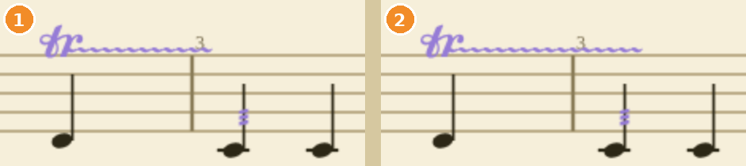
Cómo sabes que salió bien: la línea ondulada cambia de largo en la partitura, y al escuchar, el trino dura y corre como lo ajustaste. Si te equivocas, UNDO lo deshace.How you know it worked: the wavy line changes length on the score, and when you listen, the trill lasts and runs the way you set it. If you make a mistake, UNDO takes it back.
Editor de grupeto · directo o invertido, y a tiempo o retardadoTurn editor · direct or inverted, and on time or delayed
Un grupeto (el signo ∾) es un adorno de cuatro notitas que dan la vuelta alrededor de la nota: la de arriba, la nota, la de abajo y la nota otra vez.A turn (the sign ∾) is an ornament of four little notes that go around the note: the one above, the note, the one below and the note again.
Para abrirlo: haz clic derecho sobre el signo ①. En el menú que aparece, pulsa ✎ TURN EDITOR, el botón enmarcado en naranja.To open it: right-click on the sign ①. In the menu that appears, press ✎ TURN EDITOR, the button framed in orange.

- Face ②: direct empieza por la vecina de arriba; inverted, por la de abajo. El signo se da vuelta.Face ②: direct starts from the upper neighbour; inverted, from the lower one. The sign turns over.
- Place ③: on the note toca el grupeto al comienzo de la nota; delayed lo toca después, cerca del final.Place ③: on the note plays the turn at the start of the note; delayed plays it later, near the end.
- Upper / Lower neighbour ④: la alteración de cada vecina, con ♮ ♯ ♭ o dobles 𝄪 𝄫. Un grupeto sobre La♯ pide Sol𝄪 abajo.Upper / Lower neighbour ④: the accidental of each neighbour, with ♮ ♯ ♭ or doubles 𝄪 𝄫. A turn on A♯ needs G𝄪 below.
- Speed ⑤: el valor de cada notita; auto lo elige el Score.Speed ⑤: the value of each little note; with auto the Score chooses.

Cómo sabes que salió bien: el signo cambia sobre la nota, y al escuchar, el grupeto empieza y cae donde elegiste. Si te equivocas, UNDO lo deshace.How you know it worked: the sign changes above the note, and when you listen, the turn starts and falls where you chose. If you make a mistake, UNDO takes it back.
Editor de mordente · hacia arriba o hacia abajoMordent editor · up or down
Un mordente es un adorno muy corto: la nota, su vecina y la nota otra vez, muy rápido.A mordent is a very short ornament: the note, its neighbour and the note again, very fast.
Para abrirlo: haz clic derecho sobre el signo ①. En el menú que aparece, pulsa ✎ MORDENT EDITOR, el botón enmarcado en naranja.To open it: right-click on the sign ①. In the menu that appears, press ✎ MORDENT EDITOR, the button framed in orange.
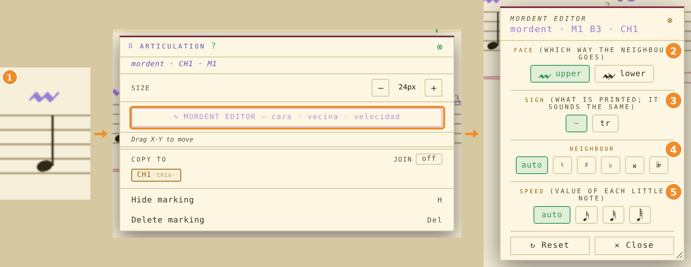
- Face ②: upper va a la vecina de arriba; lower, a la de abajo. El de abajo lleva una rayita que cruza el signo.Face ②: upper goes to the neighbour above; lower, to the one below. The lower one has a small stroke across the sign.
- Sign ③: decide lo que se imprime, sin cambiar el sonido. Con tr el mordente de arriba se escribe «tr», sin línea ondulada, como el trino corto de tres notas de Mozart o Haydn (Si–Do–Si y sigue).Sign ③: decides what is printed, without changing the sound. With tr the upper mordent is written «tr», without a wavy line, like the short three-note trill of Mozart or Haydn (B–C–B and on).
- Neighbour ④: la alteración de la vecina; auto sigue la armadura.Neighbour ④: the accidental of the neighbour; auto follows the key signature.
- Speed ⑤: el valor de cada notita; auto lo elige el Score.Speed ⑤: the value of each little note; with auto the Score chooses.

Cómo sabes que salió bien: el signo cambia sobre la nota, y al escuchar, la notita va hacia el lado que elegiste. Si te equivocas, UNDO lo deshace.How you know it worked: the sign changes above the note, and when you listen, the little note goes the way you chose. If you make a mistake, UNDO takes it back.
Editor de trémolo · medido o libreTremolo editor · measured or free
Un trémolo son rayitas cruzadas sobre la plica: la nota se repite muchas veces, rápido. Cuantas más rayitas, más rápidas las repeticiones.A tremolo is little strokes across the stem: the note is repeated many times, fast. The more strokes, the faster the repetitions.
Para abrirlo: haz clic derecho sobre el signo ①. En el menú que aparece, pulsa ✎ TREMOLO EDITOR, el botón enmarcado en naranja.To open it: right-click on the sign ①. In the menu that appears, press ✎ TREMOLO EDITOR, the button framed in orange.

- Divisions ②: 1, 2 o 3 rayitas, que son corcheas, semicorcheas o fusas del tiempo. Es lo que se lee.Divisions ②: 1, 2 or 3 strokes, which are eighths, sixteenths or thirty-seconds of the beat. That is what is read.
- Measure ③: measured toca exactamente esas repeticiones, como una repetición escrita; free repite rápido y sin contar, como el trémolo de la cuerda.Measure ③: measured plays exactly those repetitions, like a written-out repetition; free repeats fast without counting, like a string tremolo.
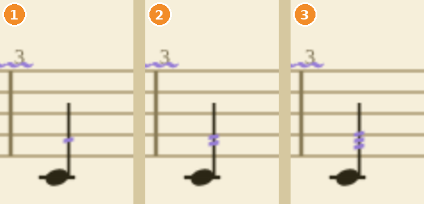
Cómo sabes que salió bien: cambia el número de rayitas sobre la plica, y al escuchar, la nota se repite a esa velocidad. Si te equivocas, UNDO lo deshace.How you know it worked: the number of strokes on the stem changes, and when you listen, the note repeats at that speed. If you make a mistake, UNDO takes it back.
Editor de arpegio · cuánto tarda en desplegarseArpeggio editor · how long it takes to unfold
Un arpegio es la línea ondulada vertical delante de un acorde: las notas no suenan juntas, sino una detrás de otra, muy rápido.An arpeggio is the vertical wavy line in front of a chord: the notes do not sound together but one after another, very fast.
Para abrirlo: haz clic derecho sobre el signo ①. En el menú que aparece, pulsa ✎ ARPEGGIO EDITOR, el botón enmarcado en naranja.To open it: right-click on the sign ①. In the menu that appears, press ✎ ARPEGGIO EDITOR, the button framed in orange.

- Direction ②: ↑ up empieza por la nota más grave; ↓ down, por la más aguda. La flecha del signo lo muestra.Direction ②: ↑ up starts from the lowest note; ↓ down, from the highest. The arrow on the sign shows it.
- Spread ③: cuántos milisegundos pasan de una nota a la siguiente. Abajo dice el total, por ejemplo «3 notes · 90 ms in total». Ahí está la diferencia entre un arpegio de arpa, lento, y uno de piano, casi junto.Spread ③: how many milliseconds pass from one note to the next. Below it says the total, for example «3 notes · 90 ms in total». That is the difference between a harp arpeggio, slow, and a piano one, almost together.

Cómo sabes que salió bien: la flecha del signo cambia, y al escuchar, el acorde se abre en esa dirección y a esa velocidad. Si te equivocas, UNDO lo deshace.How you know it worked: the arrow on the sign changes, and when you listen, the chord opens in that direction and at that speed. If you make a mistake, UNDO takes it back.
Barras del grupo · unir la cuerda con una sola barraGroup barlines · joining the strings with one barline
Clic derecho sobre la llave o el corchete del grupo, en el margen: al pasar el ratón el signo se ilumina. Le pones nombre al grupo y decides si sus barras de compás se dibujan de un pentagrama al otro, como en una partitura de orquesta. Para todos los grupos a la vez está el interruptor GROUP de BARS.Right-click on the group brace or bracket, in the margin: the sign lights up when the mouse is over it. Name the group and decide whether its barlines are drawn from one staff to the next, as in an orchestral score. For all groups at once there is the GROUP switch in BARS.
Los menús de clic derecho — cada uno es el menú de la cosa que tocaste, y sólo ofrece lo que esa cosa admite.The right-click menus — each is the menu of the thing you touched, and offers only what that thing allows.
⠿ Selección · mover, copiar y repetir un tramo⠿ Selection · moving, copying and repeating a span
Clic derecho dentro de una selección. Lo de siempre —copiar, cortar, pegar, duplicar— más lo que sirve de verdad en una partitura: Replicate repite el tramo hacia adelante, Transpose lo sube o lo baja, Snap to grid acomoda lo que quedó fuera de la reja sin desarmar los acordes, Re-value cambia las figuras, y Save section as guarda ese tramo como archivo aparte.Right-click inside a selection. The usual —copy, cut, paste, duplicate— plus what really helps in a score: Replicate repeats the span forward, Transpose moves it up or down, Snap to grid tidies what fell off the grid without breaking chords, Re-value changes the note values, and Save section as saves that span as its own file.
⠿ Canal · copiar un instrumento entero a otro⠿ Channel · copying a whole instrument to another
Clic derecho sobre el pentagrama. Copiar canal y Pegar canal se llevan el canal completo: las notas y también las articulaciones, las dinámicas, la expresión, la agógica y las regiones. Es la forma de armar el segundo violín desde el primero. Y acá se cambia la clave del canal.Right-click on the staff. Copy channel and Paste channel take the whole channel: the notes and also the articulations, dynamics, expression, agogics and regions. This is how you build the second violin from the first. The channel’s clef is changed here too.
⠿ Rótulo del canal · silenciar, esconder y el Sound FX⠿ Channel label · mute, hide and Sound FX
Clic derecho sobre el nombre del canal, a la izquierda del pentagrama. Le pones la abreviatura que sale impresa, lo silencias para oír el resto, lo escondes para que no ocupe pantalla, y de acá se abre el Sonido FX de ese canal.Right-click on the channel name, to the left of the staff. Give it the abbreviation that gets printed, mute it to hear the rest, hide it so it does not take up screen, and this is where that channel’s Sound FX opens.
⠿ Compás · ver qué tiene, y copiar su patrón⠿ Bar · seeing what it holds, and copying its pattern
Clic derecho sobre el número de compás. Es una ficha de lectura: qué notas tiene el compás, qué marcas, cómo está el pedal. Y abajo, lo práctico: copiar el patrón de este compás a un tramo de compases, para el ostinato o el acompañamiento que se repite.Right-click on the bar number. It is a reading card: what notes the bar holds, what marks, how the pedal stands. And below, the practical part: copy this bar’s pattern to a span of bars, for the ostinato or the accompaniment that repeats.
⠿ Barra de compás · el silencio antes de seguir⠿ Barline · the silence before going on
Clic derecho sobre la barra. Acá se pone el respiro: los segundos que la música espera en esa barra, para que el reverb muera antes del movimiento siguiente. Attacca es respiro 0. Y puedes declarar que ahí empieza un movimiento, con su rótulo.Right-click on the barline. This is where the breath goes: the seconds the music waits at that barline, so the reverb dies before the next movement. Attacca is breath 0. And you can declare that a movement starts there, with its label.
Si la barra está dentro del compás (la que pusiste con BARS › After › Beat), el menú lo dice —«dentro de M24»— y trae la fila Beat: con − / + la mueves a otro tiempo, y ✕ Quitar la saca del compás, que vuelve a terminar con barra simple. El respiro y el salto de sistema se quedan.If the barline is inside the bar (the one you set with BARS › After › Beat), the menu says so — “inside M24” — and adds the Beat row: − / + moves it to another beat, and ✕ Remove takes it out of the bar, which ends with a single barline again. The breath and the system break stay.
Si después de la barra cambia la cifra, el menú trae la fila Time con Visible · Hidden. Hidden no imprime la cifra ni le guarda lugar, pero el compás sigue midiendo lo mismo: sirve para el compás corto que cierra una sección que empezó con anacrusa (el 1/4 del Rondo alla Turca, antes de la coda). En pantalla queda un rótulo gris chico arriba de la barra; con clic derecho ahí la vuelves a mostrar.If the time signature changes after the barline, the menu adds the Time row with Visible · Hidden. Hidden does not print the time signature and leaves no room for it, but the bar keeps its length: it is for the short bar that closes a section that began with an upbeat (the 1/4 bar of the Rondo alla Turca, before the coda). On screen a small grey label stays above the barline; right-click it to show the time signature again.
⠿ Texto · corregir o mover lo que escribiste⠿ Text · fixing or moving what you typed
Clic derecho sobre el texto. Editarlo, cambiarle el tamaño o borrarlo. Para moverlo no hace falta el menú: se arrastra.Right-click on the text. Edit it, change its size or delete it. To move it you do not need the menu: just drag.
⠿ Expresión · hasta dónde llega la palabra⠿ Expression · how far the word reaches
Clic derecho sobre la palabra. Cambias el texto, le das un tramo o se lo quitas, la escondes sin borrarla. La ficha de abajo explica qué toque le pide al instrumento y en qué estado queda, cada uno con su ?.Right-click on the word. Change the text, give it a span or take it away, hide it without deleting. The card below explains which touch it asks of the instrument and what state it leaves, each with its own ?.
Qué dice el Estado. Lo que esta palabra hace hoy, con este archivo y este instrumento: suena (cambia el sonido, el tiempo o la dinámica), cierra el tramo anterior (como ord., semplice o naturale: no agrega nada, termina lo que venía) o todavía no suena (la palabra está bien escrita, pero aún no tiene efecto; el día que lo tenga, tu archivo la va a tocar sin cambiar nada).What the State says. What this word does today, with this file and this instrument: sounds (it changes the sound, the timing or the dynamics), closes the previous span (like ord., semplice or naturale: it adds nothing, it ends what came before) or silent (the word is written correctly but has no effect yet; the day it does, your file will play it without changing anything).
Qué es el Toque. Cómo se produce el sonido con la mano. La palabra dice la intención y cada instrumento la hace a su manera: cantabile es el dedo apoyado en el piano, un ataque lento en el clavecín y la yema del dedo en el arpa. En el piano, el toque cambia sobre todo el pequeño ruido de la mecánica que se oye justo antes de la nota. Vale desde su compás hasta el final de su tramo (o hasta la próxima palabra del mismo instrumento), y una marca puesta en la nota le gana. Más en el léxico.What the Touch is. How the sound is produced by the hand. The word states the intention and each instrument carries it out in its own way: cantabile is a pressed finger on the piano, a slow attack on the harpsichord and the fingertip on the harp. On the piano, touch mostly changes the small action noise you hear just before the note. It holds from its bar to the end of its span (or until the next word of the same instrument), and a mark placed on the note wins over it. More in the lexicon.
⠿ Dinámica · que un f suene como quieres⠿ Dynamic · making an f sound the way you want
Clic derecho sobre el matiz o el regulador. El tramo, el tamaño, y la velocity si ese f en particular tiene que ser más o menos que el f de la casa. JOIN une dos reguladores seguidos, y de acá se abre el editor de regulador.Right-click on the marking or the hairpin. The span, the size, and the velocity if that particular f has to be more or less than the house f. JOIN joins two consecutive hairpins, and the hairpin editor opens from here.
⠿ Articulación · moverla, esconderla, o entrar al trino⠿ Articulation · moving it, hiding it, or entering the trill
Clic derecho sobre el signo, y el menú se arma según de qué signo se trate: no todas las filas salen siempre. Arriba de todo, una línea en lila dice qué marca estás tocando — el tipo, el canal (o los canales, si está unida) y el compás. Si es un pedal, esa línea agrega además dónde cae dentro del compás y, en un Ped, cuánto dura su región hasta la próxima marca de pedal, en negras y en segundos al tempo de ese compás. Es la forma rápida de ver si un pedal se está quedando largo.Right-click on the sign, and the menu is built to fit it: not every row shows up every time. At the top, a lilac line tells you which mark you are on — its type, its channel (or channels, if joined) and its bar. On a pedal that line also gives where it falls inside the bar and, on a Ped, how long its region lasts up to the next pedal mark, in beats and in seconds at that bar's tempo. It is the quick way to see a pedal running long.
Size −/+ cambia el cuerpo del signo en píxeles, sólo el de esa marca. Después vienen tres filas que salen según el signo y que no son tinta sino sonido: Length (cuánto de su valor suena la nota — la que gobierna el staccato y el portato), Weight (cuánto pesa el ataque — la de los acentos) y Hold (cuánto sostiene — la del calderón y la cesura). Cada una arranca en el valor que la casa le da a ese signo y se corrige acá cuando el pasaje pide otra cosa.Size −/+ changes the sign's body in pixels, for that mark alone. Then come three rows that appear per sign and are not ink but sound: Length (how much of its value the note sounds — the one behind staccato and portato), Weight (how heavy the attack is — the one behind accents) and Hold (how long it holds — the one behind fermata and caesura). Each starts at the house value for that sign and is corrected here when the passage asks for something else.
Technique sale sólo en dos signos de cuerda y va al motor: en el arco es el punto de contacto (norm · tasto · pont · legno) y en el pizz es la cola (pleno · secco · l.v.). Retake sale sólo en las arcadas ⊓ y V, y dice dónde está el aire: before es que el arco se retomó para empezar esta nota, after que se retoma al terminarla para seguir en la que viene, y la rayita se dibuja del lado del hueco. Hacia dónde viaja el arco no se escribe — lo dicta el signo de arcada que ya está.Technique shows on two string signs only and goes to the engine: on arco it is the contact point (norm · tasto · pont · legno) and on pizz the tail (pleno · secco · l.v.). Retake shows only on the ⊓ and V bowings, and says where the air is: before means the bow was re-taken to start this note, after that it is re-taken at the end to carry on into the next, and the stroke is drawn on the side of the gap. Which way the bow travels is not written — the bowing sign already dictates it.
Si el signo tiene editor propio, la puerta está acá: trino, grupeto, mordente, trémolo y arpegio abren su ventana desde este menú. El arpegio de piano o arpa agrega además Extender al pentagrama de arriba y Cortar en este pentagrama. La marca se mueve arrastrándola en las dos direcciones, y la fila JOIN hace que una sola marca valga para varios canales a la vez.If the sign has its own editor, the door is here: trill, turn, mordent, tremolo and arpeggio open their window from this menu. A piano or harp arpeggio also gets Extend to the staff above and Cut at this staff. The mark moves by dragging it in both directions, and the JOIN row makes one mark count for several channels at once.
El pedal tiene sus dos filas propias, y es donde más conviene mirar. Depth en un Ped es cuánto baja el pie: full · 3/4 · 1/2 · 1/4, y por defecto full — a fondo la cuerda queda libre, parcial es el fieltro apoyado sin peso, que se lleva el cuerpo grave y deja pasar los parciales. En un ✻ las opciones son off · 1/4 · 1/2 · 3/4, y acá está la trampa: la fracción dice lo que QUEDA de pedal, no lo que se levanta. Sólo off cierra la región; un ✻ parcial no levanta — sigue la región con menos pedal, que es lo que hace el pie de verdad cuando los apagadores rozan la cuerda en vez de caer sobre ella.The pedal has two rows of its own, and this is where it pays to look. Depth on a Ped is how far the foot goes down: full · 3/4 · 1/2 · 1/4, full by default — all the way down the string is free, partial is the felt resting without weight, which takes the low body away and lets the partials through. On a ✻ the options are off · 1/4 · 1/2 · 3/4, and here is the trap: the fraction says what REMAINS of pedal, not what is lifted. Only off closes the region; a partial ✻ does not lift — it carries the region on with less pedal, which is what the foot really does when the dampers graze the string instead of falling onto it.
Simile sale sólo en el Ped y es el pedaleo repetido: off (esta marca y nada más) · hasta marca (hasta la próxima marca escrita) · hasta M (hasta el compás que escribas al lado). Lo que se repite no es el Ped solo sino todo el patrón de pedal de ese compás —los Ped y los ✻ que haya, con sus profundidades— estampado compás por compás; donde haya tinta escrita manda la tinta, y al terminar el tramo el motor levanta el pie con un ✻ seco. De ahí sale la única regla que hay que recordar: si el último ✻ del compás modelo es parcial, el pedal no cierra en ningún compás del tramo y queda hundido de punta a punta. El Coach avisa cuando una región queda abierta más de cuatro compases, y la línea de arriba del menú te dice cuántos segundos dura. Una marca escondida sigue pedaleando: que no se vea no la saca del motor.Simile shows on the Ped only and is repeated pedalling: off (this mark and no more) · to next mark (up to the next written mark) · to bar M (up to the bar you type beside it). What repeats is not the Ped alone but the whole pedal pattern of that bar —every Ped and ✻ in it, with their depths— stamped bar by bar; written ink always wins, and at the end of the span the engine lifts the foot with a dry ✻. Hence the one rule worth remembering: if the model bar's last ✻ is partial, the pedal closes in no bar of the span and stays down end to end. The Coach warns when a region stays open for more than four bars, and the top line of the menu tells you how many seconds it lasts. A hidden mark still pedals: not being seen does not take it out of the engine.
Abajo del todo, las dos que se olvidan. Hide marking (atajo H) saca el signo de la hoja sin quitarle el efecto: la marca sigue en el .mmf y sigue sonando, se dibuja en gris al 60 % en pantalla y no se imprime nunca. Sobre una marca ya escondida la misma fila dice Show marking y la devuelve a la tinta. Ojo con esto: las marcas escondidas sólo se ven —y sólo se pueden clickear— con SHOW HIDDEN encendido, que vive en el popup TEMPO aunque valga para toda la tinta de la obra. Y Delete marking (atajo Supr) la borra de verdad; se deshace con Ctrl+Z como cualquier otro paso.At the very bottom, the two that get forgotten. Hide marking (shortcut H) takes the sign off the page without removing its effect: the mark stays in the .mmf and keeps sounding, is drawn grey at 60 % on screen and is never printed. On an already hidden mark the same row reads Show marking and brings it back to ink. Watch out for this: hidden marks are only visible —and only clickable— with SHOW HIDDEN on, which lives in the TEMPO popup even though it governs all the ink in the piece. And Delete marking (shortcut Del) really removes it; Ctrl+Z undoes it like any other step.
⠿ Tempo · corregir un tempo ya puesto⠿ Tempo · fixing a tempo already placed
Clic derecho sobre la marca de tempo. El término, los BPM y el tramo. a tempo devuelve al tempo anterior, que es lo que quieres después de un rallentando. Y puedes ocultar el ♩= dejando sólo la palabra.Right-click on the tempo mark. The term, the BPM and the span. a tempo returns to the previous tempo, which is what you want after a rallentando. And you can hide the ♩= leaving only the word.
⠿ Región asimétrica · la frase que no va en la reja⠿ Asymmetric region · the phrase that does not sit on the grid
Clic derecho sobre el borde o el cuerpo de la región —sobre una nota gana el editor de la nota, así que busca un hueco: justo encima de la línea de arriba del pentagrama, o el borde mismo—. Le pones nombre, la ocultas o la borras, y desde aquí se abre su editor: es la frase donde el tiempo se estira y se encoge mientras la reja sigue en su lugar. Con nombre, la región es un patrón: Take la lleva del compás M al M' (se repite cada tanto como mide) y avisa cuántas copias hizo; Hide all y Delete all «nombre» actúan sobre todas a la vez. Ojo: una región oculta no suena y tampoco responde al clic derecho. Para traerla de vuelta, pon el cursor dentro de su tramo y pulsa Alt+H: se abre este mismo menú, con Show region y Show all (el atajo está en el título del menú, entre paréntesis). Los bordes se arrastran; al crearla desde una selección, revisa el borde izquierdo y llévalo a donde empieza de verdad la frase (por ejemplo, después de un silencio). Ejemplo: en el compás 226 hay una región Inhale · Extreme sobre todas las voces y la quieres en 227, 230 y 231. Clic derecho sobre la región, Take 227 a 227 ✓; otra vez, Take 230 a 231 ✓. Los compases que no van (228–229) se saltan haciendo dos pasadas, y donde ya hay copia no se duplica.Right-click on the region’s edge or body —on a note, the note editor wins, so look for a gap: just above the top staff line, or the edge itself—. Give it a name, hide it or delete it, and its editor opens from here: this is the phrase where time stretches and shrinks while the grid stays put. With a name, the region is a pattern: Take carries it from bar M to bar M' (repeating every so many bars as it is long) and reports how many copies it made; Hide all and Delete all “name” act on all of them at once. Careful: a hidden region does not play and does not answer the right-click either. To bring it back, put the cursor inside its span and press Alt+H: this same menu opens, with Show region and Show all (the shortcut is in the menu title, in brackets). The edges can be dragged; when you create it from a selection, check the left edge and take it to where the phrase really starts (for example, after a rest). Example: bar 226 holds an Inhale · Extreme region over all the voices and you want it in 227, 230 and 231. Right-click the region, Take 227 to 227 ✓; again, Take 230 to 231 ✓. The bars that should not get it (228–229) are skipped by doing two passes, and where a copy already exists it is not duplicated.
⠿ Sistema · acomodar la página antes de imprimir⠿ System · tidying the page before printing
Clic derecho sobre un sistema, en vista Página o en la de impresión. Lo subes o lo bajas dos milímetros, le sacas o le agregas un compás para que la línea cierre bien, y lo fijas para que no se mueva cuando acomodes el resto.Right-click on a system, in Page or print view. Move it up or down two millimetres, take away or add a bar so the line closes well, and lock it so it does not move while you tidy the rest.
⠿ Marca de sección · el Segno que quedó tapado⠿ Section mark · the Segno that ended up covered
Clic derecho sobre el Segno, la Coda o el Fine en la hoja. Tamaño, y se mueve en vertical arrastrando. Y desde acá se edita la sección a la que pertenece.Right-click on the Segno, Coda or Fine on the sheet. Size, and it moves vertically by dragging. And from here you edit the section it belongs to.
⠿ Aplicar a la zona · el mismo signo en todo un pasaje⠿ Apply to zone · the same sign over a whole passage
Sale después de elegir una articulación: en vez de ponerla nota por nota, eliges la zona y se aplica a todo el pasaje de una.It appears after picking an articulation: instead of placing it note by note, you choose the zone and it applies to the whole passage at once.
Y los que se abren desde un botón o un atajo — los de trabajar un pasaje: el loop, el tramo, la frase, los efectos.And the ones that open from a button or a shortcut — the ones for working on a passage: the loop, the span, the phrase, the effects.
Int·Beams · que una corrida suene como una fraseInt·Beams · making a run sound like a phrase
Clic derecho en el botón 3·2. Acá se decide cuánto cae cada nota dentro del grupo barrado: el matiz escrito es el techo del grupo y las que siguen bajan en proporción. General lo pone para toda la obra; después puedes ajustar por tramo de compases, por canal o por grupo. 0 es parejo, 4 es el más marcado.Right-click on the 3·2 button. This is where you decide how far each note falls inside the beamed group: the written dynamic is the group’s ceiling and the rest come down in proportion. General sets it for the whole piece; then you can adjust per bar span, per channel or per group. 0 is even, 4 is the most pronounced.
Loop · repetir el pasaje que estás corrigiendoLoop · looping the passage you are fixing
Clic derecho en 🔁 LOOP. Marcas A y B, lo enciendes, y el pasaje se repite mientras trabajas en él. Ver la obra entera te devuelve la vista completa sin perder el loop.Right-click on 🔁 LOOP. Mark A and B, switch it on, and the passage repeats while you work on it. See the whole piece gives you the full view back without losing the loop.
Navegador · llegar al compás 74 sin buscarloNavigator · getting to bar 74 without hunting for it
Clic derecho sobre la tira del navegador. Go to measure te lleva al compás que le digas; el zoom te acerca al loop A–B; y puedes ponerle a un punto un rótulo de sección (A, B, Coda) para volver ahí de un clic.Right-click on the navigator strip. Go to measure takes you to the bar you name; the zoom brings you to the A–B loop; and you can give a point a section label (A, B, Coda) to come back with one click.
Sound FX · reverb y eco escritos en el pasajeSound FX · reverb and echo written into the passage
Los efectos de sonido cambian cómo suena un canal: reverb (la resonancia de una sala grande), eco (la nota que se repite, cada vez más suave), porta (deslizarse hasta la nota) y vibrato (la nota que ondula).Sound effects change how a channel sounds: reverb (the resonance of a large hall), echo (the note repeating, softer each time), porta (sliding into the note) and vibrato (the note wavering).
Para abrirlo: pulsa FX ① en la fila del canal, en la lista ⚙ CHANNELS. También se abre con clic derecho sobre el nombre del canal, a la izquierda del pentagrama, y Sound FX….To open it: press FX ① in the row of the channel, in the ⚙ CHANNELS list. It also opens with a right-click on the name of the channel, to the left of the staff, and Sound FX….

- Dónde se escribe ②: This channel (el canal entero), This place (la nota que tienes seleccionada) o Selection (el tramo seleccionado). Un canal puede tener las tres a la vez.Where it is written ②: This channel (the whole channel), This place (the note you have selected) or Selection (the selected span). A channel can have all three at once.
- Las perillas ③: Reverb (cuánta sala) · Echo wet (cuánto eco entra) · Echo FB (cuántas repeticiones) · Echo time (la separación entre ecos, de 80 a 900 ms; el neutro es 400) · Porta (el deslizamiento hasta la nota, hasta 400 ms) · Vibrato (la profundidad, hasta 50 cents). Se mueven arrastrando el mouse hacia arriba o hacia abajo; un doble clic devuelve la perilla a su neutro.The knobs ③: Reverb (how much hall) · Echo wet (how much echo comes in) · Echo FB (how many repeats) · Echo time (the gap between echoes, from 80 to 900 ms; neutral is 400) · Porta (the slide into the note, up to 400 ms) · Vibrato (the depth, up to 50 cents). You turn them by dragging the mouse up or down; a double-click returns the knob to neutral.
- CLEAN ④ borra el efecto del área elegida. Si esa área no tiene nada, limpia el canal entero.CLEAN ④ clears the effect of the chosen area. If that area has nothing, it clears the whole channel.
Consejo: mejor un tramo corto, incluso una sola nota. Ahí el eco y la reverb le dan carácter a una melodía, y el porta el deslizarse a la nota. Un efecto sobre toda la obra es una mesa de mezcla; un efecto sobre una nota es interpretación.Tip: a short span is better, even a single note. That is where echo and reverb give character to a melody, and porta the slide into the note. An effect on the whole piece is a mixing desk; an effect on one note is interpretation.
Cómo sabes que salió bien: el botón FX de ese canal se pone verde, y al tocar la obra con ▶ oyes el efecto. Mientras giras la perilla todavía no se oye: se oye en la reproducción. Cada movimiento de perilla se deshace con UNDO (Ctrl+Z).How you know it worked: the FX button of that channel turns green, and when you play the piece with ▶ you hear the effect. While you turn the knob you do not hear it yet: you hear it on playback. Each knob move can be undone with UNDO (Ctrl+Z).
El efecto queda guardado en la obra (el archivo .mmf). El Keyboard tiene su propio botón ⊕ FX, para lo que tocas en vivo: ver ⊕ FX en vivo. Los dos no se suman ni se pisan. Más detalle en Sound FX por canal y por área.The effect is saved in the piece (the .mmf file). The Keyboard has its own ⊕ FX button, for what you play live: see ⊕ FX live. The two neither add up nor overwrite each other. More detail in Sound FX by channel and by area.
Agógica de frase · el solista respira y la orquesta no se muevePhrase agogics · the soloist breathes and the orchestra stays put
Desde el menú de la selección o de la región. Eliges el eje —el tiempo, la presión o la articulación—, en qué parte de la frase estás (inhala, avanza, llega, exhala) y cuánto: sutil, expresivo o extremo. El dibujo se arrastra con el mouse hasta que la frase suena como la cantas. Tiene su ?.From the selection or region menu. Pick the axis —time, pressure or articulation—, which part of the phrase you are in (inhale, move, arrive, exhale) and how much: subtle, expressive or extreme. The drawing is dragged with the mouse until the phrase sounds the way you sing it. It has its own ?.
AGOG de la nota · estirar una sola notaNote AGOG · stretching a single note
Botón ← AGOG del editor de nota. Cuando es una nota la que tiene que ceder y no la frase entera: su forma, su intensidad y su tamaño.Button ← AGOG in the note editor. For when it is one note that has to give and not the whole phrase: its shape, its intensity and its size.
Secuencias · escribir el ostinato una vezSequences · writing the ostinato once
Una secuencia repite el estado de un compás a lo largo de un tramo. El caso típico es el pedal: escribes cómo se pedalea un compás y dices «y así hasta el compás 61».A sequence repeats the state of one bar along a span. The typical case is the pedal: you write how to pedal one bar and say “and so on up to bar 61”.

Para hacer una secuencia:To make a sequence:
- Pon el cursor en el compás que sirve de modelo (el patrón), o selecciona el tramo entero.Put the cursor on the bar that serves as the model (the pattern), or select the whole span.
- Pulsa SEQ en la barra de arriba. El patrón ya viene con el compás donde estás.Press SEQ on the top bar. The pattern already comes with the bar where you are.
- Elige cómo se repite ②: ⟳ simile o ⧉ written marks.Choose how it repeats ②: ⟳ simile or ⧉ written marks.
- Revisa PATTERN, FROM y THROUGH ③ y pulsa el botón ④.Check PATTERN, FROM and THROUGH ③ and press the button ④.
- ⟳ simile es una regla viva: no escribe ninguna marca, el Score la repite cada vez que toca. Se cuelga del Ped del compás patrón, así que ese compás tiene que tener pedal.⟳ simile is a live rule: it writes no marks, the Score repeats it every time it plays. It hangs on the Ped of the pattern bar, so that bar must have pedal.
- ⧉ written marks escribe marcas de verdad en cada compás, que después puedes editar una por una.⧉ written marks writes real marks in each bar, which you can then edit one by one.
Para corregir una secuencia: haz clic en su fila ①. La vista va a su compás y sus valores bajan a las cajitas; cambia lo que quieras y pulsa el botón. La ✕ la borra. Todo se deshace con Ctrl+Z.To fix a sequence: click its row ①. The view goes to its bar and its values come down to the boxes; change what you want and press the button. The ✕ deletes it. Everything undoes with Ctrl+Z.
También se abre desde la selección: clic derecho sobre ella → Open sequence…It also opens from the selection: right-click it → Open sequence…
Cómo sabes que salió bien: la secuencia aparece en la lista con su tramo (por ejemplo, M1 → M61), y al tocar se oye en todo el tramo.How you know it worked: the sequence appears in the list with its span (for example, M1 → M61), and when it plays you hear it across the whole span.
Toda la explicación está en Las secuencias: el estado de un compás, repetido.The full explanation is in Sequences: the state of one bar, repeated.
Re-valuar · pasar un pasaje a la mitad del valorRe-value · halving a passage’s note values
Desde el menú de la selección. Cambia todas las figuras de la selección de una duración a otra —las corcheas en semicorcheas, por ejemplo— sin que tengas que reescribir el pasaje.From the selection menu. Changes every note value in the selection from one duration to another —eighths into sixteenths, say— without your having to rewrite the passage.
Acordes de dos figuras (2026-09-25). Una obra que entra por MIDI puede traer acordes con una negra entre corcheas —la voz que se sostuvo—. Antes RE-VALUE los saltaba («0 re-valued») porque exigía que el acorde entero fuera de la figura FROM; ahora actúa sobre las cabezas que son FROM y deja las demás, así que FROM 1/4 → 1/8 deja el acorde parejo. Y al achicar no escribe silencios donde ya suena otra cosa.Two-value chords (2026-09-25). A piece that comes in from MIDI can carry chords with a quarter among eighths —the voice that was held—. RE-VALUE used to skip them (“0 re-valued”) because it required the whole chord to be the FROM value; now it acts on the heads that are FROM and leaves the others, so FROM 1/4 → 1/8 makes the chord uniform. And when shortening it writes no rests where something already sounds.
Select · las acciones de selección, a la vistaSelect · the selection actions, in plain sight
Clic derecho en ◻ SELECT. Lo mismo que el menú de la selección, pero sin tener que seleccionar primero: seleccionar todo el canal o todos los canales, y de ahí copiar, transponer, guardar el tramo, o borrar cerrando el hueco.Right-click on ◻ SELECT. The same as the selection menu, but without having to select first: select the whole channel or all channels, and from there copy, transpose, save the section, or delete closing the gap.
Editar sección · corregir una repetición ya hechaEdit section · fixing a repeat already made
Desde noviembre de 2026 una repetición se corrige en Repeats, el mismo popup que la crea: clic derecho sobre su sombreado, sobre su barra ‖: o :‖, o sobre una de sus casillas. Ver cómo corregirla.Since November 2026 a repeat is corrected in Repeats, the same popup that creates it: right-click its shade, its ‖: or :‖ barline, or one of its endings. See how to correct it.
Editar volta · la casilla que abarca otros compasesEdit volta · the ending that covers other bars
Las casillas se corrigen junto con su repetición, en Repeats: clic derecho sobre el corchete y aparecen todas, cada una en su fila — M (de qué compás a qué compás), Beat (vacío = el compás entero) y Pass (la 1ª marca la vuelta 1; la 2ª marca last, la vuelta final).Endings are corrected together with their repeat, in Repeats: right-click the bracket and they all appear, each on its row — M (from which bar to which bar), Beat (empty = the whole bar) and Pass (the 1st ticks pass 1; the 2nd ticks last, the final pass).
Tramo de trabajo · encerrarse en veinte compasesWork range · shutting yourself into twenty bars
Clic derecho sobre el display de compás. Declaras entre qué compases estás trabajando y la obra deja de estorbarte. Se limpia con un clic cuando quieres verla entera otra vez.Right-click on the bar display. Declare which bars you are working between and the rest of the piece stops getting in the way. One click clears it when you want the whole piece back.
Agrupar canales · dos flautas en un pentagramaChannel grouping · two flutes on one staff
Asa ☰ de la fila del canal, en el panel de canales. Dices si ese canal tiene pentagrama propio o comparte con otro —dos flautas en un pentagrama, la cuerda con su llave—, le pones el nombre del grupo, y marcas si es percusión.The ☰ handle in the channel row, in the channels panel. Say whether that channel has its own staff or shares one —two flutes on a staff, the strings with their brace—, give the group a name, and mark it if it is percussion.
Pulse · el metrónomo para escribir con el pulso puestoPulse · the metronome for writing with the beat going
El pulso es el latido regular de la música, el que marcas con el pie. PULSE te lo muestra con una luz mientras escribes, para que sientas dónde cae cada tiempo.The pulse is the steady beat of the music, the one you tap with your foot. PULSE shows it to you with a light while you write, so you can feel where each beat falls.
Para abrirlo: pulsa ♩ PULSE ①, abajo a la derecha.To open it: press ♩ PULSE ①, at the bottom right.

- La luz ②: late con el pulso. Cada tiempo se marca más fuerte que sus subdivisiones.The light ②: it beats with the pulse. Each beat is marked more strongly than its subdivisions.
- ▶ start ③ la enciende; el mismo botón dice ■ stop para apagarla.▶ start ③ turns it on; the same button says ■ stop to turn it off.
- Tempo ④: aquí no se elige. Se lee de la partitura, en el compás donde está el cursor. Para cambiarlo, usa TEMPO o el chip BPM de la barra de abajo.Tempo ④: it is not chosen here. It is read from the score, at the bar where the cursor is. To change it, use TEMPO or the BPM chip in the bottom bar.
- Subdiv ⑤: la luz late tantas veces por tiempo como dice SUBDIV, y al lado ves la figura. Con 4, late en semicorcheas.Subdiv ⑤: the light beats as many times per beat as SUBDIV says, and next to it you see the note value. With 4, it beats in sixteenth notes.
El PULSE del Score es solo luz, sin sonido. Si quieres oír un click, o elegir tú el tempo, usa el pulse del Keyboard.The Score’s PULSE is light only, with no sound. If you want to hear a click, or choose the tempo yourself, use the Keyboard’s pulse.
Cómo sabes que salió bien: la luz late y el botón dice ■ stop. Si mueves el cursor a un compás con otro tempo, la luz cambia de velocidad.How you know it worked: the light beats and the button says ■ stop. If you move the cursor to a bar with another tempo, the light changes speed.
La nota que sigue · escribir una apoyaturaNext note · writing an appoggiatura
Botón Gr de la banda. Lo pones en acciaccatura o apoyatura y la próxima nota que escribas sale como notita; lo apagas y vuelve a lo normal.Button Gr on the band. Set it to acciaccatura or appoggiatura and the next note you write comes out as a grace note; switch it off and it goes back to normal.
Armar tresillo · tres en el lugar de dosArm tuplet · three in the time of two
Botón Tu de la banda. Dices cuántas notas van en lugar de cuántas, si lleva corchete y número, y de qué lado. También se aplica a una selección ya escrita, o se deshace con UNTUPLET.Button Tu on the band. Say how many notes go in the time of how many, whether it carries a bracket and number, and on which side. It also applies to a selection already written, or undoes with UNTUPLET.
Desde el editor de nota (2026-09-26). El editor de nota (clic derecho sobre una nota) tiene una fila nueva debajo de RE-VALUE: ³ TUPLET · open →. Abre este mismo popup —el que también abren el * del teclado numérico, el Tu de la banda y el ³ TUPLET del DUR— al lado del editor de nota, donde se ve, y ya no escondido detrás del teclado. Si la nota pertenece a un tresillo, el popup abre con los valores de su grupo.From the note editor (2026-09-26). The note editor (right-click a note) has a new row below RE-VALUE: ³ TUPLET · open →. It opens this same popup —the one that Numpad *, the band’s Tu and the DUR’s ³ TUPLET also open— beside the note editor, where you can see it, and no longer hidden behind the keyboard. If the note belongs to a tuplet, the popup opens with its group’s values.

Menor · natural, armónica o melódicaMinor · natural, harmonic or melodic
Botón del modo menor. Cambia qué escala usa el teclado por grados: la natural, la armónica con su séptima subida, o la melódica.The minor-mode button. Changes which scale the degree keyboard uses: natural, harmonic with its raised seventh, or melodic.
La ventana del Coach · dónde aparecen las explicacionesThe Coach window · where the explanations appear
Tecla ?, o el 🎓. Es la ventana donde salen las lecciones, los avisos y lo que explica cada signo de ayuda. Queda fijada mientras lees, apila los mensajes en vez de pisarlos, y tiene su tamaño de letra.Key ?, or the 🎓. This is the window where lessons, notices and the explanation of each help sign appear. It stays pinned while you read, stacks messages instead of overwriting them, and has its own font size.
Dudas de la edición, resueltas. Editing questions, answered.
Preguntas que surgieron al editar el Rondo alla Turca de Mozart (KV 331, 3.er movimiento), con la respuesta que funcionó. Sirven para cualquier obra que traiga los mismos problemas.Questions that came up while editing Mozart’s Rondo alla Turca (K. 331, 3rd movement), with the answer that worked. They apply to any piece with the same problems.
Un compás de 1/4 en medio de la obraA 1/4 bar in the middle of the piece
La duda: la sección empezó con anacrusa y cierra con un compás de un solo tiempo (el M96 del Rondo). ¿Cómo se escribe sin inventar casillas ni renumerar? La respuesta: clic derecho sobre la barra anterior, y en el popup ⠿ Barline, fila Time, elige Hidden. La cifra 1/4 no se imprime ni ocupa lugar, el compás conserva su duración y la numeración sigue igual.The question: the section began with an upbeat and closes with a one-beat bar (bar 96 of the Rondo). How do you write it without inventing endings or renumbering? The answer: right-click the barline before it, and in the ⠿ Barline popup, Time row, choose Hidden. The 1/4 time signature is not printed and takes no room, the bar keeps its length and the numbering stays the same.
El trino corto de tres notasThe short three-note trill
La duda: en los compases 23 y 87 hay un «tr» que se toca Si-Do-Si. Con el trino sale una línea ondulada, suena como un trino largo, y la opción «tr» no aparece. La respuesta: es un mordente, no un trino. Pon un mordente hacia arriba desde ART, ábrelo con clic derecho y en Signo elige tr: se imprime «tr» sin línea y suena principal, vecina, principal. Esa opción vive en el editor del mordente; el editor del trino no la tiene.The question: in bars 23 and 87 there is a “tr” played B–C–B. With the trill you get a wavy line, it sounds like a long trill, and the “tr” option does not appear. The answer: it is a mordent, not a trill. Place an upper mordent from ART, open it with a right-click and under Sign choose tr: it prints “tr” with no line and sounds main, neighbour, main. That option lives in the mordent editor; the trill editor does not have it.
La ligadura de una corrida de apoyaturasThe slur over a run of grace notes
La duda: en la mano izquierda cada acorde llega con tres notitas (La-Do♯-Mi y luego La). ¿De dónde a dónde va la ligadura? La respuesta: de la primera notita a la última, como en la edición impresa: se toca hacia la nota real, pero se escribe así. Una sola ligadura por grupo; si quedó alguna en una notita del medio, quítala.The question: in the left hand each chord arrives with three grace notes (A–C♯–E, then A). Where does the slur go from and to? The answer: from the first grace note to the last, as in the printed edition: it is played towards the real note, but it is written this way. One slur per group; if one is left on a grace note in the middle, remove it.
Dar aire a las notitasGiving the grace notes some air
La duda: las tres notitas salen apretadas y la ligadura casi no se ve. La respuesta: Shift + arrastre corre cada notita hacia la izquierda sin tocar el tiempo. En un compás normal hace falta poco —la primera un poco más que la segunda, y la tercera casi nada—: si se abren demasiado, la primera choca con la corchea anterior. Solo donde sobra lugar, como después de un compás corto, se pueden abrir más.The question: the three grace notes come out cramped and the slur can hardly be seen. The answer: Shift + drag moves each grace note to the left without touching the time. In a normal bar a little is enough —the first a bit more than the second, the third hardly at all—: spread them too far and the first one collides with the eighth note before it. Only where there is room to spare, as after a short bar, can they open further.
Join junta las corcheas del compás anteriorJoin joins the eighths of the previous bar
La duda: en el M23 quise unir unas corcheas con Join y se unieron las del M22. La respuesta: con el Beam editor abierto y fijado, un clic simple sobre una nota no lo cambia de grupo: sigue apuntando al de antes. Selecciona las notas con Alt + clic, o abre el editor con clic derecho sobre una nota del compás que quieres unir.The question: in bar 23 I wanted to join some eighths with Join, and the ones in bar 22 were joined instead. The answer: with the Beam editor open and pinned, a single click on a note does not move it to another group: it keeps pointing at the previous one. Select the notes with Alt + click, or open the editor with a right-click on a note of the bar you want to join.
De un MIDI a tu copia, nota por nota. From a MIDI file to your copy, note by note.
El Player abre un .mid (o un .mmf), lo dibuja en el Score Roll y deja que el copista corrija cada nota dentro de la red pitagórica antes de guardarla como MMF. Los signos ? del Player traen hasta aquí.The Player opens a .mid (or an .mmf), draws it on the Score Roll and lets the copyist fix each note within the Pythagorean lattice before saving it as MMF. The Player's ? signs bring you here.
Varios archivos, una obra · los movimientosSeveral files, one work · the movements
El Player junta movimientos de dos maneras. Varios MIDI a la vez: selecciónalos juntos en el explorador (o suéltalos juntos sobre la zona de carga) y cada archivo entra como un movimiento de la misma obra, uno detrás de otro — así se arman, por ejemplo, las Sinfonías de Bach que vienen en archivos separados. El orden es el del nombre del archivo, con los números bien leídos (2 antes que 10): numéralos como quieras que suenen. Un MIDI con varias piezas dentro — las Danzas rumanas de Bartók, en un solo archivo —: el Player reconoce el compás vacío que las separa y lo guarda como límite entre piezas; al abrir el .mmf en el Score, cada pieza empieza después de una doble barra. Con una obra ya cargada, soltar un MIDI más lo agrega al final como otro movimiento, también si ya corregiste notas con el copista o si la obra la abriste desde un .mmf: lo corregido se conserva. Para quitar un movimiento, clic derecho sobre él. SAVE MMF guarda todo en un solo .mmf, con sus movimientos; MOVEMENT, arriba del roll, muestra solo el que suena. Un .mmf no se mezcla: si el primero de los archivos es un .mmf, se abre solo ese.The Player joins movements in two ways. Several MIDI files at once: select them together in the file browser (or drop them together on the drop zone) and each file comes in as a movement of the same work, one after another — that is how, for example, Bach's Sinfonias that come as separate files are put together. The order is the file-name order, with numbers read properly (2 before 10): number them the way you want them to play. One MIDI file with several pieces inside — Bartók's Romanian Dances, in a single file —: the Player recognises the empty bar between them and keeps it as a boundary between pieces; when the .mmf is opened in the Score, each piece starts after a double barline. With a work already loaded, dropping one more MIDI file adds it at the end as another movement, also after you have fixed notes with the copyist or opened the work from an .mmf: your corrections are kept. To remove a movement, right-click it. SAVE MMF saves everything in one .mmf, with its movements; MOVEMENT, above the roll, shows only the one playing. An .mmf is not mixed in: if the first of the files is an .mmf, only that one opens.
Lo que el MIDI trae y lo que no · un MIDI limpio desde FinaleWhat the MIDI carries and what it does not · a clean MIDI from Finale
Un MIDI guarda cómo suena la música, no cómo está escrita, y el copista reconstruye la partitura a partir de eso. El tempo escrito entra aunque el archivo traiga antes el tempo de reproducción del programa (vale el último); las pistas sin nombre («[Group 2]», «Track 0») se llaman por su instrumento; una nota que el programa vuelve a tocar mientras suena ya no se pierde. Los adornos se deducen del sonido: dos apoyaturas que desembocan en una nota de tresillo se escriben como apoyaturas, y en música binaria el mismo dibujo se escribe como mordente, porque suenan igual. Para la escritura exacta —adornos, repeticiones, calderones— abre el MusicXML.A MIDI file stores how the music sounds, not how it is written, and the copyist rebuilds the score from that. The written tempo comes in even if the file first carries the program’s playback tempo (the last one wins); unnamed tracks («[Group 2]», «Track 0») are named after their instrument; a note the program re-strikes while it is still sounding is no longer lost. Ornaments are inferred from the sound: two grace notes leading into a triplet note are written as grace notes, and in binary music the same figure is written as a mordent, because they sound the same. For the exact writing —ornaments, repeats, fermatas— open the MusicXML.
Un MIDI limpio desde Finale: Human Playback en None antes de exportar; si la partitura nació de un MIDI importado, limpia las duraciones con la herramienta MIDI (Duration → Clear), porque Finale guarda cuánto sonó cada tecla y el MIDI exportado lo repite; y en la barra de reproducción, el mismo tempo de la partitura. El título: el MIDI no trae título ni compositor; si identificas la obra con Score Intelligence, la ficha los pone, y el Score los toma junto con la indicación de tempo. Sin ficha, la obra lleva el nombre del archivo.A clean MIDI from Finale: Human Playback set to None before exporting; if the score was born from an imported MIDI, clear the durations with the MIDI Tool (Duration → Clear), because Finale keeps how long each key sounded and the exported MIDI repeats it; and in the playback bar, the score’s own tempo. The title: a MIDI file carries no title or composer; if you identify the work with Score Intelligence, the card fills them in, and the Score takes them along with the tempo indication. Without a card, the work carries the file name.
Cómo leer el Score RollHow to read the Score Roll
El Score Roll es la obra dibujada: cada nota es una rayita. De izquierda a derecha corre el tiempo; de abajo arriba, las notas van de graves a agudas. Y cada rayita se puede tocar con el mouse para ver qué nota es y corregirla.The Score Roll is the piece drawn out: every note is a dash. Time runs from left to right; from bottom to top, the notes go from low to high. And every dash can be clicked with the mouse to see which note it is and to fix it.
Para verlo: abre el Player con el botón ⊞ player (está en el Score, el Keyboard, la Console y la ventana Coach) y carga un .mid o un .mmf en LOAD. El Score Roll lo dibuja enseguida.To see it: open the Player with the ⊞ player button (it is in the Score, the Keyboard, the Console and the Coach window) and load a .mid or an .mmf in LOAD. The Score Roll draws it at once.

- Una rayita es una nota ①: su largo es lo que dura, su altura es el tono y su color es la pista (en un piano, una mano por color). Una nota repetida —las corcheas de un acompañamiento— se ve como una fila de rayitas, una por ataque.A dash is a note ①: its length is how long it lasts, its height is the pitch and its colour is the track (on a piano, one hand per colour). A repeated note — the quavers of an accompaniment — shows as a row of dashes, one per attack.
- Las líneas verticales ② son las barras de compás, con su número abajo, como en la partitura. Si la obra empieza con anacrusa, ese compás es el 0.The vertical lines ② are the barlines, numbered at the bottom as in the score. If the piece starts with an upbeat, that bar is bar 0.
- El cursor ③ marca por dónde va la música. Un clic en un espacio vacío lo lleva ahí; su ▼ se arrastra para recorrer la obra.The cursor ③ shows where the music is. A click on an empty spot moves it there; drag its ▼ to travel through the piece.
- El reloj ④ dice el tiempo, el compás:tiempo y la duración total.The clock ④ shows the time, the bar:beat and the total length.
- OBRA y MOVIMIENTO ⑤ eligen qué se ve: toda la obra o solo un movimiento. EXPORTAR ⑥ guarda una parte (ver ⭳ export).WORK and MOVEMENT ⑤ choose what you see: the whole piece or one movement. EXPORT ⑥ saves a part (see ⭳ export).
Las rayitas son pequeñas: para tocar una con el mouse, primero amplía con Ctrl + rueda sobre el roll (ver Moverse por el roll).The dashes are small: to click one with the mouse, zoom in first with Ctrl + wheel over the roll (see Moving around the roll).
Cómo sabes que salió bien: al darle ▶, el cursor avanza y las rayitas que cruza son las notas que oyes.How you know it worked: when you press ▶, the cursor moves and the dashes it crosses are the notes you hear.
El copista · tocar una nota para ver qué es y corregirlaThe copyist · click a note to see what it is and fix it
Un MIDI guarda cómo sonó la música, no cómo se escribe. El copista es la ventana que te dice qué nota es cada rayita y te deja corregirla: su nombre, su altura, cuánto dura y con qué fuerza suena.A MIDI file stores how the music sounded, not how it is written. The copyist is the window that tells you which note each dash is and lets you fix it: its name, its pitch, how long it lasts and how loud it sounds.
Para abrirlo: haz clic sobre una rayita ① del Score Roll. Se abre la ventana NOTA · CORRECCIÓN DEL COPISTA y la rayita queda marcada con un borde.To open it: click a dash ① in the Score Roll. The NOTE · COPYIST'S FIX window opens and the dash is marked with a border.

- El nombre ②: la nota con su octava (Re4 es el Re justo encima del Do central del piano). Al lado, su lugar en la red pitagórica [quintas, octavas] y su frecuencia en Hz. Debajo: la pista, el instrumento, cuándo suena y cuánto dura.The name ②: the note with its octave (D4 is the D just above middle C on the piano). Next to it, its place in the Pythagorean lattice [fifths, octaves] and its frequency in Hz. Below: the track, the instrument, when it sounds and how long it lasts.
- ALTURA ③: los + suben y los − bajan. T = un tono. L = lima, el semitono que cambia la letra (Do → Si). A = apótome, el semitono que deja la letra y pone la alteración (Re → Re♯). K = una coma: la nota vecina por coma (La♭ +K = Sol♯).PITCH ③: + raises and − lowers. T = a whole tone. L = limma, the semitone that changes the letter (C → B). A = apotome, the semitone that keeps the letter and adds the accidental (D → D♯). K = a comma: the comma neighbour (A♭ +K = G♯).
- OCTAVA ④: −8va y +8va mueven la nota una octava abajo o arriba.OCTAVE ④: −8va and +8va move the note an octave down or up.
- DELETREO ⑤: ♯↔♭ cambia La♯ por Si♭ (o al revés). En la afinación pitagórica son dos notas distintas, separadas por una coma: elige la que la música pide.SPELLING ⑤: ♯↔♭ swaps A♯ for B♭ (or the other way round). In Pythagorean tuning they are two different notes, a comma apart: choose the one the music asks for.
- ♪ escuchar ⑥ toca la nota sola. ✕ borrar la saca de la copia (el MIDI a veces trae notas de más).♪ listen ⑥ plays the note alone. ✕ delete removes it from the copy (a MIDI file sometimes brings extra notes).
- DURACIÓN ⑦: ÷2 la mitad, ×2 el doble, −10% y +10% para ajustes finos. l.v. = dejar sonar: la nota no se apaga.DURATION ⑦: ÷2 half, ×2 double, −10% and +10% for fine adjustments. l.v. = let vibrate: the note is never damped.
- VELOCITY ⑧: con qué fuerza suena la nota, de 1 (muy suave) a 127 (muy fuerte).VELOCITY ⑧: how loud the note sounds, from 1 (very soft) to 127 (very loud).
Para corregir muchas notas a la vez: Shift + arrastre sobre el roll toma un pasaje entero y le aplica lo mismo. La ventana se cierra con ⊗.To fix many notes at once: Shift + drag over the roll takes a whole passage and applies the same to it. Close the window with ⊗.
Cómo sabes que salió bien: cada cambio suena enseguida, el nombre se actualiza y aparece la palabra editada. La corrección viaja en el MMF cuando lo guardas.How you know it worked: every change sounds at once, the name updates and the word edited appears. The fix travels in the MMF when you save it.
Moverse por el rollMoving around the roll
Ctrl + rueda amplía o reduce alrededor del cursor. Ya ampliado: rueda = subir y bajar por las alturas · Shift + rueda = avanzar y retroceder en el tiempo · arrastrar el fondo = mover la vista. Con la obra entera a la vista la rueda no tiene hacia dónde ir: primero, zoom. Doble clic en un espacio vacío vuelve a la obra completa; WORK y MOVEMENT, arriba, eligen qué se ve. Un clic en el vacío lleva el cursor ahí; el ▼ del cursor se arrastra para recorrer la obra.Ctrl + wheel zooms in or out around the cursor. Once zoomed: wheel = up and down through the pitches · Shift + wheel = forwards and backwards in time · dragging the background = moving the view. With the whole piece in view the wheel has nowhere to go: zoom first. Double-click an empty spot to return to the whole piece; WORK and MOVEMENT, at the top, choose what is shown. A click on empty space moves the cursor there; drag the cursor's ▼ to scrub through the piece.
El loop A–B · clic derechoThe A–B loop · right-click
Clic derecho sobre el roll: Marcar A aquí y Marcar B aquí. La sección queda sombreada y el transporte la repite. Las banderitas A y B se arrastran para ajustarlas; quitar pins A–B las borra. Para marcar justo sobre una barra, amplía antes con Ctrl + rueda.Right-click on the roll: Set A here and Set B here. The section is shaded and the transport loops it. Drag the A and B flags to adjust them; clear A–B pins removes them. To mark right on a barline, zoom in first with Ctrl + wheel.
⭳ export · guardar por partes⭳ export · saving by parts
El botón ⭳ export de la cabecera del roll abre tres caminos. Exportar por instrumento…: marcas las pistas que quieres (por ejemplo, solo una mano) y el rango: Obra, Tramo visible o Sección A–B (aparece cuando hay pins A y B). Exportar selección: las notas elegidas con Shift + arrastre. Exportar sección A–B: todas las pistas entre A y B. separar voces reparte un canal polifónico en voces aguda, media y grave. Cada camino descarga un .mmf.The ⭳ export button in the roll's header opens three paths. Export by instrument…: tick the tracks you want (for example, one hand only) and the range: Work, Visible range or A–B section (shown when A and B pins exist). Export selection: the notes chosen with Shift + drag. Export A–B section: every track between A and B. split voices splits a polyphonic channel into high, middle and low voices. Each path downloads an .mmf.